UI-Mate: Advancing Open-Weight Foundation GUI Agents with In-Context Demonstrations
UI-Mate：带上下文演示的开源基础 GUI Agent（含 OSWorkerBench）
开源 CUA：OSWorld-Verified 77.0%（开源 SOTA）；OSWorkerBench 41 应用 100 个长程办公任务，单条演示把严格成功率 17.2%→35.4%。
翻译范围：正文全部段落走三步精翻（直译→反思→雅化）；脚注与参考文献不译；公式、数字、模型名、数据集名、引用标记按原文 Unicode 保真；表格还原为可复制文本。
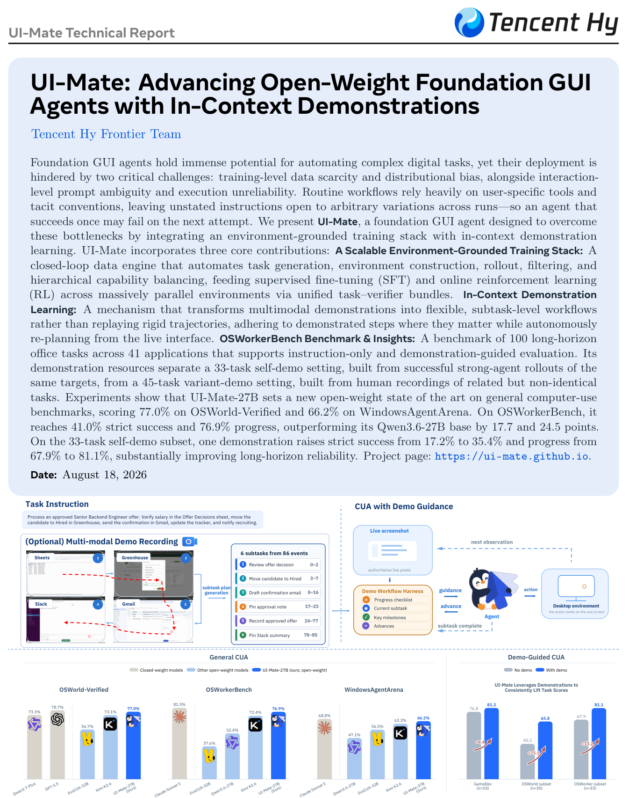
Figure 1 UI-Mate combines strong general computer-use capabilities with demonstration-guided execution. Top: For an underspecified cross-application task, an optional multimodal demonstration is distilled into a subtask-level workflow. During execution, the harness provides the current subtask and key milestones; the agent grounds them in the live interface, acts, and advances the workflow upon completion. Bottom: In the general CUA evaluation setting, UI-Mate-27B is competitive with leading open- and closed-weight systems across OSWorld-Verified, OSWorkerBench, and WindowsAgentArena. In the reported self-demo evaluation, one same-task demonstration raises task scores from 76.8 to 81.2 on GameDev, 40.3 to 65.8 on the OSWorld subset, and 67.9 to 81.1 on the 33-task OSWorkerBench subset.图 1 UI-Mate 将强大的通用计算机使用能力与演示引导的执行相结合。上：对于欠规范的跨应用任务，可选的多模态演示被蒸馏为子任务级工作流；执行时，运行框架提供当前子任务与关键里程碑，智能体将其落地到实时界面、执行动作，并在完成后推进工作流。下：在通用 CUA 评测设置中，UI-Mate-27B 在 OSWorld-Verified、OSWorkerBench 与 WindowsAgentArena 上与领先的开源及闭源系统相当。在报告的自演示评测中，一条同任务演示使 GameDev 任务得分从 76.8 提升至 81.2，OSWorld 子集从 40.3 提升至 65.8，33 任务 OSWorkerBench 子集从 67.9 提升至 81.1。
arXiv:2608.15930v1 [cs.AI] 16 Aug 2026
arXiv:2608.15930v1 [cs.AI] 16 Aug 2026
Contents
目录
1 Introduction 4
1 引言 4
2 Overview 5 2.1 Task Formulation . . . . . . . . . . . . . . . . . . . . . . . . . . . . . . . . . . . . . . . . . . . 5 2.2 UI-Mate System Overview . . . . . . . . . . . . . . . . . . . . . . . . . . . . . . . . . . . . . . 6
2 概述 5 2.1 任务形式化 . . . . . . . . . . . . . . . . . . . . . . . . . . . . . . . . . . . . . . . . . . . 5 2.2 UI-Mate 系统概览 . . . . . . . . . . . . . . . . . . . . . . . . . . . . . . . . . . . . . . 6
3 Data Pipeline 7 3.1 Task Instructions . . . . . . . . . . . . . . . . . . . . . . . . . . . . . . . . . . . . . . . . . . . 7 3.2 Environment Construction . . . . . . . . . . . . . . . . . . . . . . . . . . . . . . . . . . . . . . 8 3.3 Rollout and Filtering . . . . . . . . . . . . . . . . . . . . . . . . . . . . . . . . . . . . . . . . . 8 3.3.1 Rollout Infrastructure . . . . . . . . . . . . . . . . . . . . . . . . . . . . . . . . . . . . 8 3.3.2 Trajectory Filtering . . . . . . . . . . . . . . . . . . . . . . . . . . . . . . . . . . . . . 9 3.4 Capability Tree and Data Diagnosis . . . . . . . . . . . . . . . . . . . . . . . . . . . . . . . . 9 3.4.1 Extracting Capabilities . . . . . . . . . . . . . . . . . . . . . . . . . . . . . . . . . . . 9 3.4.2 Constructing the Capability Tree . . . . . . . . . . . . . . . . . . . . . . . . . . . . . . 9 3.4.3 Data Rebalancing . . . . . . . . . . . . . . . . . . . . . . . . . . . . . . . . . . . . . . 9 3.5 Human Annotation . . . . . . . . . . . . . . . . . . . . . . . . . . . . . . . . . . . . . . . . . . 10 3.6 Verifiable Tasks for Reinforcement Learning . . . . . . . . . . . . . . . . . . . . . . . . . . . . 10 3.6.1 Verifiable Task Generation . . . . . . . . . . . . . . . . . . . . . . . . . . . . . . . . . . 10 3.6.2 Evaluator Refinement . . . . . . . . . . . . . . . . . . . . . . . . . . . . . . . . . . . . 11
3 数据流水线 7 3.1 任务指令 . . . . . . . . . . . . . . . . . . . . . . . . . . . . . . . . . . . . . . . . . . . . 7 3.2 环境构建 . . . . . . . . . . . . . . . . . . . . . . . . . . . . . . . . . . . . . . . . . . 8 3.3 Rollout 与过滤 . . . . . . . . . . . . . . . . . . . . . . . . . . . . . . . . . . . . . . . . . 8 3.3.1 Rollout 基础设施 . . . . . . . . . . . . . . . . . . . . . . . . . . . . . . . . . . . . 8 3.3.2 轨迹过滤 . . . . . . . . . . . . . . . . . . . . . . . . . . . . . . . . . . . . . . . 9 3.4 能力树与数据诊断 . . . . . . . . . . . . . . . . . . . . . . . . . . . . . . . . . . . . . . 9 3.4.1 能力抽取 . . . . . . . . . . . . . . . . . . . . . . . . . . . . . . . . . . . . . . . . 9 3.4.2 构建能力树 . . . . . . . . . . . . . . . . . . . . . . . . . . . . . . . . . . . . . . . 9 3.4.3 数据再平衡 . . . . . . . . . . . . . . . . . . . . . . . . . . . . . . . . . . . . . . . 9 3.5 人工标注 . . . . . . . . . . . . . . . . . . . . . . . . . . . . . . . . . . . . . . . . . . . . 10 3.6 用于强化学习的可验证任务 . . . . . . . . . . . . . . . . . . . . . . . . . . . . . . . . . . . . 10 3.6.1 可验证任务生成 . . . . . . . . . . . . . . . . . . . . . . . . . . . . . . . . . . . . . 10 3.6.2 评估器精化 . . . . . . . . . . . . . . . . . . . . . . . . . . . . . . . . . . . . . . 11
4 Training UI-Mate for General Computer Use 11 4.1 Training Recipe . . . . . . . . . . . . . . . . . . . . . . . . . . . . . . . . . . . . . . . . . . . . 11 4.2 Supervised Fine-Tuning . . . . . . . . . . . . . . . . . . . . . . . . . . . . . . . . . . . . . . . 12 4.3 Agentic Reinforcement Learning . . . . . . . . . . . . . . . . . . . . . . . . . . . . . . . . . . 12 4.3.1 Online GUI RL Preliminaries . . . . . . . . . . . . . . . . . . . . . . . . . . . . . . . . 12 4.3.2 Trajectory-to-Token Credit Assignment . . . . . . . . . . . . . . . . . . . . . . . . . . 13 4.3.3 Asynchronous Group-Relative Optimization . . . . . . . . . . . . . . . . . . . . . . . . 14 4.3.4 Adaptive Curriculum Sampling . . . . . . . . . . . . . . . . . . . . . . . . . . . . . . . 14
4 训练 UI-Mate 掌握通用计算机使用 11 4.1 训练方案 . . . . . . . . . . . . . . . . . . . . . . . . . . . . . . . . . . . . . . . . . . . . . . 11 4.2 监督微调 . . . . . . . . . . . . . . . . . . . . . . . . . . . . . . . . . . . . . . . . . . . . 12 4.3 智能体强化学习 . . . . . . . . . . . . . . . . . . . . . . . . . . . . . . . . . . . . . . . . 12 4.3.1 在线 GUI RL 预备知识 . . . . . . . . . . . . . . . . . . . . . . . . . . . . . . . . . 12 4.3.2 轨迹到 Token 的信用分配 . . . . . . . . . . . . . . . . . . . . . . . . . . . . . 13 4.3.3 异步组相对优化 . . . . . . . . . . . . . . . . . . . . . . . . . . . . . . . . . . . 14 4.3.4 自适应课程采样 . . . . . . . . . . . . . . . . . . . . . . . . . . . . . . . . . . . . 14
5 DemoCUA: Learning from In-Context Demonstrations 15 5.1 Demonstration Representation . . . . . . . . . . . . . . . . . . . . . . . . . . . . . . . . . . . 15 5.2 Training with Demonstration . . . . . . . . . . . . . . . . . . . . . . . . . . . . . . . . . . . . 15 5.3 Inference with Demonstration . . . . . . . . . . . . . . . . . . . . . . . . . . . . . . . . . . . . 16
5 DemoCUA：从上下文演示中学习 15 5.1 演示表示 . . . . . . . . . . . . . . . . . . . . . . . . . . . . . . . . . . . . . . . . . . . 15 5.2 使用演示进行训练 . . . . . . . . . . . . . . . . . . . . . . . . . . . . . . . . . . . . . . . 15 5.3 使用演示进行推理 . . . . . . . . . . . . . . . . . . . . . . . . . . . . . . . . . . . . . . . . 16
6 OSWorkerBench: Realistic Cross-Application Office Workflows with Multimodal Demon- strations 18 6.1 Benchmark Design and Construction Pipeline . . . . . . . . . . . . . . . . . . . . . . . . . . . 19 6.2 Multimodal Demonstration Guidance . . . . . . . . . . . . . . . . . . . . . . . . . . . . . . . . 20 6.3 Task Coverage and Characteristics . . . . . . . . . . . . . . . . . . . . . . . . . . . . . . . . . 21 6.4 Executable Evaluation . . . . . . . . . . . . . . . . . . . . . . . . . . . . . . . . . . . . . . . . 22
6 OSWorkerBench：带多模态演示的跨应用真实办公工作流 18 6.1 基准设计与构建流水线 . . . . . . . . . . . . . . . . . . . . . . . . . . . . . . . . . . . . . . . 19 6.2 多模态演示引导 . . . . . . . . . . . . . . . . . . . . . . . . . . . . . . . . . . . . . . . . . 20 6.3 任务覆盖与特征 . . . . . . . . . . . . . . . . . . . . . . . . . . . . . . . . . . . . . . . . . 21 6.4 可执行评估 . . . . . . . . . . . . . . . . . . . . . . . . . . . . . . . . . . . . . . . . . . 22
7 Evaluations 23 7.1 Evaluation Setup . . . . . . . . . . . . . . . . . . . . . . . . . . . . . . . . . . . . . . . . . . . 23 7.1.1 Benchmarks . . . . . . . . . . . . . . . . . . . . . . . . . . . . . . . . . . . . . . . . . . 23 7.1.2 Baselines . . . . . . . . . . . . . . . . . . . . . . . . . . . . . . . . . . . . . . . . . . . 23 7.1.3 Evaluation Protocols . . . . . . . . . . . . . . . . . . . . . . . . . . . . . . . . . . . . . 24 7.2 Main Results . . . . . . . . . . . . . . . . . . . . . . . . . . . . . . . . . . . . . . . . . . . . . 25 7.2.1 OSWorld-Verified . . . . . . . . . . . . . . . . . . . . . . . . . . . . . . . . . . . . . . . 25 7.2.2 WindowsAgentArena . . . . . . . . . . . . . . . . . . . . . . . . . . . . . . . . . . . . . 25 7.2.3 OSWorkerBench . . . . . . . . . . . . . . . . . . . . . . . . . . . . . . . . . . . . . . . 25 7.2.4 Decision-Turn Analysis on OSWorkerBench . . . . . . . . . . . . . . . . . . . . . . . . 26 7.3 DemoCUA Results . . . . . . . . . . . . . . . . . . . . . . . . . . . . . . . . . . . . . . . . . . 27 7.3.1 Benchmark . . . . . . . . . . . . . . . . . . . . . . . . . . . . . . . . . . . . . . . . . . 28
7 评估 23 7.1 评估设置 . . . . . . . . . . . . . . . . . . . . . . . . . . . . . . . . . . . . . . . . . . . . . 23 7.1.1 基准 . . . . . . . . . . . . . . . . . . . . . . . . . . . . . . . . . . . . . . . . . . . 23 7.1.2 基线 . . . . . . . . . . . . . . . . . . . . . . . . . . . . . . . . . . . . . . . . . . . 23 7.1.3 评估协议 . . . . . . . . . . . . . . . . . . . . . . . . . . . . . . . . . . . . . . . . . 24 7.2 主要结果 . . . . . . . . . . . . . . . . . . . . . . . . . . . . . . . . . . . . . . . . . . . . 25 7.2.1 OSWorld-Verified . . . . . . . . . . . . . . . . . . . . . . . . . . . . . . . . . . . . . 25 7.2.2 WindowsAgentArena . . . . . . . . . . . . . . . . . . . . . . . . . . . . . . . . . . 25 7.2.3 OSWorkerBench . . . . . . . . . . . . . . . . . . . . . . . . . . . . . . . . . . . . 25 7.2.4 OSWorkerBench 上的决策轮分析 . . . . . . . . . . . . . . . . . . . . . . . . . . . 26 7.3 DemoCUA 结果 . . . . . . . . . . . . . . . . . . . . . . . . . . . . . . . . . . . . . . . . . . 27 7.3.1 基准 . . . . . . . . . . . . . . . . . . . . . . . . . . . . . . . . . . . . . . . . . . . 28
2
2
7.3.2 Demonstration Construction. . . . . . . . . . . . . . . . . . . . . . . . . . . . . . . . . 28 7.3.3 Evaluation Setup . . . . . . . . . . . . . . . . . . . . . . . . . . . . . . . . . . . . . . . 28 7.3.4 Results . . . . . . . . . . . . . . . . . . . . . . . . . . . . . . . . . . . . . . . . . . . . 29 7.3.5 Case Study . . . . . . . . . . . . . . . . . . . . . . . . . . . . . . . . . . . . . . . . . . 30 7.4 Findings . . . . . . . . . . . . . . . . . . . . . . . . . . . . . . . . . . . . . . . . . . . . . . . . 30 7.4.1 Data . . . . . . . . . . . . . . . . . . . . . . . . . . . . . . . . . . . . . . . . . . . . . . 30 7.4.2 Model Training . . . . . . . . . . . . . . . . . . . . . . . . . . . . . . . . . . . . . . . . 31 7.4.3 DemoCUA . . . . . . . . . . . . . . . . . . . . . . . . . . . . . . . . . . . . . . . . . . 33
7.3.2 演示构建 28 7.3.3 评估设置 . . . . . . . . . . . . . . . . . . . . . . . . . . . . . . . . . . . . . . . . . . 28 7.3.4 结果 . . . . . . . . . . . . . . . . . . . . . . . . . . . . . . . . . . . . . . . . . . . 29 7.3.5 案例研究 . . . . . . . . . . . . . . . . . . . . . . . . . . . . . . . . . . . . . . . . . 30 7.4 发现 . . . . . . . . . . . . . . . . . . . . . . . . . . . . . . . . . . . . . . . . . . . . . . . 30 7.4.1 数据 . . . . . . . . . . . . . . . . . . . . . . . . . . . . . . . . . . . . . . . . . . . 30 7.4.2 模型训练 . . . . . . . . . . . . . . . . . . . . . . . . . . . . . . . . . . . . . . . . . 31 7.4.3 DemoCUA . . . . . . . . . . . . . . . . . . . . . . . . . . . . . . . . . . . . . . . . 33
8 UI-Mate App 34 8.1 Overview . . . . . . . . . . . . . . . . . . . . . . . . . . . . . . . . . . . . . . . . . . . . . . . 34 8.2 General CUA . . . . . . . . . . . . . . . . . . . . . . . . . . . . . . . . . . . . . . . . . . . . . 34 8.3 Demo CUA . . . . . . . . . . . . . . . . . . . . . . . . . . . . . . . . . . . . . . . . . . . . . . 35 8.4 Deployment . . . . . . . . . . . . . . . . . . . . . . . . . . . . . . . . . . . . . . . . . . . . . . 35
8 UI-Mate App 34 8.1 概览 . . . . . . . . . . . . . . . . . . . . . . . . . . . . . . . . . . . . . . . . . . . . . . 34 8.2 通用 CUA . . . . . . . . . . . . . . . . . . . . . . . . . . . . . . . . . . . . . . . . . . . . 34 8.3 演示 CUA . . . . . . . . . . . . . . . . . . . . . . . . . . . . . . . . . . . . . . . . . . . . 35 8.4 部署 . . . . . . . . . . . . . . . . . . . . . . . . . . . . . . . . . . . . . . . . . . . . . . . 35
9 Related Work 36
9 相关工作 36
10 Discussion and Future Work 37
10 讨论与未来工作 37
11 Author Contributions 37
11 作者贡献 37
A Source of Task Instructions 42
A 任务指令来源 42
B Details of DemoCUA Data Generation 43
B DemoCUA 数据生成细节 43
C Details of GameDev Tasks 44
C GameDev 任务细节 44
D GameDev Performance of Kimi-K2.6 46
D Kimi-K2.6 的 GameDev 性能 46
E Details of the OSWorld-Subset under DemoCUA setting 47
E DemoCUA 设定下 OSWorld 子集的细节 47
F Details of the OSWorker-Subset under DemoCUA setting 49
F DemoCUA 设定下 OSWorker 子集的细节 49
1Introduction1 引言
Foundation GUI agents promise to turn natural-language intent into multi-step action across software ecosystems. Recent CUA systems [1, 2], including UI-TARS [3, 4] and Qwen-UI-Agent [5], show that vision- language models can perceive interfaces, ground actions, and execute extended workflows directly on screen. Yet benchmark progress alone does not yield reliable real-world deployment, which remains constrained by two complementary bottlenecks. The first is a training bottleneck: scalable GUI learning requires not only trajectories, but also executable environments, reliable verifiers, and broad capability coverage. The second is an interaction bottleneck: an instruction usually specifies the desired outcome more readily than the user-specific procedure by which it should be achieved. The former limits what an agent can learn, whereas the latter limits how consistently it applies what it already knows.
基础 GUI 智能体有望将自然语言意图转化为跨软件生态的多步骤操作。UI-TARS [3, 4] 与 Qwen-UI-Agent [5] 等近期 CUA 系统 [1, 2] 表明，视觉-语言模型能够感知界面、定位动作，并直接在屏幕上执行长程工作流。然而，基准成绩的进步并不等于可靠的现实部署——后者仍受制于两个相辅相成的瓶颈。其一是训练瓶颈：可扩展的 GUI 学习不仅需要轨迹，还需要可执行环境、可靠验证器与广泛的能力覆盖。其二是交互瓶颈：指令往往只指明期望结果，却难以描述实现该结果所需的用户特定流程。前者决定了智能体能学到什么，后者决定了它将已知能力落实得有多稳定。
GUI interaction data are inseparable from the environments in which they are generated. Unlike static text or image corpora, a trajectory is useful for learning only when its initial state can be instantiated, its actions can be executed, and its outcome can be verified. Recent work has responded with scalable synthetic experience, cross-platform trajectory collection, and automated construction of verifiable environments [2, 6–8]. Scale alone, however, does not guarantee coverage. Data production naturally favors what is inexpensive to instantiate: short, single-application tasks accumulate, whereas long-horizon workflows, cross-application information transfer, and recovery from execution errors remain sparse. Training on this skewed distribution encourages narrow execution patterns. The central data problem is therefore not merely how many trajectories to collect, but how to diagnose and correct what the corpus fails to cover.
GUI 交互数据与生成它的环境密不可分。不同于静态文本或图像语料，一条轨迹只有在其初始状态可被实例化、其动作可被执行、其结果可被验证时，才对学习有价值。为此，近期工作发展出可扩展的合成经验、跨平台轨迹采集和可验证环境的自动化构建 [2, 6–8]。然而，规模本身并不等于覆盖。数据生产天然偏向实例化成本低廉的内容：短小的单应用任务不断累积，长程工作流、跨应用信息传递与错误恢复样本却依然稀疏。在这种偏斜分布上训练，只会固化狭窄的执行模式。因此，核心的数据问题不只是采集多少条轨迹，而是如何诊断并补正语料未能覆盖的部分。
The interaction bottleneck persists even for a capable agent because the missing information is absent from the instruction itself. Routine work is shaped by a user’s tools, file organization, templates, naming conventions, and required output formats rather than by a single universal procedure. Encoding every such choice in a prompt can require as much effort as performing the task manually, so users provide concise instructions and leave procedural details implicit. Those details may then be resolved differently across runs, causing an agent that succeeds once to fail on an ostensibly identical request. Mean success rates obscure this distinction: occasional correct resolutions of ambiguity and consistently correct resolutions can produce the same average, although only the latter supports dependable delegation. For end users, reliability is not secondary to capability but the means through which capability is experienced.
即便能力再强的智能体，也绕不开交互瓶颈——因为缺失的信息本就不在指令之中。日常工作由用户的工具、文件组织方式、模板、命名规范和输出格式要求所塑造，而非遵循某套通用流程。把每一个这样的选择都写进提示词，代价可能与手动完成任务相当；用户因此只给出简洁指令，把流程细节留在言外。这些细节在不同运行中可能被解读出不同结果，致使曾一次性成功的智能体在看似完全相同的请求上失败。平均成功率恰恰掩盖了这一区别：对歧义的偶发正确解读与持续正确解读，可以给出相同的均值——但只有后者才能支撑可靠的委托。对最终用户而言，可靠性并非能力的附属品，而是能力被切实体验到的途径。
We address both bottlenecks with UI-Mate, an open-weight foundation GUI agent that combines environment-
我们以 UI-Mate 同时应对这两个瓶颈：它是一个开源权重的 GUI 智能体基础模型，将基于环境的
grounded training with in-context demonstration learning. Figure 1 summarizes the resulting system and its two evaluation regimes, while §2 formalizes the task and presents the complete architecture. On the training side, a closed-loop data pipeline (§3) constructs tasks and executable environments, collects and filters rollouts, and uses a hierarchical capability tree to identify and rebalance gaps in coverage. The resulting verified trajectories and task–verifier bundles support supervised fine-tuning followed by online agentic reinforcement learning in the general computer-use training stack (§4).
训练与上下文演示学习相结合。图 1 概括了最终系统及其两种评估模式，§2 对任务进行形式化并给出完整架构。在训练一侧，闭环数据流水线（§3）联合构造任务与可执行环境，采集并过滤 rollout，再借助层次化能力树识别并再平衡覆盖缺口。由此得到的经验证轨迹与任务-验证器组合，支撑通用计算机使用训练栈（§4）中先监督微调、后在线智能体强化学习的完整流程。
On the interaction side, UI-Mate introduces DemoCUA (§5) to communicate procedural intent through a multimodal demonstration recorded from either a human or an agent. Prior human-taught GUI agents have shown that screen recordings can expose reusable procedural knowledge [9]. UI-Mate converts such a recording into a subtask-level workflow rather than treating it as an action sequence to replay. At execution time, the live screenshot remains authoritative: the agent follows demonstrated steps when they remain relevant, supplies omitted low-level actions, and re-plans when the target task diverges from the recording. UI-Mate App (§8) realizes this paradigm on the user’s own desktop by recording a demonstration and subsequently running the agent against the same live environment.
在交互一侧，UI-Mate 引入 DemoCUA（§5），借助由人或智能体录制的多模态演示传达流程性意图。已有「人类示范教学」式 GUI 智能体表明，屏幕录像能够承载可复用的流程性知识 [9]。UI-Mate 将这类录像转化为子任务级工作流，而非视作待回放的动作序列。执行时，实时截图始终是权威依据：演示步骤仍然适用时智能体遵循之，并补全省略的低层动作；一旦目标任务偏离录像，则重新规划。UI-Mate App（§8）在用户自己的桌面上落地这一范式：先录制演示，随后让智能体在同一实时环境中运行。
Measuring the value of this guidance requires more than the instruction-only protocols used by established desktop benchmarks such as OSWorld [10] and WindowsAgentArena [11]. We therefore introduce OSWorker- Bench (§6), an office-centric benchmark of 100 long-horizon tasks spanning 41 normalized applications and 10 job families. Its 67 Long-Memory tasks require delayed reuse of dynamic information, while 49 Multi-App tasks require substantive information transfer across at least three applications. It supports instruction-only and demonstration-guided evaluation, with two distinct demonstration settings. The 33-task self-demo set pairs each target with a successful strong-agent rollout of that same task and supports the quantitative DemoCUA evaluation in this report. The 45-task variant-demo set instead pairs each target with a multimodal
衡量这种引导的价值，仅凭 OSWorld [10]、WindowsAgentArena [11] 等既有桌面基准的纯指令协议并不足够。为此我们提出 OSWorkerBench（§6）：一个以办公为中心的基准，含 100 个长程任务，覆盖 41 个规范化应用与 10 个职业族；其中 67 个 Long-Memory 任务要求延迟复用动态信息，49 个 Multi-App 任务要求在至少三个应用之间完成实质性信息传递。该基准同时支持纯指令与演示引导两种评估，并提供两种不同的演示设置：33 个任务的 self-demo 集将每个目标与同一任务上一次成功的强智能体 rollout 配对，用于本报告的定量 DemoCUA 评估；45 个任务的 variant-demo 集则将每个目标与一段多模态的
human recording of a semantically related but non-identical source task and is intended to measure procedural transfer. In either paired comparison, the target instruction, initialized environment, interaction budget, and executable verifier remain fixed; only demonstration availability changes.
人类录像配对，录像对应语义相关但并不相同的源任务，用以衡量流程迁移能力。在任一配对比较中，目标指令、初始环境、交互预算与可执行验证器均保持不变，唯一变化的是演示是否可用。
Our evaluation (§7) shows that UI-Mate-27B reaches 77.0% on OSWorld-Verified and 66.2% on Windows Agent Arena, establishing the strongest open-weight results among the systems in our comparison. On OSWorkerBench, it achieves 41.0% strict success and 76.9% progress, improving over its Qwen3.6-27B base model by 17.7 and 24.5 percentage points, respectively. On a 30-task subset of OSWorld-Verified, one demonstration raises the average task score from 40.3% to 65.8%. We observe similarly substantial gains on the 33-task OSWorkerBench self-demo subset, introduced in this work, where progress increases from 67.9% to 81.1% and strict success from 17.2% to 35.4%. These results support a central empirical finding: demonstrations improve not only average task completion, but also the consistency with which an agent realizes underspecified user intent.
评估结果（§7）显示，UI-Mate-27B 在 OSWorld-Verified 上达到 77.0%，在 Windows Agent Arena 上达到 66.2%，为所比较系统中开源权重的最佳成绩。在 OSWorkerBench 上，它取得 41.0% 严格成功率与 76.9% 进展率，分别较 Qwen3.6-27B 基座提升 17.7 和 24.5 个百分点。在 OSWorld-Verified 的 30 任务子集上，一条演示即可将平均任务得分从 40.3% 提升至 65.8%。在本工作提出的 33 任务 OSWorkerBench self-demo 子集上，增益同样可观：进展率由 67.9% 升至 81.1%，严格成功率由 17.2% 升至 35.4%。这些结果共同支撑一个核心经验结论：演示不仅提升平均任务完成率，更提升智能体落实欠规范用户意图的一致性。
In summary, this report makes three primary contributions:
综上，本报告的主要贡献有三：
• Environment-grounded data and training. We develop a closed-loop pipeline that jointly constructs tasks and environments, filters trajectories, diagnoses capability coverage, and produces supervision for both SFT and online RL.
• 基于环境的数据与训练。我们构建了一个闭环流水线，联合构造任务与环境、过滤轨迹、诊断能力覆盖，并为 SFT 与在线 RL 产出监督信号。
• Demonstration-guided computer use. We introduce an in-context learning formulation that converts multimodal human or agent demonstrations into adaptive subtask-level workflows, preserving procedural intent without reducing execution to rigid replay.
• 演示引导的计算机使用。我们提出一种上下文学习形式化框架，把多模态的人类或智能体演示转化为自适应的子任务级工作流，既保留流程性意图，又不将执行退化为僵硬回放。
• Benchmark and empirical evidence. We introduce OSWorkerBench and its controlled paired protocol, and show that UI-Mate advances open-weight general computer use while demonstrations substantially improve long-horizon execution reliability.
• 基准与实证证据。我们提出 OSWorkerBench 及其受控配对协议，结果显示 UI-Mate 推进了开源权重的通用计算机使用水平，且演示显著提升了长程执行的可靠性。
2Overview2 概述
2.1Task Formulation2.1 任务形式化
General computer use. We define a computer-use task as a pair
通用计算机使用。我们将计算机使用任务定义为一个二元组
T = (x, E), (1)
T = (x, E), (1)
where x is a natural-language instruction and E is a computer-use environment: a machine with an operating system, installed applications, and user files, which the agent operates directly.
其中 x 为自然语言指令，E 为计算机使用环境，即一台装有操作系统、应用软件与用户文件的机器，智能体直接在其上操作。
The agent interacts with E in discrete decision steps. At step t it receives an observation ot, the screenshot of the screen after the previous action has been executed. It then produces one response
智能体以离散的决策步与 E 交互。在第 t 步，它接收观测 ot——上一个动作执行后的屏幕截图——随后产生一个响应
yt = (rt, at) ∼πθ( · | x, ht, ot) , (2)
yt = (rt, at) ∼πθ( · | x, ht, ot) , (2)
where rt is intermediate reasoning, at is the action to execute, and ht is the interaction history. We keep ht to a bounded window of recent responses, so the input does not grow with the length of the task. We write ct = (x, ht, ot) for this step context.
其中 rt 为中间推理，at 为待执行动作，ht 为交互历史。我们将 ht 限定为近期响应的有界窗口，使输入规模不随任务长度增长。记 ct = (x, ht, ot) 为该步上下文。
A single response may carry more than one action,
单个响应可携带多个动作，
a(1)
a(1)
t , . . . , a(Kt)
t , . . . , a(Kt)
, a(k)
, a(k)
t ∈A, (3)
t ∈A, (3)
at =
at =
where A is the action space. The Kt actions run consecutively, and the agent receives no new observation until they finish. One response is therefore one decision turn, and we measure interaction length in decision turns rather than in individual operations.
其中 A 为动作空间。这 Kt 个动作连续执行，期间智能体不会收到新的观测。因此一个响应即一个决策轮；我们以决策轮而非单个操作来度量交互长度。
Execution ends when the agent emits a terminal action or exhausts its step budget. The resulting trajectory is
当智能体发出终止动作或耗尽步数预算时，执行结束，所得轨迹为
τ = (x, o1, y1, . . . , oT , yT ). (4)
τ = (x, o1, y1, . . . , oT , yT ). (4)
Whether the task succeeded cannot be read off τ alone. It is decided by an executable verifier that inspects
任务是否成功无法仅凭 τ 判断，而是由可执行验证器裁定——它检查
the final state of E and returns a binary outcome R(τ) ∈{0, 1}. The agent optimizes E [R(τ)].
E 的最终状态并返回二元结果 R(τ) ∈{0, 1}，智能体的优化目标即为 E [R(τ)]。
Demonstration-guided computer use. A demonstration-guided task additionally provides a demonstration d of how the task, or a closely related one, has been carried out before. We do not consume d as a flat action sequence; it is segmented into an ordered set of subtasks
演示引导的计算机使用。演示引导型任务额外提供一段演示 d，说明该任务或密切相关任务此前如何完成。我们并不将 d 当作扁平的动作序列，而是把它切分为有序的子任务集合
�
�
, (5)
, (5)
d = (s1, . . . , sN), sn =
d = (s1, . . . , sN), sn =
ℓn, vn, un
ℓn, vn, un
where ℓn is a natural-language subtask goal, vn is a verifiable completion criterion for it, and un = �
其中 ℓn 为自然语言描述的子任务目标，vn 为相应的可验证完成判据，un = �
u(1)
u(1)
is the ordered sequence of action descriptions performed inside that subtask. Every u(m)
为该子任务内所执行动作描述的有序序列。每个 u(m)
n , . . . , u(Mn)
n , . . . , u(Mn)
n is a textual description of an operation together with the visual cues that identify its target; it carries no pixel coordinates and is therefore advisory rather than executable. At each step the agent is shown only the part of d that is currently relevant. A pointer nt ∈{1, . . . , N} tracks the active subtask, and the agent conditions on the workflow view
n 是一次操作的文本描述及其目标的视觉线索；它不含像素坐标，因而只具建议性而不可直接执行。每一步中，智能体仅看到 d 中当前相关的部分。指针 nt ∈{1, . . . , N} 跟踪当前活动子任务，智能体以如下工作流视图为条件
�
�
, (6)
, (6)
, ℓnt, vnt, unt
, ℓnt, vnt, unt
ℓ1, . . . , ℓN | {z } progress checklist
ℓ1, . . . , ℓN | {z } progress checklist
gt = Φ(d, nt) =
gt = Φ(d, nt) =
i.e. the goals of all subtasks annotated with completed / current / upcoming markers, but the detailed action steps of the active subtask only. The policy becomes
亦即全部子任务目标附上已完成 / 当前 / 待办标记，而详细动作步骤仅保留活动子任务的部分。于是策略变为
yt = (rt, at) ∼πθ( · | x, ht, ot, gt) , (7)
yt = (rt, at) ∼πθ( · | x, ht, ot, gt) , (7)
and the action space is extended with one control action, A+ = A ∪{subtask_complete}. The agent emits subtask_complete once ot satisfies vnt, which advances the pointer,
同时动作空间扩展一个控制动作：A+ = A ∪{subtask_complete}。一旦 ot 满足 vnt，智能体即发出 subtask_complete，令指针前移：
(
(
min(nt + 1, N), at = subtask_complete, nt, otherwise, (8)
min(nt + 1, N), at = subtask_complete, nt, otherwise, (8)
nt+1 =
nt+1 =
so progress through the demonstration is driven by the observed screen state rather than by a fixed step counter. Two properties of this formulation matter for what follows. First, gt is a prior, not a target: unt may omit the low-level operations needed on the live screen, may reference elements that are absent, or may be misaligned with the current state, so the correct at is the one the observation ot demands and the observation retains veto power over the demonstration. Second, the objective is unchanged—the verifier still inspects the final state of E and the agent still maximizes E[R(τ)]—because the demonstration alters only the conditioning of the policy. General computer use is thus the special case gt = ∅, which occurs whenever no useful demonstration is available, and a demonstration-guided agent must remain competent in that regime.
因此，演示内的推进由观察到的屏幕状态驱动，而非固定的步数计数器。这一形式化有两个性质对后文至关重要。其一，gt 是先验而非目标：unt 可能省略实时屏幕所需的低层操作，可能引用并不存在的元素，也可能与当前状态不对齐——正确的 at 始终是观测 ot 所要求的那个，观测对演示保有否决权。其二，优化目标不变——验证器仍检查 E 的最终状态，智能体仍最大化 E[R(τ)]——因为演示仅改变策略的条件输入。于是，通用计算机使用成为 gt = ∅ 的特例：每当没有可用演示时即退回此情形，而演示引导的智能体必须在该情形下依然胜任。
2.2UI-Mate System Overview2.2 UI-Mate 系统概览
UI-Mate delivers five connected components that together support the full lifecycle of a computer-use agent: an environment-grounded data pipeline, a training stack for general computer use, DemoCUA for learning from in-context demonstrations, OSWorkerBench for controlled evaluation, and a unified harness for deployment and evaluation. Together, they connect executable data construction, policy training, procedural adaptation, benchmark evaluation, and real-world execution.
UI-Mate 由五个相互衔接的组件构成，覆盖计算机使用智能体的完整生命周期：基于环境的数据流水线、通用计算机使用训练栈、从上下文演示中学习的 DemoCUA、面向受控评估的 OSWorkerBench，以及支撑部署与评估的统一 harness。它们串起可执行数据构建、策略训练、流程适配、基准评估与真实环境执行的全链路。
Environment-grounded data pipeline. UI-Mate uses an environment-grounded data pipeline to produce diverse and executable training data. Starting from task instructions, the pipeline constructs the required applications, files, and initial states, executes agent rollouts, and removes invalid or incomplete trajectories. A hierarchical capability tree tracks data coverage and identifies applications, operations, and workflows that remain underrepresented. The pipeline produces verified trajectories for supervised fine-tuning and executable task–verifier bundles for online reinforcement learning. Rollout outcomes and capability diagnostics are fed back into task and environment construction, allowing later collection to focus on weak or missing capabilities. In §3 we describe the pipeline in detail.
基于环境的数据流水线。UI-Mate 以基于环境的数据流水线产出多样且可执行的训练数据：从任务指令出发，构建所需应用、文件与初始状态，执行智能体 rollout，并剔除无效或不完整轨迹。层次化能力树持续跟踪数据覆盖，识别表示不足的应用、操作与工作流。流水线为监督微调产出经验证的轨迹，为在线强化学习产出可执行的任务-验证器组合；rollout 结果与能力诊断又回流至任务与环境构建，使后续采集聚焦薄弱或缺失能力。§3 详述该流水线。
Training for general computer use. Built on the outputs of the data pipeline, the general computer-use training stack combines supervised fine-tuning with agentic reinforcement learning. Supervised fine-tuning teaches the
通用计算机使用训练。在数据流水线产出之上，通用计算机使用训练栈将监督微调与智能体强化学习相结合。监督微调教会
interaction protocol, visual grounding, application workflows, and multi-step execution, while reinforcement learning allows the policy to act in executable environments and learn from verifier scores assigned to complete trajectories. Together, these stages produce a policy that can plan over long horizons, track cross-application state, recover from errors, and complete tasks from natural-language instructions. In §4 we present the training method.
智能体交互协议、视觉定位、应用工作流与多步执行；强化学习则让策略在可执行环境中行动，并依据赋予完整轨迹的验证器得分学习。两者结合，产出能够长程规划、跟踪跨应用状态、从错误中恢复、并按自然语言指令完成任务的策略。§4 介绍训练方法。
DemoCUA. DemoCUA enables the general policy to learn user-specific procedures from in-context multimodal demonstrations. A recorded human execution or successful agent rollout is converted offline into a structured workflow containing subtasks, completion criteria, and visually grounded action descriptions. During execution, the model receives the current workflow together with the live screenshot and interaction history. Because the screenshot remains the primary source for action selection, the model can follow useful demonstrated steps, skip unnecessary ones, and revise the plan when the target task differs from the recording. Training examples cover cases in which the demonstration agrees with, diverges from, or is unrelated to the current interface state, teaching the model to use the workflow as guidance rather than as a fixed script.
DemoCUA。DemoCUA 让通用策略得以从上下文多模态演示中学习用户特定流程。录制的真人执行或成功的智能体 rollout 会被离线转换为结构化工作流，内含子任务、完成判据与视觉定位的动作描述。执行时，模型同时接收当前工作流、实时截图与交互历史。由于截图始终是动作选择的首要依据，模型可以遵循有用的演示步骤、跳过多余步骤，并在目标任务偏离录像时修正计划。训练样例覆盖演示与当前界面状态一致、偏离乃至无关的各种情形，教会模型将工作流用作指引而非固定脚本。
OSWorkerBench. OSWorkerBench evaluates both general computer-use ability and the ability to use a procedure supplied by a demonstration. It contains 100 long-horizon office tasks across 41 applications, all available for instruction-only evaluation. Its demonstration-guided mode has two distinct settings: 33 targets have self-demos obtained from successful strong-agent rollouts on those same tasks, while 45 targets have human-recorded variant-demos from related but non-identical tasks. Within either paired protocol, the target is evaluated with and without its demonstration under the same instruction, environment, interaction budget, and executable verifier. The performance difference therefore isolates the value of demonstration availability from the model’s instruction-only ability, while only the variant-demo setting measures transfer across task variants. The benchmark reports both strict task success and partial progress on long workflows. In §6 we describe its design and construction.
OSWorkerBench。OSWorkerBench 同时评估通用计算机使用能力与利用演示所给流程的能力。它含 100 个跨 41 个应用的长程办公任务，全部支持纯指令评估。其演示引导模式有两种设置：33 个目标配有 self-demo（来自同一任务上成功的强智能体 rollout），45 个目标配有 variant-demo（来自相关但不相同任务的人类录制）。在任一配对协议下，同一目标在相同指令、环境、交互预算与可执行验证器下分别做有演示与无演示的评估。由此，性能差异将演示可用性的价值从模型的纯指令能力中剥离；而只有 variant-demo 设置度量跨任务变体的迁移。该基准同时报告长工作流的严格任务成功率与部分进展。§6 描述其设计与构建。
Unified harness for deployment and evaluation. A shared harness connects the trained policy to executable computer environments during both deployment and evaluation. It manages the observation–reasoning–action loop, interaction history, model invocation, action execution, and trajectory recording, while platform-specific adapters support local desktops, virtual machines, and sandbox environments. UI-Mate App uses this harness for general and demonstration-guided execution, demonstration recording, and user oversight of the execution trace. The evaluation system uses the same interaction format in controlled environments and attaches executable verifiers to completed trajectories. In §8 we describe UI-Mate App and its deployment.
部署与评估的统一 harness。一个共享 harness 在部署与评估两个阶段把训练好的策略接入可执行的计算机环境：它管理观测-推理-动作循环、交互历史、模型调用、动作执行与轨迹记录，平台专用适配器则支持本地桌面、虚拟机与沙箱环境。UI-Mate App 借助该 harness 完成通用与演示引导执行、演示录制，以及用户对执行轨迹的监督。评估系统在受控环境中沿用同一交互格式，并为已完成的轨迹附加可执行验证器。§8 描述 UI-Mate App 及其部署。
The remainder of this report presents these components in turn, covering the environment-grounded data pipeline, general computer-use training, DemoCUA, OSWorkerBench, and the shared harness for evaluation and deployment.
本报告后续章节依次介绍上述组件：基于环境的数据流水线、通用计算机使用训练、DemoCUA、OSWorkerBench，以及评估与部署共用的 harness。
3Data Pipeline3 数据流水线
3.1Task Instructions3.1 任务指令
Task instructions for rollout and training general computer-use agent must satisfy two requirements that pull in different directions: they should reflect what people actually do on a computer, and they should systematically cover the functional surface an agent is expected to operate. We meet both with four complementary sources. Open-source computer-use datasets, including AgentNet [1] and ScaleCUA [12], provide a broad foundation of everyday tasks derived from real user activity. Atomic subtasks decomposed from failed or stalled rollouts concentrate the distribution on operations that agents demonstrably find difficult. Instructions generated from real documents, spreadsheets, presentations, and static websites [7] reference concrete entities and relationships rather than synthetic placeholders, and support long-horizon workflows that span multiple applications. Finally, capability trees built from application specifications surface fine-grained operations that common workflows would otherwise leave untouched. We deliberately bias the distribution toward everyday office use by incorporating both tasks performed by real users and tasks derived from authentic working materials. This combination promotes diversity and realism while ensuring systematic coverage of the capabilities required for GUI agents. The source of the task instructions is detailed in Appendix A.
用于 rollout 与通用计算机使用智能体训练的任务指令须满足两个相互拉扯的要求：既要反映人们在计算机上的真实用法，又要系统覆盖智能体预期操作的功能面。我们以四个互补的来源兼顾两者。开源计算机使用数据集（如 AgentNet [1] 与 ScaleCUA [12]）提供了源自真实用户活动的日常任务基础。从失败或停滞 rollout 中分解出的原子子任务，把分布集中于智能体明显薄弱的操作。由真实文档、电子表格、演示文稿和静态网站 [7] 生成的指令引用具体实体与关系而非合成占位符，并支撑跨应用的长程工作流。最后，从应用规格构建的能力树可以浮现出常见工作流触及不到的细粒度操作。通过纳入真实用户执行的任务与源自真实工作材料的任务，我们有意使分布偏向日常办公场景。这一组合在保证多样性与真实性的同时，确保对 GUI 智能体所需能力的系统性覆盖。任务指令来源详见附录 A。
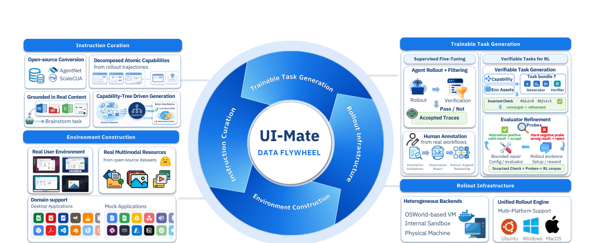
Figure 2 Overview of the UI-Mate data flywheel. The pipeline jointly scales instruction curation, environment construction, trainable task generation, and rollout infrastructure. SFT data combines filtered agent rollouts with validated and repaired human trajectories; RL data is built from verifiable task bundles whose evaluators are refined using complementary probes and rollout feedback. Coverage and outcome diagnostics are fed back to rebalance capabilities and continuously improve the diversity, difficulty, and reliability of the training distribution.图 2 UI-Mate 数据飞轮概览。该流水线同时扩展指令甄选、环境构建、可训练任务生成与 rollout 基础设施。SFT 数据由过滤后的智能体 rollout 与经验证、修复过的人类轨迹组合而成；RL 数据来自可验证任务束，其评估器借助互补探针与 rollout 反复反馈不断精化。覆盖面与结果诊断被反馈用于能力再平衡，持续改进训练分布的多样性、难度与可靠性。
3.2Environment Construction3.2 环境构建
From Instruction to Runnable Environment We design an automated pipeline that converts each instruction into an executable environment. An LLM identifies required files, such as documents, spreadsheets, presentations, or images, and generates executable code to create them when needed. The pipeline uploads the resources and configures the operating system, applications, and task-specific state. This produces the initial setup and environment resources needed for execution. Real user environments vary substantially even when they support the same task. Randomized setup code therefore varies wallpapers, desktop layouts, application settings, and sidebar positions while preserving task feasibility. This diversifies the data and reduces dependence on incidental visual or interface configurations.
从指令到可运行环境。我们设计了一条自动化流水线，将每条指令转换为可执行环境：LLM 识别所需文件（文档、电子表格、演示文稿或图像等），并在需要时生成可执行代码创建它们；流水线随后上传资源，配置操作系统、应用与任务特定状态，产出执行所需的初始设置与环境资源。真实用户环境即使支持同一任务也差异显著。为此，随机化的设置代码在保持任务可行性的前提下，随机变换壁纸、桌面布局、应用设置与侧边栏位置，从而丰富数据多样性，降低对偶然视觉或界面配置的依赖。
Grounding Environments with Real Resources LLM-generated resources are often shorter and more homogeneous than real files and may contain placeholders. These artifacts create shortcuts that distort realism and difficulty. We therefore index open-source documents, presentations, spreadsheets, images, videos, and audio. The
用真实资源锚定环境。LLM 生成的资源通常比真实文件更短、更同质，且可能含占位符；这些痕迹会制造扭曲真实性与难度的捷径。为此，我们对开源的文档、演示文稿、电子表格、图像、视频与音频建立索引。
indexed files better reflect the richness and irregularity of real working materials. During construction, the LLM retrieves and copies a real file through setup code, using synthesis when none exists. Tasks already grounded in real files or static websites use those resources directly. This approach simplifies access to realistic materials while reducing synthetic artifacts.
被索引的文件更能反映真实工作材料的丰富性与不规则性。构建时，LLM 通过设置代码检索并复制真实文件，若无合适文件则退回合成。已锚定真实文件或静态网站的任务直接使用相应资源。这一方式既简化了真实材料的获取，又减少了合成痕迹。
3.3Rollout and Filtering3.3 Rollout 与过滤
Our rollout infrastructure is designed to execute large numbers of heterogeneous computer-use tasks efficiently and reliably. It supports Ubuntu, Windows, and macOS environments through a unified rollout interface, while accommodating the different virtualization and deployment constraints of each operating system. To support parallel rollouts and complex reinforcement-learning environments, we develop an internal cloud virtual machine backend optimized for lightweight environment provisioning and high-throughput parallel execution. It exposes programmable interfaces for environment creation, interaction, observation, and teardown, allowing workers to be allocated dynamically while maintaining isolation between concurrent rollouts. It also manages the complete rollout lifecycle, including resource upload, environment setup, agent interaction, observation collection, and reward computation. To sustain high-throughput data collection and reinforcement learning, rollouts are scheduled independently onto available workers, allowing large numbers of long-horizon trajectories to proceed concurrently across heterogeneous machines and backend types.
我们的 rollout 基础设施旨在高效、可靠地执行大量异构计算机使用任务。它经由统一的 rollout 接口支持 Ubuntu、Windows 与 macOS 环境，同时兼容各操作系统不同的虚拟化与部署约束。为支撑并行 rollout 与复杂强化学习环境，我们研发了内部云虚拟机后端，针对轻量环境供给与高吞吐并行执行做了优化：它暴露环境创建、交互、观测与拆除的可编程接口，支持动态分配 worker，并保证并发 rollout 之间的隔离；还管理完整的 rollout 生命周期，涵盖资源上传、环境搭建、智能体交互、观测收集与奖励计算。为维持高吞吐的数据采集与强化学习，rollout 被独立调度到可用 worker 上，使大量长程轨迹得以在异构机器与后端类型上并发推进。
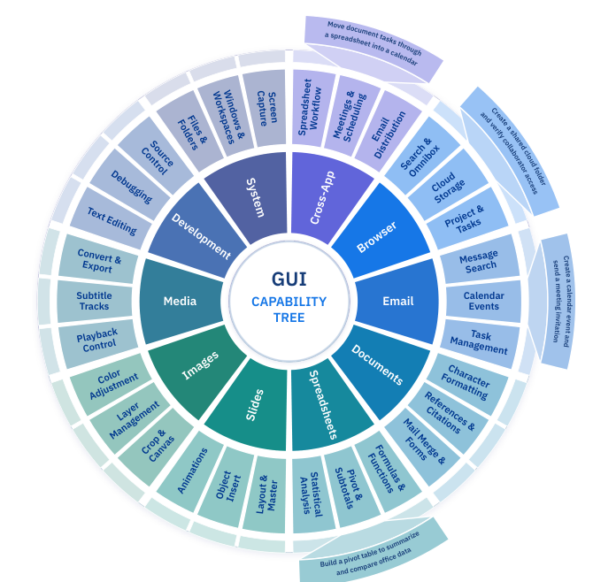
Figure 3 Representative subset of the collected GUI capability tree. The hierarchy proceeds from application domains to fine-grained capabilities and representative workflows; sector sizes are schematic.图 3 所采集 GUI 能力树的代表性子集。层级由应用领域细化到细粒度能力与代表性工作流；扇区大小仅为示意。
The filtering of the rollout trajectories undergoes two stages, including task and environment validity checks and step-level outcome filtering. For the first stage, a multimodal judge will check the setup configuration as well as the initial environment state, and retain a trajectory only when its task and environment are valid, and rollout evidence supports every expected deliverable. Before assessing agent behavior, the judge rejects ambiguous or infeasible tasks, tasks inconsistent with the setup or already satisfied in the initial state, and trajectories with malformed actions, missing visual observations, or environment failures. This prevents task and infrastructure defects from entering supervision. For the second step-level outcome verification stage, the judge extracts independently verifiable deliverables from each instruction and tracks supporting evidence across GUI observations and actions. It retains a trajectory only when every deliverable is supported. Tracking evidence throughout the rollout prevents plausible final states or unsupported agent narration from masking partial failure and captures intermediate evidence absent from the final frame.
rollout 轨迹的过滤分两个阶段：任务与环境有效性检查、步骤级结果过滤。第一阶段，多模态裁判检查设置配置与初始环境状态，仅当任务与环境有效、且 rollout 证据支持全部预期交付物时才保留轨迹；在评估智能体行为之前，裁判会拒绝含糊或不可行的任务、与设置不符或初始状态即已满足的任务，以及存在格式错误动作、视觉观测缺失或环境故障的轨迹，从而阻止任务与基础设施缺陷混入监督数据。第二阶段为步骤级结果验证：裁判从每条指令抽取可独立验证的交付物，并在 GUI 观测与动作中追踪支持证据，只有全部交付物均有证据支持时才保留轨迹。贯穿整个 rollout 的证据追踪，可防止貌似合理的最终状态或缺乏依据的智能体自述掩盖部分失败，并捕获最终帧中不存在的中间证据。
3.4Capability Tree and Data Diagnosis3.4 能力树与数据诊断
Large-scale data production favors inexpensive tasks, while application-level statistics obscure underrepre- sented behaviors. We therefore map each task to a shared capability taxonomy and associate its rollout outcomes with the corresponding capabilities, making coverage gaps actionable for subsequent data genera- tion.
大规模数据生产天然偏向低成本任务，应用级统计又会掩盖表示不足的行为。为此，我们将每个任务映射到共享能力分类体系，并把 rollout 结果关联到相应能力，使覆盖缺口对后续数据生成而言可直接行动。
For each application, we maintain an inventory of atomic user-facing capabilities. We initialize it from application documentation and expand it with behav- iors found in training instructions. During annotation, we match each instruction to an existing entry and cre- ate a new one only when no suitable match exists. We maintain a separate cross-application domain for be- haviors that connect applications, such as transferring and transforming information between them.
对每个应用，我们维护一份面向用户的原子能力清单：以应用文档初始化，并随训练指令中出现的行为扩充。标注时，每条指令优先匹配已有条目，仅在无合适匹配时新建条目。对连接应用的行为（如在应用之间传递与转换信息），我们单独维护一个跨应用域。
As a flat inventory grows, matching becomes ambiguous and data budgets become difficult to allocate consistently. We therefore organize capabilities into three levels: application, coarse capability, and fine- grained operation. Each task is first routed to a coarse capability and then matched within the corresponding subtree, reducing confusion among near-duplicates. We keep the coarse level stable for budgeting, add fine-grained nodes as needed, and periodically consolidate redundant or inactive nodes. Equivalent entries are aligned across applications to expose shared interaction patterns.
扁平清单一旦增长，匹配便趋于含糊，数据预算也难以一致分配。为此，我们把能力组织为三个层级：应用、粗粒度能力与细粒度操作。每个任务先路由到某个粗粒度能力，再在相应子树内匹配，以减少近似重复间的混淆。粗粒度层级保持稳定以便预算分配，细粒度节点按需添加，冗余或不活跃节点定期合并；等价条目跨应用对齐，以显式暴露共享的交互模式。
We rebalance the corpus using target coverage, observed data density, rollout success, and filtering rejection
我们依据目标覆盖、实际数据密度、rollout 成功率与过滤拒绝率对语料再平衡。
rates. Low density relative to the target triggers additional generation, whereas oversupplied capabilities are down-weighted. Sufficient volume combined with low rollout success or high rejection instead signals task or environment defects. We treat task length as a separate sampling dimension to prevent abundant short tasks from masking long-horizon gaps. Newly generated tasks pass through the same annotation and evaluation pipeline, and their outcomes update the next allocation cycle. This closes the loop between capability diagnosis and data generation.
密度低于目标即触发增量生成，供给过剩的能力则被降权；数量充足但 rollout 成功率低或拒绝率高，反而指示任务或环境存在缺陷。我们把任务长度作为独立的采样维度，以免大量短任务掩盖长程缺口。新生成任务经同一标注与评估流水线处理，其结果进入下一轮分配周期，由此在能力诊断与数据生成之间形成闭环。
3.5Human Annotation3.5 人工标注
Automated rollouts provide scale, but remain biased toward tasks that current agents can execute and environments that are inexpensive to instantiate. We therefore complement them with human-annotated trajectories from real workflows across operating systems and applications, capturing natural interaction patterns and long-tail behavior underrepresented in synthetic data. Because raw annotations may contain inconsistent labels, recording artifacts, and supervision that differs from the rollout format, we subject them to validation, observation repair, and aligned relabeling.
自动化 rollout 提供规模，却天然偏向当前智能体能执行的任务与实例化成本低的环境。为此，我们以跨操作系统、跨应用真实工作流的人工标注轨迹加以补充，捕捉自然交互模式与合成数据中稀缺的长尾行为。原始标注可能包含不一致的标签、录制瑕疵，以及与 rollout 格式不一致的监督，因此我们对其执行验证、观测修复与对齐重标注。
Annotation Validation and Observation Repair Deterministic checks verify structural integrity and action– parameter agreement, while multimodal review assesses task completion and whether each action matches the visible state transition. We pay particular attention to observation timing: a pre-action screenshot may leak the target through cursor or hover state, or capture an unstable interface transition. Affected steps are repaired by selecting an earlier buffered frame for target leakage or a later one for incomplete rendering, with time-bounded recovery from the source recording when needed. Repaired frames are revalidated; only trajectories with irreparable corruption or annotation-tool contamination are removed. This repair-first policy preserves costly supervision without admitting visual shortcuts or inconsistent actions.
标注验证与观测修复。确定性检查核验结构完整性与动作-参数一致性；多模态审查评估任务完成情况，以及每个动作是否与可见的状态转移相符。我们尤其关注观测时机：动作前截图可能经由光标或悬停状态泄漏目标，也可能捕捉到不稳定的界面过渡。受影响步骤的修复方式是：目标泄漏时选用更早的缓冲帧，渲染不完整时选用更晚的帧，必要时在有限时间窗内从源录像恢复。修复后的帧重新验证；仅当轨迹损坏无法修复或被标注工具污染时才移除。这一「先修复」策略保留了昂贵的监督数据，同时不引入视觉捷径或不一致动作。
Rollout-Aligned Relabeling Human recordings provide action types and arguments but not the reasoning and natural-language action descriptions expected by the policy. A teacher model adds them using the same system prompt, interaction history, observation folding, and action space as model rollout. The outputs are generated jointly and sequentially, while all human-annotated action parameters remain fixed. Consistency checks reject action mismatches and privileged annotation leakage, yielding the same decision-step representation without altering the executable human supervision.
与 Rollout 对齐的重标注。人类录制提供动作类型与参数，却不含策略所需的推理过程与自然语言动作描述。教师模型在与模型 rollout 完全相同的系统提示、交互历史、观测折叠与动作空间下补全这些内容：输出被联合且按序生成，所有人工标注的动作参数保持不变。一致性检查会拒绝动作不匹配与特权标注泄漏，从而在不改动可执行人类监督的前提下，得到一致的决策步表示。
3.6Verifiable Tasks for Reinforcement Learning3.6 用于强化学习的可验证任务
Reinforcement learning from verifiable rewards (RLVR) requires more than instructions and runnable environ- ments: every rollout must terminate in a verifiable signal. Authoring such tasks manually is expensive, because the instruction, the configuration, and the reward must agree on the same initial conditions and completion criteria. We therefore automate construction in two stages: generation turns capability and environment assets into diverse, self-contained task bundles, and refinement independently stress-tests and repairs the evaluators. Both stages operate on a common data contract. Beyond the instruction x and environment E of Equation 1, a task usable for RL fixes the initial state E0 from which rollouts begin, a reference completion state E⋆the generator can reach, and a per-task executable verifier R evaluated on environment state. Every such task must satisfy the execution invariant
基于可验证奖励的强化学习（RLVR）需要的不只是指令与可运行环境：每次 rollout 都必须以可验证信号收尾。人工编写此类任务代价高昂——指令、配置与奖励必须在相同的初始条件与完成判据上保持一致。为此我们以两个阶段自动化构建：生成阶段把能力与环境资产转化为多样且自包含的任务组合，精化阶段独立地对评估器做压力测试与修复。两个阶段共用同一数据契约：除公式 1 的指令 x 与环境 E 外，一个可用于 RL 的任务还需固定 rollout 起始的初始状态 E0、生成器可达的参考完成状态 E⋆，以及在环境状态上评估的每任务可执行验证器 R。每个此类任务都必须满足执行不变式
R(E0) = 0, R(E⋆) = 1. (9)
R(E0) = 0, R(E⋆) = 1. (9)
Generation uses this invariant for internal consistency; refinement asks whether the evaluator faithfully captures the instruction rather than merely agreeing with the reference.
生成阶段利用该不变式保证内部一致性；精化阶段追问的则是评估器是否忠实捕捉了指令本身，而非仅仅与参考解一致。
Scaling instructions and executable configurations. We reuse the instruction sources and environment- construction machinery described in §3.1 and §3.2, but couple them more tightly for RL. Capability-guided sampling controls which behaviors are exercised and how they are composed, while configuration synthesis instantiates the resources, preconditions, and application state required to execute each instruction. The same capability can therefore be realized under different files, user contexts, application states, and system configurations, increasing interaction diversity rather than merely producing paraphrases. Conversely, complex instructions retain the environmental dependencies needed to make them genuinely executable instead of being simplified to what is easiest to initialize or evaluate. This joint expansion of instruction and configuration space is the primary mechanism by which we scale the coverage and difficulty of verifiable tasks.
扩展指令与可执行配置。我们复用 §3.1 与 §3.2 的指令来源与环境构建机制，但为 RL 将两者更紧密耦合：能力引导的采样决定演练哪些行为及如何组合，配置合成则实例化执行每条指令所需的资源、前置条件与应用状态。由此，同一能力可在不同文件、用户上下文、应用状态与系统配置下被实现，从而增加交互多样性而非仅产出同义改写；反之，复杂指令保留其真正可执行所需的环境依赖，不被简化成最易初始化或评估的形式。指令空间与配置空间的联合扩展，是我们扩展可验证任务覆盖面与难度的主要机制。
Decoupled construction of environments and rewards. Inspired by the generator–discriminator formulation of CUA-Gym [8], we separate the roles of realizing a task and judging its outcome. A generator constructs the executable configuration together with the initial and reference completion states, whereas a verifier agent
环境与奖励的解耦构建。受 CUA-Gym [8] 生成器-判别器框架启发，我们把「实现任务」与「评判结果」两种角色分离：生成器构建可执行配置及初始与参考完成状态，验证器智能体则
derives the reward from the task specification. This information boundary keeps evaluation faithful—seeing only the specification and the resulting state, the verifier judges whether the user-visible objective is met, not how the reference completion arose. We further extend this separation with application-aware configuration synthesis: the state that determines task success may live in different places depending on the application — user artifacts, application profiles, structured stores (e.g., databases), or operating-system state — and
从任务规格推导奖励。这一信息边界保证了评估的忠实性——验证器只见规格与最终状态，判断用户可见目标是否达成，而不关心参考完成如何产生。我们进一步以感知应用的配置合成强化这一分离：决定任务成败的状态因应用而异——可能在用户产物、应用配置、结构化存储（如数据库）或操作系统状态中——而
the generator resolves this per task while exposing all such state to the verifier through a single, common evaluator interface. Co-designing configuration observability and reward semantics makes verifiability a construction-time constraint, rather than an annotation added after rollout collection.
生成器按任务逐一解析，并通过单一统一的评估器接口把上述状态全部暴露给验证器。配置可观测性与奖励语义的协同设计，使可验证性成为构建时的约束，而非 rollout 采集之后追加的标注。
Generation-time convergence checks. A bundle is retained only once its components converge on the same task semantics. Static and model-based checks reject unsupported preconditions, inconsistent artifacts, weak proxy rewards, and configurations that do not expose the state required for evaluation; execution then tests the invariant directly. This removes malformed or trivially satisfied tasks cheaply, but establishes only internal consistency, since the reference completion and the reward can share a semantic blind spot—making convergence a prerequisite for, not a substitute for, independent refinement.
生成时收敛检查。仅当组合各部分在同一任务语义上收敛时才被保留：静态检查与基于模型的检查会拒绝无依据的前置条件、不一致的产物、弱代理奖励，以及未暴露评估所需状态的配置；随后由执行直接检验不变式。这能低成本剔除畸形或平凡满足的任务，但只建立了内部一致性——参考完成与奖励可能共享同一语义盲区。因此，收敛只是独立精化的前提，而非其替代。
Independent probes beyond self-consistency. Refinement takes converged bundles as read-only inputs and re-examines instruction–reward alignment along a reasoning path independent of generation. We first make evaluator decisions observable by decomposing a scalar pass/fail result into per-requirement diagnostics, then apply two complementary probes. A hard-negative probe perturbs a successful state into a plausible but incorrect completion and should be rejected; acceptance indicates an under-specified reward. An alternative- positive probe constructs a different legitimate completion and should be accepted; rejection indicates an over-strict reward. With the original initial and reference states, the probes provide evidence about both false acceptance and false rejection instead of validating a single solution.
超越自洽的独立探针。精化阶段将已收敛的组合视为只读输入，沿一条独立于生成的推理路径重新审查指令-奖励对齐。我们先把评估器决策变为可观察——将标量的通过/失败结果分解为逐要求的诊断——再施加两个互补探针：难负探针把成功状态扰动为貌似合理但不正确的完成，应当被拒绝，若被接受则说明奖励规定不足；替代正探针构造另一个不同的合法完成，应当被接受，若被拒绝则说明奖励过严。借助原始初始与参考状态，两个探针同时给出错误接受与错误拒绝的证据，而非仅验证单一解。
Rollout feedback and bounded repair. Real rollouts expose discrepancies that generation cannot anticipate: the configuration may instantiate an unintended state, a precondition may not survive initialization, a valid outcome may be represented differently by the application, or the reward may respond to a shortcut. Flagged tasks enter a bounded repair loop rather than being discarded; repairs may target the configuration, reference state, evaluator, or—when the objective itself is ambiguous—the instruction. Every modification must pass the invariant and the probes again, and changes that improve one signal while degrading evaluator observability or task compliance are reverted. Only tasks free of hard setup defects and supported by both positive and negative evidence are promoted to the RL corpus.
Rollout 反馈与有界修复。真实 rollout 会暴露生成阶段无法预见的不一致：配置可能实例化出非预期状态，前置条件可能经不起初始化，合法结果可能被应用以另一种方式呈现，奖励也可能对捷径产生响应。被标记的任务进入有界修复循环而非直接丢弃；修复对象可以是配置、参考状态、评估器，或目标本身含糊时的指令。每次修改都须重新通过不变式与探针检验；凡改善某一信号却损害评估器可观测性或任务符合度的修改一律回退。只有不存在硬性设置缺陷、且同时获得正负证据支持的任务，才被纳入 RL 语料库。
Scaling as a coupled design objective. These components make scaling a coupled objective rather than three independent throughput problems: added generation capacity contributes new capabilities, interaction contexts, and difficulty instead of paraphrases, easy-to-verify tasks, or noisy rewards, broadening the frontier of the training distribution while preserving the executability and reliability RLVR requires.
作为耦合设计目标的扩展。上述组件使扩展成为耦合目标，而非三个相互独立的吞吐量问题：新增生成能力带来的是新能力、新交互上下文与新难度，而非同义改写、易于验证的任务或含噪奖励——在保持 RLVR 所需可执行性与可靠性的同时，拓宽了训练分布的边界。
4Training UI-Mate for General Computer Use4 训练 UI-Mate 掌握通用计算机使用
4.1Training Recipe4.1 训练方案
UI-Mate is trained in two stages: supervised fine-tuning (SFT), followed by agentic reinforcement learning (RL). SFT learns from filtered offline trajectories (§3) and equips the model with capabilities for GUI interaction: producing well-formed and executable responses under the interaction protocol, grounding semantic targets to screen coordinates, and selecting actions based on screenshots and interaction history.
UI-Mate 分两阶段训练：先监督微调（SFT），后智能体强化学习（RL）。SFT 从过滤后的离线轨迹（§3）中学习，赋予模型 GUI 交互能力：在交互协议下生成格式良好且可执行的响应、把语义目标定位到屏幕坐标、并依据截图与交互历史选择动作。
Agentic RL improves the model through online interaction in the verifiable environments (§3.6). It uses task-level rewards to optimize for successful task completion rather than action imitation. This stage improves long-horizon planning, state tracking, error recovery, and reliable task completion.
智能体 RL 通过在可验证环境（§3.6）中的在线交互改进模型：以任务级奖励优化任务是否成功完成，而非模仿动作。该阶段提升长程规划、状态跟踪、错误恢复与可靠任务完成能力。
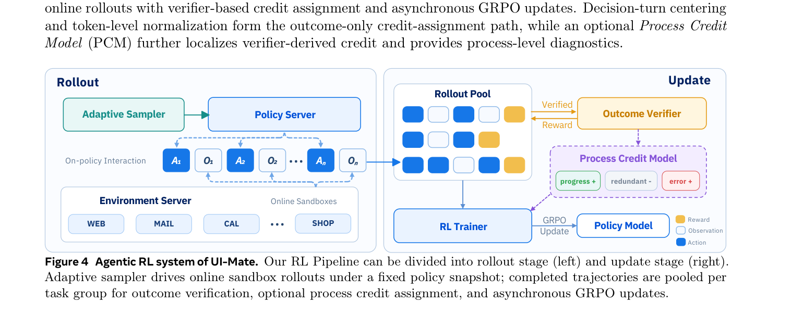
Figure 4 Agentic RL system of UI-Mate. Our RL Pipeline can be divided into rollout stage (left) and update stage (right). Adaptive sampler drives online sandbox rollouts under a fixed policy snapshot; completed trajectories are pooled per task group for outcome verification, optional process credit assignment, and asynchronous GRPO updates.图 4 UI-Mate 智能体 RL 系统。RL 流水线分为 rollout 阶段（左）与更新阶段（右）：自适应采样器在固定策略快照下驱动在线沙箱 rollout；完成的轨迹按任务组汇聚，用于结果验证、可选的过程信用分配与异步 GRPO 更新。
4.2Supervised Fine-Tuning4.2 监督微调
Training data. Our SFT corpus is constructed using the data pipeline described in §3. For each task instruction, we instantiate a runnable environment (§3.2) and execute an agent rollout using the infrastructure (§3.3.1). We retain only trajectories for which step-level verification confirms all required outcomes (§3.3.2). The
训练数据。SFT 语料库用 §3 所述数据流水线构建：对每条任务指令，实例化可运行环境（§3.2），经由基础设施（§3.3.1）执行智能体 rollout，仅保留步骤级验证确认全部所需结果的轨迹（§3.3.2）。
retained trajectories are sampled according to the capability tree in §3.4, with balanced coverage across applications, capability levels, and task lengths. The resulting training mixture covers atomic operations, single-application workflows, and cross-application tasks, and includes trajectories both with and without explicit intermediate reasoning [1].
保留轨迹按 §3.4 的能力树采样，在应用、能力层级与任务长度上保持均衡覆盖。最终训练混合覆盖原子操作、单应用工作流与跨应用任务，并同时包含带显式中间推理与不带的轨迹 [1]。
Objective. Each training instance is a single decision turn of a retained trajectory. Given the instruction x, the interaction history ht carried into turn t, and the current screenshot ot, the model reproduces the target response yt, which contains its reasoning followed by the action to execute. Writing ct = (x, ht, ot) for the turn context, SFT minimizes the next-token prediction loss over the response tokens,
训练目标。每个训练实例为保留轨迹中的一个决策轮：给定指令 x、带入第 t 轮的交互历史 ht 与当前截图 ot，模型复现目标响应 yt——先推理、后给出待执行动作。记 ct = (x, ht, ot) 为该轮上下文，SFT 在响应 token 上最小化下一 token 预测损失：
|yt| X
|yt| X
1
1
LSFT(θ) = −E(ct,yt)∼DSFT
LSFT(θ) = −E(ct,yt)∼DSFT
, (10)
, (10)
log πθ(yt,k | yt,<k, ct)
log πθ(yt,k | yt,<k, ct)
|yt|
|yt|
where yt,k is the k-th token of the response and |yt| its length. The turn context carries no loss and acts purely as conditioning.
其中 yt,k 为响应的第 k 个 token，|yt| 为其长度。轮上下文不承载损失，仅充当条件输入。
4.3Agentic Reinforcement Learning4.3 智能体强化学习
Starting from an SFT policy, we optimize UI-Mate online in the verifiable GUI environments described in §3.6, using the decision-turn interaction defined in §2.1. Each completed trajectory is scored by an environment verifier. Figure 4 summarizes the overall RL pipeline, which combines adaptive task sampling and grouped online rollouts with verifier-based credit assignment and asynchronous GRPO updates. Decision-turn centering and token-level normalization form the outcome-only credit-assignment path, while an optional Process Credit Model (PCM) further localizes verifier-derived credit and provides process-level diagnostics.
从 SFT 策略出发，我们在 §3.6 所述可验证 GUI 环境中在线优化 UI-Mate，交互方式采用 §2.1 定义的决策轮。每条完成的轨迹由环境验证器打分。图 4 概括整体 RL 流水线：自适应任务采样与分组在线 rollout，结合基于验证器的信用分配与异步 GRPO 更新。决策轮中心化与 token 级归一化构成仅结果的信用分配路径；可选的过程信用模型（PCM）进一步定位验证器导出的信用，并提供过程级诊断。
Grouped online interaction. Following §2.1, let T = (x, E) denote a selected verifiable task. At decision turn t of trajectory i, the rollout-policy snapshot π¯θ samples
分组在线交互。依 §2.1，设 T = (x, E) 为选定的可验证任务。在轨迹 i 的第 t 个决策轮，rollout 策略快照 π¯θ 采样
yi,t = (ri,t, ai,t) ∼π¯θ(· | ci,t) , ci,t = (x, hi,t, oi,t). (11)
yi,t = (ri,t, ai,t) ∼π¯θ(· | ci,t) , ci,t = (x, hi,t, oi,t). (11)
Each response yi,t is one decision turn even when ai,t contains multiple consecutive operations. A trajectory terminates when the model emits a terminal action or reaches the interaction budget. To construct a rollout group, we use the same fixed policy snapshot to run the selected task in multiple independent environment
每个响应 yi,t 即一个决策轮，即便 ai,t 含多个连续操作。模型发出终止动作或达到交互预算时轨迹终止。构造 rollout 组时，我们用同一固定策略快照在多个相互独立的环境中运行所选任务。
instances. Each run produces one complete trajectory. We retain both successful and failed task executions, discarding only rollouts corrupted by environment or infrastructure failures. The remaining N trajectories form the rollout group G = {τi}N
环境实例。每次运行产出一条完整轨迹。我们同时保留成功与失败的任务执行，仅丢弃因环境或基础设施故障而损坏的 rollout。其余 N 条轨迹构成 rollout 组 G = {τi}N
i=1. Because they share the same task and policy snapshot, their outcomes can be compared directly.
i=1。因共享同一任务与策略快照，各组内结果可直接比较。
Group-relative outcome supervision. The executable verifier for the selected task inspects the final environment state and returns a binary outcome Ri = R(τi) ∈{0, 1}, where 1 indicates task success and 0 indicates failure. We adopt Group Relative Policy Optimization (GRPO) [13, 14], which estimates relative advantages by
组相对结果监督。所选任务的可执行验证器检查最终环境状态，返回二元结果 Ri = R(τi) ∈{0, 1}（1 表示成功，0 表示失败）。我们采用组相对策略优化（GRPO）[13, 14]，它通过
comparing outcomes within the rollout group G, without requiring a learned value model. Groups in which all trajectories receive the same outcome are excluded because they provide no relative learning signal [15].
在 rollout 组 G 内比较结果来估计相对优势，无需学习价值模型。组内全部轨迹结果相同的组被排除，因其不提供相对学习信号 [15]。
A verifier supplies one outcome per trajectory, while the actor is optimized over tokens produced across many decision turns. Applying the same trajectory-level GRPO advantage to every decision turn raises two issues. First, under outcome-only supervision, trajectories within the same group can contain different numbers of decision turns. Failed trajectories often contain more turns because they involve more trial and error. Broadcasting the same advantage to every turn therefore gives longer trajectories more weight, resulting in a decision-turn bias. We address this bias with decision-turn centering. Second, even after centering, an outcome alone does not reveal which steps are critical to success or failure; PCM uses process evidence to identify these steps and reweight their learning signals accordingly.
验证器为每条轨迹给出一个结果，而 actor 的优化对象是跨多个决策轮产生的 token。把相同的轨迹级 GRPO 优势套用到每个决策轮会引发两个问题。其一，在仅结果监督下，同组轨迹的决策轮数可能不同：失败轨迹因反复试错往往轮数更多，把同一优势广播给每一轮等于给长轨迹更大权重，造成决策轮偏差——我们以决策轮中心化予以校正。其二，即便中心化之后，仅凭结果也无从判断哪些步骤对成败关键；PCM 则利用过程证据识别这些步骤，并相应重加权其学习信号。
Decision-turn centering. To correct the decision-turn bias, we compute the group baseline under the decision- turn measure:
决策轮中心化。为校正决策轮偏差，我们在决策轮度量下计算组基线：
PN
PN
i=1 TiRi PN
i=1 TiRi PN
µturn =
µturn =
i,t = Ri −µturn, (12)
i,t = Ri −µturn, (12)
, Abase
, Abase
i=1 Ti
i=1 Ti
where Ti is the number of decision turns in τi and t ∈{1, . . . , Ti}. The resulting advantage is constant within each trajectory but is indexed by decision turn. This approximately centers the advantage under the decision-turn measure to make sure E[A] ≈0. Within each task group, we center only the mean and do not divide by the group standard deviation. This preserves the reward scale and avoids unstable amplification when group outcomes are nearly uniform.
其中 Ti 为 τi 的决策轮数，t ∈{1, . . . , Ti}。所得优势在轨迹内为常数，但按决策轮索引。这在决策轮度量下近似实现优势中心化，确保 E[A] ≈0。在每个任务组内，我们仅对均值中心化、不除以组标准差，从而保留奖励尺度，避免组内结果近乎一致时不稳定的放大。
Trajectory-merge process credit. The outcome-only objective can optimize the policy directly from the final reward Ri, but the outcome does not reveal which decision steps were critical to success or failure. As a result, every step in the same trajectory receives the same advantage. Building on process supervision [16–18], we optionally apply PCM during RL training. When enabled, PCM uses teacher annotations to identify critical steps and reweight their learning signals accordingly. PCM only redistributes the learning signal across decision steps and does not change the final task-level reward Ri. Without PCM, training follows the outcome-only objective without step-level reweighting.
轨迹合并过程信用。仅结果目标可直接由最终奖励 Ri 优化策略，但结果本身不揭示哪些决策步骤对成败关键，于是同一轨迹内每个步骤都获得相同优势。基于过程监督 [16–18]，我们在 RL 训练中可选启用 PCM：启用时，PCM 依据教师标注识别关键步骤，并相应重加权其学习信号；PCM 仅在决策步骤之间重新分配学习信号，不改变最终任务级奖励 Ri。不启用 PCM 时，训练遵循仅结果目标，不做步骤级重加权。
The teacher first extracts observable milestones from verified successful trajectories and merges equivalent subgoals and alternative valid branches into a shared task structure. This structure is then used to annotate every trajectory. For each failed trajectory, the teacher selects the closest valid branch and labels each milestone as completed, attempted_failed, not_attempted, or skipped_by_branch. The last two labels prevent blocked or irrelevant subgoals from being treated as policy failures.
教师先从经验证的成功轨迹抽取可观察里程碑，把等价子目标与备选合法分支合并为共享任务结构，再用该结构标注每条轨迹。对失败轨迹，教师选取最接近的合法分支，将每个里程碑标注为 completed、attempted_failed、not_attempted 或 skipped_by_branch；后两个标签防止被阻塞或无关的子目标被误判为策略失败。
At the trajectory level, failures are classified as policy-related, external, mixed, or unclear. At the decision-turn level, annotations identify progress, causal errors, recovery, and redundancy. Related errors are grouped to distinguish their root causes from downstream symptoms. If a task group contains no verified successful trajectory, PCM is not applied and training follows the outcome-only path.
轨迹层面，失败被归为策略相关、外部、混合或不明确；决策轮层面，标注识别进展、因果错误、恢复与冗余。相关错误被分组归并，以区分根因与下游症状。若任务组内不存在经验证的成功轨迹，则不启用 PCM，训练走仅结果路径。
Let ei,t denote the resulting process evidence for decision step t. PCM converts this evidence into a nonnegative importance weight:
设 ei,t 为决策步骤 t 的过程证据。PCM 将其转换为非负的重要性权重：
, ewi,t := wi,t 1 Ti
, ewi,t := wi,t 1 Ti
Abase
Abase
�
�
�
�
�
�
. (13)
. (13)
wi,t := clip
wi,t := clip
b + ϕ
b + ϕ
ei,t, sgn
ei,t, sgn
, 0, wmax
, 0, wmax
PTi
PTi
u=1 wi,u
u=1 wi,u
Here b and wmax, with 0 < b ≤wmax, set the base and maximum weight scales. The mapping ϕ rewards steps that make progress or recover from mistakes in successful trajectories. In failed trajectories, it penalizes the steps that introduce an error and the later steps that fail to correct it. Redundant steps and steps blocked by the environment are also penalized. We normalize the resulting weights within each trajectory so that their average is one. If all weights become zero after clipping, we assign equal weights to all steps.
其中 b 与 wmax（0 < b ≤wmax）设定基准与最大权重尺度。映射 ϕ 在成功轨迹中奖励取得进展或从错误中恢复的步骤；在失败轨迹中，惩罚引入错误的步骤以及未能纠正错误的后续步骤；冗余步骤与被环境阻塞的步骤同样受罚。我们对每条轨迹内的权重归一化，使均值为一。若裁剪后权重全为零，则对所有步骤赋予相等权重。
A sign-aware selector mi,t ∈{0, 1} retains decision turns with positive evidence or causal responsibility for failure. PCM produces
符号感知的选择器 mi,t ∈{0, 1} 保留具有正面证据或对失败负有因果责任的决策轮。PCM 产生
Aproc
Aproc
i,t := mi,t Abase
i,t := mi,t Abase
i,t ewi,t si, (14)
i,t ewi,t si, (14)
where si ∈[0, 1] discounts failures only partially attributable to the policy and equals one otherwise. With valid annotations, Acredit
其中 si ∈[0, 1] 对仅部分归因于策略的失败打折，其余取 1。标注有效时，Acredit
i,t = Aproc
i,t = Aproc
i,t ; otherwise, Acredit
i,t；否则 Acredit
i,t = Abase
i,t = Abase
i,t . Nonselected responses remain as context but carry no actor loss. PCM thereby concentrates learning on informative decisions and provides process-level data insights.
i,t。未被选中的响应保留为上下文，但不承载 actor 损失。PCM 由此把学习集中于有信息量的决策，并提供过程级的数据洞察。
Token-level normalization. Beyond decision-turn-level credit assignment, varying response lengths introduce another source of bias because the actor objective is computed over generated tokens. Failed trial-and-error turns often require a larger thinking budget and therefore contain more response tokens. Their advantages are consequently repeated over more tokens and can disproportionately affect the token-level objective. We address this response-length bias by normalizing the advantages over all response tokens in the optimization batch [19]. This aligns the advantage statistics with token-level aggregation, controls the scale of policy updates, and further improves training stability.
Token 级归一化。除决策轮级信用分配外，响应长度差异是另一偏差来源——actor 目标在生成的 token 上计算，而失败的试错轮往往需要更大的思考预算、含有更多响应 token，其优势因此在更多 token 上重复出现，可能对 token 级目标产生不成比例的影响。我们在优化批次内对所有响应 token 归一化优势，以消除这一响应长度偏差 [19]。这使优势统计与 token 级聚合对齐，控制策略更新尺度，并进一步提升训练稳定性。
Synchronous training waits for all trajectories in a rollout group to finish. This is inefficient because GUI rollouts vary widely in duration across environments and task horizons [20]. Instead, rollout workers use the latest available policy snapshot, and the learner starts optimization as soon as enough complete trajectories from the same task group are buffered. We never truncate individual trajectories, and all trajectories compared within a group share the same task configuration and policy snapshot.
同步训练须等待 rollout 组内全部轨迹完成，而 GUI rollout 的时长在不同环境与任务跨度间差异很大 [20]，因此同步方式效率低下。为此，rollout worker 使用最新可用的策略快照，learner 一旦缓冲了同一任务组足够多的完整轨迹即开始优化。我们从不截断单条轨迹，组内参与比较的所有轨迹共享相同的任务配置与策略快照。
Asynchronous training introduces policy staleness because the rollout policy may lag behind the current learner policy. For compactness, let y = (y1, . . . , y|y|) denote a generated response, y<k its prefix before token k, c its turn context, and ¯θ the rollout-policy snapshot that generated it. We measure the train–rollout mismatch at token k by
异步训练会引入策略陈旧：rollout 策略可能落后于当前 learner 策略。为表述紧凑，设 y = (y1, . . . , y|y|) 为生成的响应，y<k 为第 k 个 token 之前的前缀，c 为轮上下文，¯θ 为生成该响应的 rollout 策略快照。我们在第 k 个 token 处度量训练-rollout 失配：
ρk(θ) = πθ(yk | y<k, c)
ρk(θ) = πθ(yk | y<k, c)
π¯θ(yk | y<k, c). (15)
π¯θ(yk | y<k, c). (15)
where ratios ρk(θ) far from one indicate substantial train–rollout mismatch. We apply IcePop [21] and SeqClip [22] as complementary mismatch filters. IcePop rejects isolated tokens with abnormal likelihood ratios, whereas SeqClip evaluates the geometric mean of ρk(θ) over the response to detect coherent policy drift. Let Mk ∈{0, 1} indicate that token k passes both filters. The resulting PPO-style clipped actor objective [23] is
比率 ρk(θ) 远离 1 即表示严重的训练-rollout 失配。我们以 IcePop [21] 与 SeqClip [22] 作为互补的失配过滤器：IcePop 拒绝似然比异常的孤立 token，SeqClip 则评估 ρk(θ) 在整个响应上的几何均值，以检测连贯的策略漂移。设 Mk ∈{0, 1} 表示 token k 同时通过两个过滤器。所得 PPO 风格裁剪 actor 目标 [23] 为
|y| X
|y| X
1
1
LRL(θ) = −Ey
LRL(θ) = −Ey
. (16)
. (16)
Mk min(ρk(θ)Ak, clip(ρk(θ), 1 −ϵ, 1 + ϵ) Ak)
Mk min(ρk(θ)Ak, clip(ρk(θ), 1 −ϵ, 1 + ϵ) Ak)
|y|
|y|
Here ϵ > 0 is the PPO clipping radius. Tokens rejected by either mismatch filter have Mk = 0 and therefore contribute no actor loss. The mismatch filters determine whether a stale token is eligible for learning, while PPO clipping bounds the contribution of each retained token; the two mechanisms therefore address different aspects of train–rollout mismatch.
其中 ϵ > 0 为 PPO 裁剪半径。被任一失配过滤器拒绝的 token 有 Mk = 0，因而不贡献 actor 损失。失配过滤器决定陈旧 token 是否有资格参与学习，PPO 裁剪则限制每个保留 token 的贡献——两者处理的是训练-rollout 失配的不同侧面。
As the policy improves, uniform sampling increasingly spends rollouts on solved tasks. We therefore use a domain-level adaptive curriculum sampler that combines broad coverage with emphasis on weak application domains [24–28]. It only reallocates rollout computation over the fixed RL corpus; task construction and corpus rebalancing remain in §3.
随着策略改进，均匀采样会把越来越多的 rollout 浪费在已解决任务上。为此我们采用域级自适应课程采样器，兼顾广泛覆盖与对薄弱应用域的侧重 [24–28]。它仅在固定 RL 语料库上重新分配 rollout 算力；任务构建与语料再平衡仍由 §3 负责。
Base and adaptive allocation. At each training iteration, we select a fixed number of tasks, with each task producing one rollout group. We divide this task budget between base and adaptive sampling. Base sampling follows the domain distribution of the RL corpus to maintain broad coverage. Adaptive sampling allocates its portion to weak domains identified from recent on-policy results. The two components select disjoint tasks, so no task appears twice in the same batch.
基础与自适应分配。每次训练迭代选取固定数量的任务，每个任务产出一个 rollout 组；该任务预算在基础采样与自适应采样之间划分。基础采样遵循 RL 语料库的域分布以维持广泛覆盖，自适应采样则把份额分给近期 on-policy 结果识别出的薄弱域。两组件选取互不重叠的任务，同一批次内任务不会重复。
Estimating weak domains. We estimate domain performance over a recent rollout window. Only domains with enough valid trajectories and a low environment-error rate are included, preventing infrastructure failures from being mistaken for policy weakness. Let Delig denote these eligible domains, and let Vd and Sd be the numbers of valid and successful trajectories in domain d. We compute the domain success rate bpd and the overall success rate ¯p as
估计薄弱域。我们在近期 rollout 窗口上估计域性能：仅纳入有效轨迹充足且环境错误率低的域，以免把基础设施故障误判为策略薄弱。设 Delig 为这些合格域，Vd 与 Sd 为域 d 中有效与成功轨迹数。域成功率 bpd 与总体成功率 ¯p 计算如下
P
P
d∈Delig Sd P
d∈Delig Sd P
bpd = Sd
bpd = Sd
. (17)
. (17)
, ¯p =
, ¯p =
d∈Delig Vd
d∈Delig Vd
Vd
Vd
A domain is considered weak when ¯p −bpd ≥δ, where δ > 0 is the minimum required success-rate gap.
当 ¯p −bpd ≥δ 时域被视为薄弱，其中 δ > 0 为要求的最小成功率差距。
We activate adaptive sampling only when at least two domains have reliable estimates and at least one weak
仅当至少两个域具有可靠估计、且至少识别出一个薄弱域时，才激活自适应采样。
domain is identified. Once these weak domains are identified, the adaptive component samples tasks from them without replacement, subject to a per-domain cap. When candidate tasks have similar priority, we prefer tasks whose recent rollout groups contain both successful and failed trajectories, since these partially learned tasks provide informative group-relative signals. If the statistics are insufficient, no weak domain is identified, or a weak domain runs out of eligible tasks, the unused adaptive budget is reassigned to base sampling.
薄弱域一经识别，自适应组件即在其中不放回地采样任务，并受每域上限约束。候选任务优先级相近时，我们偏好近期 rollout 组中同时含成功与失败轨迹的任务——这类部分习得的任务能提供有信息量的组相对信号。若统计量不足、未识别出薄弱域、或某薄弱域合格任务用尽，未使用的自适应预算即重新分配给基础采样。
5DemoCUA: Learning from In-Context Demonstrations5 DemoCUA：从上下文演示中学习
5.1Demonstration Representation5.1 演示表示
How to Get the Demo. A demonstration is a recorded successful desktop execution, with every mouse and keyboard action and a screenshot before and after each one. Its source depends on the evaluation setting: a self-demo may be a successful rollout from a stronger GUI agent on the same task, whereas a variant-demo
如何获取演示。演示是一段录制成功的桌面执行，含每一次鼠标与键盘动作以及各动作前后的截图。其来源取决于评估设定：self-demo 可为更强 GUI 智能体在同一任务上的成功 rollout，variant-demo 则
is recorded by a human on a related but non-identical task. The raw trace is normalized into a uniform action-and-frame format, then annotated offline by a vision-language model along four axes: screen state, the intent, the action taken, and how its target was located visually. The annotated trace is finally segmented into a few coherent subtasks, each with a short goal and an explicitly checkable completion criterion. Figure 5 summarizes this offline pipeline and how the resulting demonstration is consumed online at every step.
由人类在相关但不相同的任务上录制。原始轨迹被规范化为统一的动作-帧格式，再由视觉-语言模型沿四个轴离线标注：屏幕状态、意图、所采取的动作，以及目标在视觉上如何定位。标注后的轨迹最终切分为若干连贯子任务，每个子任务附简短目标与明确可检查的完成判据。图 5 概括了这一离线流水线，以及所得演示在每一步的在线消费方式。
How to Use the Demo. A demonstration serves as a guide rather than a script to replay. Before each model call, the harness provides a short summary of completed, current, and upcoming subtasks, along with key goals and milestones. It omits pixel coordinates and low-level actions, so the agent must rely on the live screenshot and can adapt when the interface changes. The agent marks each subtask as complete before moving to the next. Figure 6 shows a complete example and the context provided to the agent.
如何使用演示。演示是指引而非待回放的脚本。每次调用模型前，harness 提供已完成、当前与待办子任务的简短摘要及关键目标与里程碑；其中不含像素坐标与低层动作，智能体因此必须依赖实时截图，并在界面变化时随机应变。智能体将每个子任务标记为完成后才进入下一个。图 6 给出完整示例及提供给智能体的上下文。
5.2Training with Demonstration5.2 使用演示进行训练
Data Generation. We build a three-stage pipeline to generate both self-demo (i.e. identical tasks) and variant-demo (i.e. similar tasks) data, consisting of Rollout, Score, and Filter & Repair. (1) The Rollout stage collects observation-to-action trajectories on perturbed AgentNet data [1]. Demo-guided prompting and a subtask-report protocol are used to improve rollout success. (2) The Score stage evaluates each rollout using a hybrid mechanism: a VLM judge assesses semantic completion, while rule-based metrics verify format validity. Each rollout is scored at three levels—trajectory, subtask, and demo-following—as detailed in Table 8. (3) The Filter & Repair stage retains data that meet task-specific quality thresholds. Instead of discarding
数据生成。我们构建三阶段流水线生成 self-demo（相同任务）与 variant-demo（相似任务）数据：Rollout、Score、Filter & Repair。(1) Rollout 阶段在扰动后的 AgentNet 数据 [1] 上收集观测-动作轨迹，并采用演示引导提示与子任务报告协议提高 rollout 成功率。(2) Score 阶段以混合机制评估每次 rollout：VLM 裁判评估语义完成度，规则指标验证格式有效性；每次 rollout 在轨迹、子任务与演示遵循三个层级上打分（详见表 8）。(3) Filter & Repair 阶段保留达到任务特定质量阈值的数据。对存在可修复错误的轨迹并不丢弃，而是
trajectories with fixable errors, it recovers them through rule-based and VLM-based repair specified in Table 9, improving data efficiency.
按表 9 规定的规则修复与 VLM 修复加以恢复，以提高数据效率。
Demo-Augmented Training Data Format. Each training sample represents one decision step in a trajectory.
演示增强的训练数据格式。每个训练样本表示轨迹中的一个决策步骤。
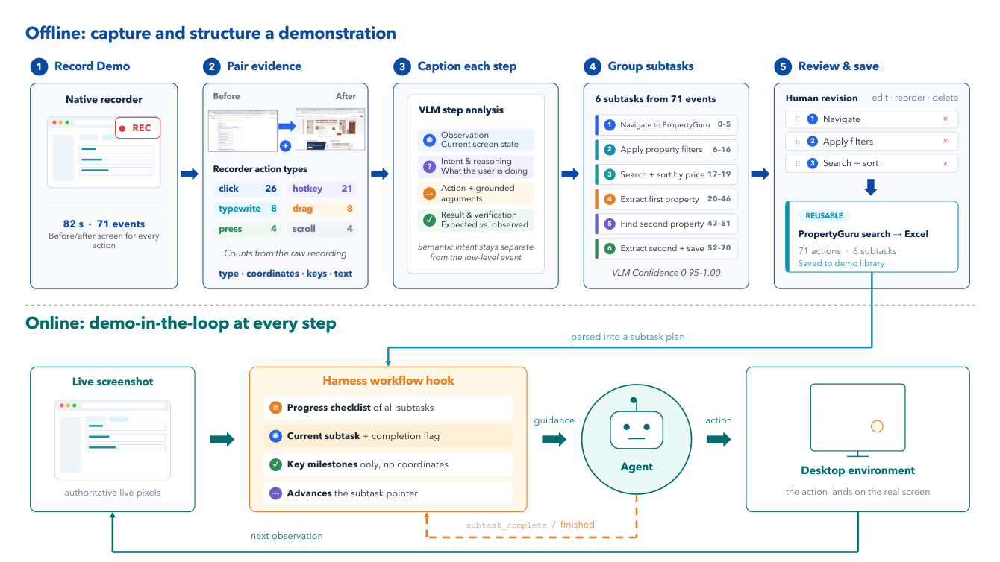
Figure 5 Demonstration representation. Offline (top), a human recording is annotated and segmented into subtasks with goals and verifiable completion criteria. Online (bottom), the agent follows the current subtask using live screenshots and advances upon completion.图 5 演示表示。离线（上）：将人类录屏标注并切分为带目标与可验证完成标准的子任务。在线（下）：智能体依据实时截图执行当前子任务，完成后推进。
Figure 7 shows two changes to our standard CUA format. First, the system prompt adds a demonstration workflow contract and a new computer_use action, subtask_complete. Second, the first user turn includes a snapshot of the demonstration workflow at the supervised step. This snapshot contains the subtask checklist and its progress, the current subtask and its completion criterion, and its ordered action steps (see Figure 6 for an example). The remaining format is unchanged. Assistant turns retain the <think>/<action>/<tool_call> structure, while subsequent user turns contain only screenshots. Thus, the multi-turn format remains identical to the demonstration-free baseline. When a subtask is completed, the agent emits subtask_complete after observing the post-action screenshot. Each episode ends with an explicit finished turn.
图 7 展示了相对标准 CUA 格式的两处修改：其一，系统提示新增演示工作流契约与新动作 computer_use 下的 subtask_complete；其二，首轮用户轮包含受监督步骤处的演示工作流快照，内含子任务清单及其进度、当前子任务及其完成判据，以及其有序动作步骤（示例见图 6）。其余格式不变：助手轮保留 <think>/<action>/<tool_call> 结构，后续用户轮仅含截图，故多轮格式与无演示基线完全一致。子任务完成后，智能体在观察动作后截图中确认满足判据即发出 subtask_complete。每个回合以显式的 finished 轮结束。
Demo-Augmented Training Data Category Ratios. Because the demonstration workflow and target query are closely aligned, the model may simply copy the next workflow step without checking the screenshot. This shortcut fails when the workflow and live interface diverge. To prevent this shortcut, we introduce three types of demonstration-workflow–screen relationships: (1) full-alignment, where the model follows the workflow; (2) partial-misalignment, where the model corrects mismatched steps using the screenshot; (3) irrelevance, where it ignores the workflow and acts from the screenshot alone. Note that full-alignment remains the majority case so that the workflow still provides useful guidance.
演示增强训练数据的类别比例。演示工作流与目标查询高度一致时，模型可能不检查截图而直接照抄工作流的下一步；一旦工作流与实时界面分歧，这一捷径即告失效。为防止捷径学习，我们引入三种演示工作流-屏幕关系：(1) 完全对齐——模型遵循工作流；(2) 部分错位——模型依截图纠正不匹配步骤；(3) 无关——模型忽略工作流、仅凭截图行动。完全对齐仍占多数，以保证工作流继续提供有效指引。
Training from Incomplete Demonstration Workflows to Prevent Shortcut Learning. We keep the full trajectory as the supervision target, but show only key actions in the demonstration workflow. Intermediate actions, such as focus clicks, scrolling, and popup dismissal, are omitted. Thus, even in full-alignment cases, the model cannot simply copy the workflow; it must infer the missing actions from the screenshot. The workflow provides milestones, while the model learns how to reach them.
从不完整演示工作流训练以防止捷径学习。监督目标仍是完整轨迹，但演示工作流中只展示关键动作，省略聚焦点击、滚动、关闭弹窗等中间动作。因此即便在完全对齐情形下，模型也无法简单照抄工作流，必须从截图推断缺失动作——工作流给出里程碑，模型学习如何抵达里程碑。
5.3Inference with Demonstration5.3 使用演示进行推理
At inference, we provide the subtask’s complete action sequence without LLM-based key-action extraction. The action list is more detailed than during training. This mismatch is intentional: omitting actions during training prevents blind copying, while including them at inference provides fuller guidance once the model
推理时我们提供子任务的完整动作序列，不做基于 LLM 的关键动作抽取，动作列表比训练时更详细。这一差异是有意为之：训练时省略动作以防盲目照抄，推理时提供完整动作则能在模型
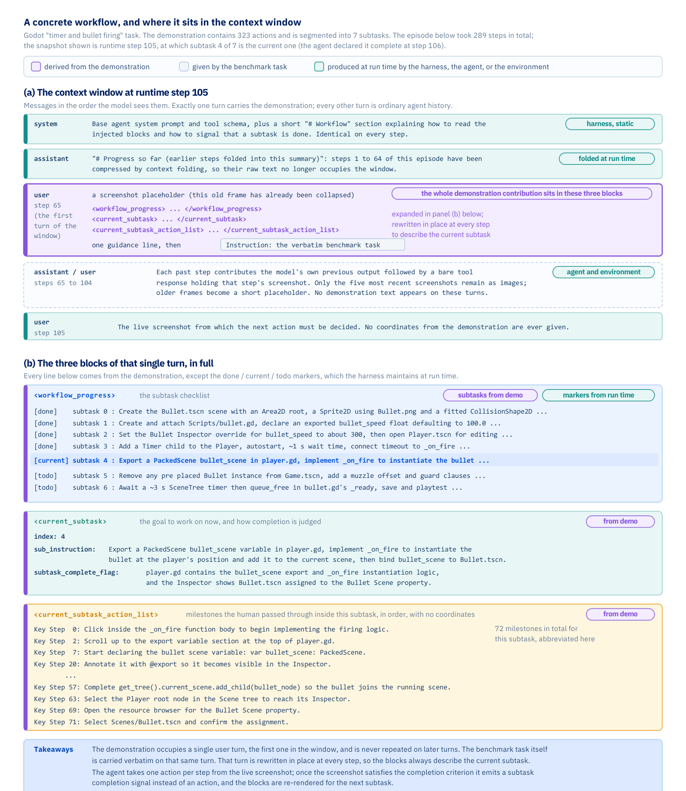
Figure 6 A complete demo-workflow for a Godot task in which the agent adds timer-based bullet firing to a simple game. Panel (a) shows the context available to the agent at one point during execution. It includes the original task instruction, one user turn containing the demonstration, and the agent’s interaction history. Panel (b) breaks down the demonstration into a subtask checklist, the current subtask and its completion criterion, and key milestones.图 6 一个 Godot 任务的完整演示工作流：智能体为简单游戏添加基于定时器的子弹发射。面板 (a) 展示执行过程中某一时点智能体可见的上下文，包括原始任务指令、包含演示的用户轮与智能体的交互历史；面板 (b) 将演示分解为子任务清单、当前子任务及其完成标准与关键里程碑。
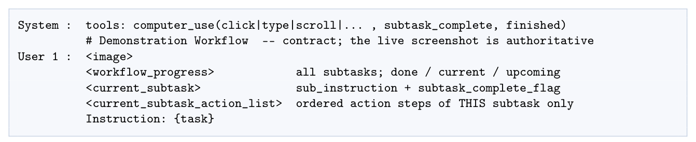
Figure 7 DemoCUA SFT Format: the demonstration is pinned to the first user turn as a snapshot of the workflow state.图 7 DemoCUA SFT 格式：演示以工作流状态快照的形式固定在首个用户轮。
relies on the screenshot. It also removes a model call and extraction errors.
依赖截图时提供更完整的指引，同时省去一次模型调用并避免抽取错误。
Long-Horizon Context Management. Long episodes can produce interaction histories that exceed the model’s context window. We control context growth through proactive folding and reactive truncation. Before each inference call, the harness estimates the request size using approximately one token per three text characters and a fixed token cost for each screenshot. When the estimated usage approaches a configurable threshold, an additional LLM call summarizes the oldest interaction steps into a compact progress note. Recent steps remain verbatim, while the most recent screenshots are retained separately rather than summarized.
长程上下文管理。长回合的交互历史可能超出模型上下文窗口。我们以主动折叠与被动截断控制上下文增长：每次推理调用前，harness 按约每三个文本字符一个 token、每张截图固定 token 成本估计请求大小；估计用量接近可配置阈值时，由一次额外的 LLM 调用把最旧的交互步骤压缩为简短的进度笔记。近期步骤保持原文，最新截图单独保留而不被总结。
Limitations. A current limitation is that the workflow appears at the beginning of the context. Each subtask update therefore invalidates the shared prefix and prevents efficient KV-cache reuse. Future work will move the workflow to the end, allowing the context to grow append-only and reuse the cache throughout the episode.
局限。当前工作流位于上下文开头，每次子任务更新都会使共享前缀失效，阻碍高效的 KV-cache 复用。未来工作将把工作流移至末尾，使上下文得以只追加式增长，并在整个回合内复用缓存。
6 OSWorkerBench: Realistic Cross-Application Office Workflows with Multi- modal Demonstrations
6 OSWorkerBench：带多模态演示的跨应用真实办公工作流
Most existing GUI benchmarks evaluate agents under an instruction-only protocol, requiring them to infer and execute a workflow from a natural-language request [10, 11]. While this setting is essential for measuring general computer-use competence, it does not directly test whether an agent can use an example of how a procedure should be carried out. This capability is particularly important for personalized workflows, proprietary or organization-specific applications, and complex processes whose conventions may be absent from public training data and cumbersome to specify completely in text. In such settings, a demonstration can expose both the intended actions and the resulting visual state transitions. To evaluate demonstration-guided execution alongside standard instruction following, we introduce OSWorkerBench, an office-centric benchmark of long-horizon, cross-application workflows in enterprise productivity environments.
多数既有 GUI 基准在纯指令协议下评估智能体，要求其从自然语言请求中推断并执行工作流 [10, 11]。这一设定对衡量通用计算机使用能力不可或缺，却无法直接检验智能体能否利用一段展示流程如何开展的示例。这一能力对个性化工作流、专有或组织特定应用尤为重要——此类流程的惯例往往不见于公开训练数据，且用文本完整描述颇为繁琐。在这类场景下，演示既能展示意图动作，也能展示由此产生的视觉状态转移。为在标准指令遵循之外评估演示引导的执行，我们提出 OSWorkerBench：一个面向企业办公环境的长程跨应用工作流基准。
OSWorkerBench comprises 100 realistic office tasks spanning 41 normalized applications and 10 consolidated job families (Figure 9a), all of which support standard instruction-only evaluation. To capture the complexity of real-world office work, we further identify two independently annotated, potentially overlapping capability subsets: 67 Long-Memory tasks require delayed reuse of dynamic information or sustained tracking of constraints and workflow state, while 49 Multi-App tasks require faithful transfer of dynamic, multi-field information across at least three logical applications. OSWorkerBench supports two evaluation modes: instruction-only, in which the target instruction is the only procedural input, and demonstration-guided, in which one multimodal demonstration is additionally supplied. The demonstration-guided mode contains two settings with different purposes. The self-demo setting pairs 33 targets with successful strong-agent rollouts of those same tasks and is used for the quantitative DemoCUA evaluation in Section 7.3. The more challenging variant-demo setting pairs 45 targets with human recordings of semantically related but non-identical source tasks. The numbers 33 and 45 therefore refer to different demonstration collections, not to a partition of the 100 benchmark tasks. The 45 variant-demo targets are deliberately challenging and long-horizon: under instruction-only evaluation, Kimi-2.6 requires more than 100 observation-to-action decision turns per task on average before termination (see Section 7.2.4 for the decision-turn definition and full trajectory analysis). These cases are not demonstration-only tasks: the same targets and evaluators can be used with and without guidance. To the best of our knowledge, OSWorkerBench is the first CUA benchmark to provide multimodal
OSWorkerBench 含 100 个真实办公任务，跨 41 个规范化应用与 10 个合并职业族（图 9a），全部支持标准纯指令评估。为捕捉真实办公工作的复杂性，我们进一步划分出两个独立标注、可能重叠的能力子集：67 个 Long-Memory 任务要求延迟复用动态信息或持续跟踪约束与工作流状态，49 个 Multi-App 任务要求在至少三个逻辑应用之间忠实传递动态多字段信息。该基准支持两种评估模式：纯指令模式（目标指令是唯一流程输入）与演示引导模式（额外提供一段多模态演示）。演示引导模式含两种用途不同的设置：self-demo 设置将 33 个目标与同一任务上成功的强智能体 rollout 配对，用于第 7.3 节的定量 DemoCUA 评估；更具挑战性的 variant-demo 设置将 45 个目标与语义相关但不相同的源任务人类录制配对。因此 33 与 45 指不同的演示集合，而非对 100 个基准任务的划分。45 个 variant-demo 目标刻意设计得极具挑战且长程：纯指令评估下，Kimi-2.6 平均每任务需超过 100 个观测-动作决策轮方能终止（决策轮定义与完整轨迹分析见第 7.2.4 节）。这些并非仅限演示的任务：同一批目标与评估器可在有引导与无引导两种条件下使用。据我们所知，OSWorkerBench 是首个提供多模态
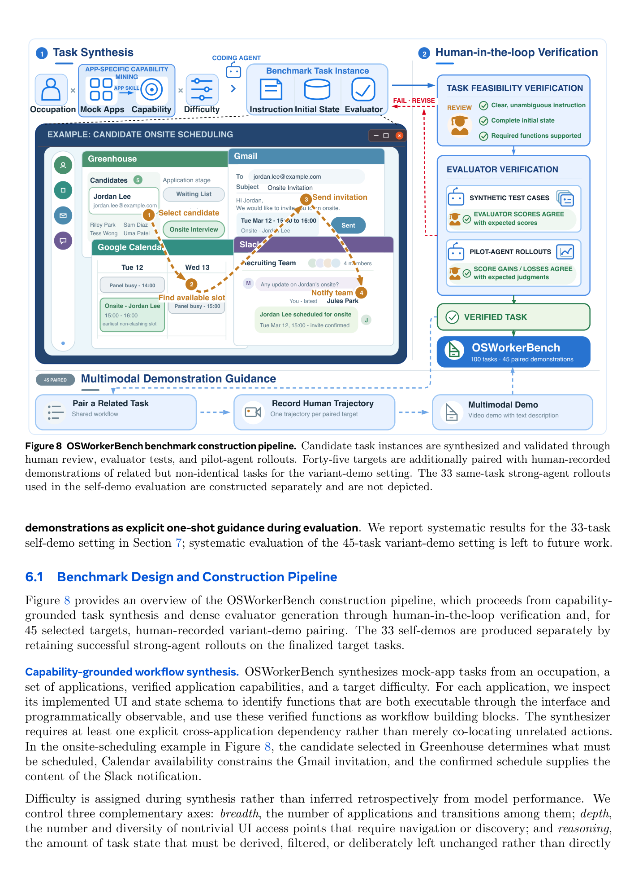
Figure 8 OSWorkerBench benchmark construction pipeline. Candidate task instances are synthesized and validated through human review, evaluator tests, and pilot-agent rollouts. Forty-five targets are additionally paired with human-recorded demonstrations of related but non-identical tasks for the variant-demo setting. The 33 same-task strong-agent rollouts used in the self-demo evaluation are constructed separately and are not depicted.图 8 OSWorkerBench 基准构建流水线。候选任务实例经人工审核、评估器测试与试点智能体 rollout 综合与验证；另有 45 个目标配对相关但不完全相同任务的人类录屏演示，用于 variant-demo 设置。自演示评测所用的 33 条同任务强智能体 rollout 单独构建，图中未展示。
copied. A task’s construction-time difficulty profile jointly varies these axes through its applications and information transfers, access points, records and distractors, decision branches, dependencies, and estimated human-reference horizon. Harder tasks increase multiple dimensions together rather than scaling any single factor in isolation. The horizon is estimated from the GUI actions in a complete human reference solution and is not an observed model trajectory length.
复制。任务的构建时难度画像经由应用与信息传递、访问点、记录与干扰项、决策分支、依赖关系及估计的人类参考跨度等维度联合刻画。更难的任务同时抬高多个维度，而非孤立放大单一因素。人类参考跨度由完整人类参考解中的 GUI 动作估计得出，并非观测到的模型轨迹长度。
Once the workflow and difficulty profile are fixed, a coding-agent pipeline realizes the specification as a natural- language instruction, a deterministic initial state, and an executable evaluator. The setup and evaluator are authored separately under a shared task and answer-key contract, while CUA-Gym’s state-injection design provides an isolated, resettable session for reproducible execution [8].
工作流与难度画像确定后，编码智能体流水线把规格落地为自然语言指令、确定性初始状态与可执行评估器。设置与评估器在共享的任务与答案契约下分别编写；CUA-Gym 的状态注入设计提供隔离、可重置的会话，保证执行可复现 [8]。
Dense evaluator generation and human-in-the-loop verification. To evaluate task outcomes without requiring imitation of a reference trajectory, each evaluator measures functional outcomes rather than similarity to a reference trajectory by decomposing task completion into independently verifiable checkpoints. Record-level checks detect missing, incorrect, or extra outputs; gates enforce prerequisites among dependent outcomes; and weights prioritize primary business outcomes over cross-application outputs and auxiliary confirmations. Most checkpoints compare the final and initial application states, including session-scoped mock-application data exposed through the unified API. When backend state is insufficient, task-specific evaluators inspect spreadsheet cells, generated files, images, compound documents, or conditional outputs. Evaluators contain 1–13 checkpoints (mean 4.86; median 5), enabling dense progress measurement while reserving strict success for tasks satisfying all required final-state conditions.
密集评估器生成与人在环验证。为在不要求模仿参考轨迹的前提下评估任务结果，每个评估器度量功能性结果而非与参考轨迹的相似度——它把任务完成分解为可独立验证的检查点：记录级检查检测缺失、错误或多余输出；门限在相互依赖的结果间强制前置条件；权重让主要业务结果优先于跨应用输出与辅助确认。多数检查点比较应用的最终状态与初始状态，包括经统一 API 暴露的会话级模拟应用数据；后端状态不足时，任务特定评估器转而检查电子表格单元格、生成文件、图像、复合文档或条件输出。评估器含 1–13 个检查点（均值 4.86；中位数 5），既支持密集的进展度量，又把严格成功保留给满足全部最终状态条件的任务。
Before deployment, each evaluator is tested on controlled terminal states. The untouched initial state must score 0 and a golden completion 1. Checkpoint-specific and valid partial states test intermediate scores, while negative cases introduce missing prerequisites, wrong values or branches, distractors, and over-action errors. Each case applies a controlled mutation to the initialized state, with its expected score fixed from the rubric before execution. The production evaluator is then run unchanged across all cases, and a per-task manifest records every mutation and expected score for reproducibility.
部署前，每个评估器先在受控终止状态上测试：未触及的初始状态必须得 0 分，黄金完成得 1 分；检查点特定状态与合法部分状态用于测试中间得分；负例则引入缺失前置条件、错误取值或分支、干扰项与过度操作。每个用例对初始化状态施加一次受控变异，其期望得分在执行前即由评分标准固定。随后生产评估器在全部用例上原样运行，每任务的清单记录每次变异与期望得分，以保证可复现。
Human reviewers additionally verify instruction clarity, setup completeness, task feasibility, checkpoint coverage, weights, and expected partial scores. As an independent execution check, representative agents, including Kimi-2.6 and other CUAs, run each task from its initialized environment. Reviewers compare their trajectories and terminal states against checkpoint-level and aggregate scores. Any mismatch triggers revision of the instruction, setup, or evaluator, followed by rerunning all affected validation checks.
人类评审员另行核验指令清晰度、设置完整性、任务可行性、检查点覆盖、权重与期望部分得分。作为独立的执行检验，代表性智能体（含 Kimi-2.6 与其他 CUA）从初始化环境运行每个任务，评审员将其轨迹与终止状态同检查点级及汇总得分比对。任何不一致都会触发指令、设置或评估器的修订，并重跑所有受影响的验证检查。
6.2Multimodal Demonstration Guidance6.2 多模态演示引导
Self-demo setting. The self-demo collection contains 33 multi-application targets used in the reported DemoCUA evaluation. For each target, a stronger GUI agent first completes that same task successfully. Its rollout is converted into a multimodal demonstration that preserves the screenshots and action types while omitting concrete pixel coordinates from the workflow shown to the evaluated agent. The target is then reset and evaluated with and without this same-task demonstration. Self-demo measures how effectively a model can use a demonstrated execution path; because the source and target tasks are identical, it does not by itself measure procedural transfer across task variants.
self-demo 设置。self-demo 集含 33 个用于本报告 DemoCUA 评估的多应用目标。对每个目标，先由更强的 GUI 智能体成功完成同一任务；其 rollout 被转换为多模态演示，保留截图与动作类型，但从呈现给被评估智能体的工作流中隐去具体像素坐标。随后目标被重置，并在有、无这一同任务演示两种条件下分别评估。self-demo 度量模型利用已演示执行路径的有效程度；因源任务与目标任务相同，它本身并不度量跨任务变体的流程迁移。
Variant-demo setting. OSWorkerBench additionally selects 45 procedurally demanding, multi-stage targets for demonstration-guided procedural transfer. These workflows require information obtained in one application to guide subsequent decisions or artifacts in another, testing intermediate-state retention, stage ordering, and reliable cross-application handoffs. Each target is paired with one successful human demonstration from a semantically related but non-identical source task. Source and target share a transferable workflow structure but differ in entities, values, initial states, and execution details, preventing direct replay. Each raw demonstration contains its source instruction and, for every tool call, the pre-action screenshot, action type and arguments, and post-action screenshot. Natural-language reasoning is excluded. Before inference, the trace is converted into the coordinate-free subtask workflow described in Section 5. These 45 human-recorded pairs define the variant-demo benchmark resource; they are distinct from the 33 same-task demonstrations used for the reported self-demo results.
variant-demo 设置。OSWorkerBench 另选出 45 个流程要求高、多阶段的目标，用于评估演示引导的流程迁移。这些工作流要求把一个应用中获得的信息用于指导另一应用中的后续决策或产物，检验中间状态保持、阶段排序与可靠的跨应用交接。每个目标与一段来自语义相关但不相同源任务的成功人类演示配对：源与目标共享可迁移的工作流结构，但实体、取值、初始状态与执行细节均不同，无法直接回放。每个原始演示含源指令，以及每次工具调用的动作前截图、动作类型与参数、动作后截图；自然语言推理被排除。推理前，轨迹被转换为第 5 节所述的无坐标子任务工作流。这 45 个人工录制配对构成 variant-demo 基准资源，与报告 self-demo 结果所用的 33 个同任务演示相互独立。
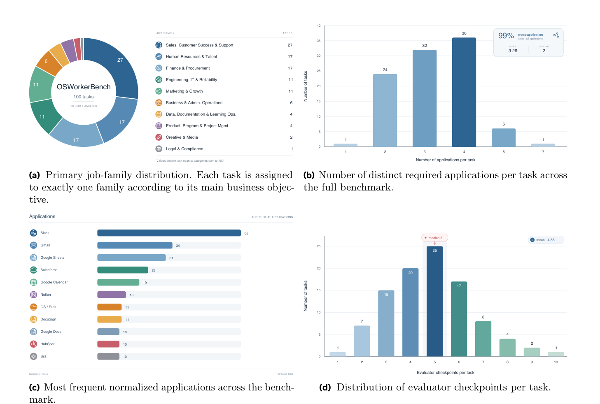
Figure 9 OSWorkerBench dataset overview. All statistics are computed over the canonical 100-task set. Application aliases and mock variants are normalized before counting.图 9 OSWorkerBench 数据集概览。所有统计均基于规范的 100 任务集计算；应用别名与 mock 变体在统计前已归一化。
Controlled evaluation protocols. All 100 tasks can be evaluated under the instruction-only protocol. Under either demonstration-guided setting, the associated targets are rerun after adding exactly one demonstration to the context. Guided and unguided runs use identical target instructions, initialized environments, interaction budgets, and evaluators; only demonstration availability differs. On the 33-task self-demo set, the paired difference measures the value of same-task execution guidance. On the 45-task variant-demo set, it measures transfer of an observed procedure to a related but non-identical task. The remaining 55 tasks lack a variant-demo pairing but remain part of the full instruction-only benchmark.
受控评估协议。全部 100 个任务均可按纯指令协议评估。在任一演示引导设置下，相关目标在向上下文加入恰好一段演示后重跑。有引导与无引导运行使用相同的目标指令、初始环境、交互预算与评估器，唯一差异是演示是否可用。在 33 任务 self-demo 集上，配对差值度量同任务执行引导的价值；在 45 任务 variant-demo 集上，则度量把观察到的流程迁移至相关但不相同任务的效果。其余 55 个任务虽无 variant-demo 配对，仍属完整纯指令基准。
6.3Task Coverage and Characteristics6.3 任务覆盖与特征
We assign each task to one mutually exclusive job family according to its primary business outcome, rather
我们依据任务的主要业务结果而非其恰好使用的应用，将每个任务划入一个互斥的职业族，而
than the applications it happens to use. As shown in Figure 9a, sales, customer success, and support form the largest family with 27 tasks. Human resources and talent and finance and procurement each contribute 17 tasks, followed by engineering, IT, and reliability and marketing and growth with 11 tasks each. The remaining 17 tasks cover business and administrative operations, data, documentation and learning operations, product/program/project management, creative and media work, and legal and compliance. This distribution reflects a deliberate focus on enterprise work while retaining a meaningful long tail of professional scenarios.
如图 9a 所示，销售、客户成功与支持构成最大族，含 27 个任务；人力资源与人才、财务与采购各 17 个；工程、IT 与可靠性以及市场与增长各 11 个；其余 17 个覆盖业务与行政运营、数据、文档与学习运营、产品/项目/项目管理、创意与媒体工作及法律与合规。这一分布体现对企业工作的刻意聚焦，同时保留相当分量的专业场景长尾。
Capability-oriented task slices. Job-family and application statistics describe where a task is situated, but they do not reveal the information dependencies that make the workflow difficult. We therefore annotate every task along two complementary requirement-level dimensions: whether successful completion demands long-term retention of task state, and whether it demands substantive information transfer across applications. These tags characterize properties of the task specification rather than the behavior of a particular agent: they
面向能力的任务切片。职业族与应用统计只说明任务的所属位置，却无法揭示让工作流变得困难的信息依赖。为此，我们沿两个互补的需求级维度标注每个任务：成功完成是否要求对任务状态的长期保持，是否要求跨应用的实质性信息传递。这些标签刻画任务规格本身的属性，而非特定智能体的行为：其
are assigned independently of model scores and observed failure modes. Each case is semantically reviewed against its instruction and available setup, evaluator, and trajectory evidence, while automated scripts are used only to align evidence, count applications, and validate label consistency.
分配独立于模型得分与观测到的失败模式。每个用例均对照其指令及可用的设置、评估器与轨迹证据做语义审查；自动化脚本仅用于对齐证据、统计应用数量与校验标签一致性。
Long-memory workflows (67 cases). Real office processes often separate the moment when information is discovered from the moment when it must be used. We label a task as Long-Memory when it requires either (i) reading or deriving a dynamic value, retaining it across substantive intermediate operations or application
长记忆工作流（67 例）。真实办公流程往往把「发现信息的时刻」与「必须使用信息的时刻」分离。当任务满足以下任一条件时标注为 Long-Memory：(i) 读取或推导一个动态值，跨越实质性中间操作或应用
switches, and reproducing it consistently in a later evaluated outcome; or (ii) maintaining multiple constraints, decisions, completed stages, and pending items across a multi-stage workflow. Both patterns create an explicit dependency between earlier observations and later actions. Merely producing a long trajectory, taking detours, repeating clicks, or eventually failing does not qualify a task for this subset.
切换将其保持，并在后续被评估结果中一致复现；或 (ii) 在多阶段工作流中持续维护多个约束、决策、已完成阶段与待办事项。两种模式都在早期观测与后续动作间建立显式依赖。仅仅产生长轨迹、绕弯路、重复点击或最终失败，并不足以使任务进入该子集。
Cross-application information flow (49 cases). Likewise, opening several applications does not by itself constitute meaningful cross-application reasoning: the actions may be independent and require no information to flow between tools. We reserve the Multi-App tag for tasks that involve at least three distinct logical applications and require the agent to obtain at least two dynamic facts, a multi-field record collection, or a substantive passage of text from one application and faithfully reproduce, organize, or transform it in another. A single transferred identifier, constants already supplied in the instruction, and unrelated fixed actions across several applications are excluded. Application counts include only tools that must be read or modified to complete the evaluated workflow; browser and desktop shells, incidental exploration, and background-only applications are excluded, while multiple tabs or windows of the same product count once. The Long-Memory and Multi-App subsets are assigned independently and may overlap: the former captures temporal dependencies within a workflow, whereas the latter captures information dependencies across tools.
跨应用信息流（49 例）。同样，打开多个应用本身并不构成有意义的跨应用推理——动作可能相互独立，无须信息在工具间流动。Multi-App 标签专用于这样的任务：至少涉及三个不同逻辑应用，且要求智能体从一个应用获得至少两个动态事实、一个多字段记录集合或一段实质性文本，并在另一应用中忠实复现、组织或转换。单一传递的标识符、指令中已给出的常量、以及跨多个应用的无关固定动作均被排除。应用计数只统计必须读取或修改才能完成被评估工作流的工具：浏览器与桌面外壳、附带探索、仅后台运行的应用不计入，同一产品的多个标签页或窗口只计一次。Long-Memory 与 Multi-App 子集独立标注、可能重叠：前者捕捉工作流内的时间依赖，后者捕捉跨工具的信息依赖。
Cross-application breadth. Because demonstrations alter the evaluation context rather than the required work- flow, Figure 9b aggregates all 100 tasks. Cross-application execution is a defining property of OSWorkerBench: 99 tasks require at least two applications, 68 require three or four, and the mean is 3.26 applications per task (median 3; maximum 7). This count is broader than the 49-task Multi-App subset, which additionally requires dynamic information transfer across applications.
跨应用广度。演示改变的是评估上下文而非所需工作流，因此图 9b 汇总全部 100 个任务。跨应用执行是 OSWorkerBench 的定义性属性：99 个任务要求至少两个应用，68 个要求三至四个，平均每任务 3.26 个应用（中位数 3；最大 7）。该计数比 49 任务的 Multi-App 子集更宽，后者还额外要求跨应用动态信息传递。
Application frequencies exhibit a hub-and-spoke structure (Figure 9c). Slack appears in 65 tasks, followed by Gmail (34), Google Sheets (31), Salesforce (23), and Google Calendar (19), where the most common pairs are Google Sheets–Slack and Gmail–Slack (23 tasks each). These hubs support communication and state synchronization across a long tail of 41 applications. Together, application breadth and evaluator granularity characterize intrinsic task structure, with evaluators containing 1–13 checkpoints (Figure 9d).
应用频率呈轴辐结构（图 9c）：Slack 出现在 65 个任务中，其后是 Gmail（34）、Google Sheets（31）、Salesforce（23）与 Google Calendar（19）；最常见配对为 Google Sheets–Slack 与 Gmail–Slack（各 23 个任务）。这些枢纽支撑着横跨 41 个应用长尾的通信与状态同步。应用广度与评估器粒度共同刻画任务内在结构，评估器含 1–13 个检查点（图 9d）。
Long-horizoninteractiondifficulty. OSWorkerBench is deliberately designed around realistic office workflows that unfold over many dependent stages rather than isolated GUI operations. To reach the final business outcome, an agent must carry forward dynamically discovered information, preserve constraints across application switches, and track both completed and pending steps throughout the workflow. This structure produces genuinely long interaction horizons: in the Kimi-2.6 rollouts, the median trajectory contains 68 observation– decision turns (mean 88.3), and 38 of the 100 trajectories extend to at least 100 turns. OSWorkerBench therefore directly stresses long-memory, cross-application state tracking, and sustained end-to-end workflow control. Section 7.2.4 provides the decision-turn definition and full trajectory analysis.
长程交互难度。OSWorkerBench 刻意围绕在多个相互依赖阶段中展开的真实办公工作流设计，而非孤立的 GUI 操作。为达成最终业务结果，智能体必须向前传递动态发现的信息、在应用切换间保持约束，并在整个工作流中同时跟踪已完成与待办步骤。这一结构造就真正长的交互跨度：Kimi-2.6 的 rollout 中，轨迹中位数为 68 个观测-决策轮（均值 88.3），100 条轨迹中 38 条延伸至至少 100 轮。因此 OSWorkerBench 直接考验长记忆、跨应用状态跟踪与持续的端到端工作流控制。第 7.2.4 节给出决策轮定义与完整轨迹分析。
6.4Executable Evaluation6.4 可执行评估
Each task is paired with an evaluator that measures functional outcomes rather than similarity to a reference trajectory. Eighty-eight tasks use state-based evaluators over initialized enterprise application backends. The remaining 12 use task-specific evaluators for spreadsheets, images, compound document deliverables, or conditional workflows. This mixture preserves deterministic final-state verification while accommodating outputs whose correctness cannot be represented as a single application-state predicate.
每个任务都配有度量功能性结果而非参考轨迹相似度的评估器：88 个任务使用基于状态的评估器，作用于初始化的企业应用后端；其余 12 个使用任务特定评估器，面向电子表格、图像、复合文档交付物或条件工作流。这一组合既保留确定性最终状态验证，又兼容正确性无法表示为单一应用状态谓词的输出。
We report strict task success, which requires all final-state conditions, and partial progress, the checkpoint- weighted score Spartial = (P
我们报告严格任务成功（要求满足全部最终状态条件）与部分进展（检查点加权得分 Spartial = (P
i wici)/(P
i wici)/(P
i wi), where ci ∈[0, 1] is the score and wi the weight of checkpoint i. For the Long-Memory and Multi-App subsets, we report only strict success because task-level labels may correspond to only a subset of checkpoints, making partial scores capability-ambiguous. Guided and unguided
i wi)，其中 ci ∈[0, 1] 为检查点 i 的得分，wi 为其权重。对 Long-Memory 与 Multi-App 子集仅报告严格成功：任务级标签可能只对应部分检查点，部分得分因此无法明确归因于能力。有引导与无引导
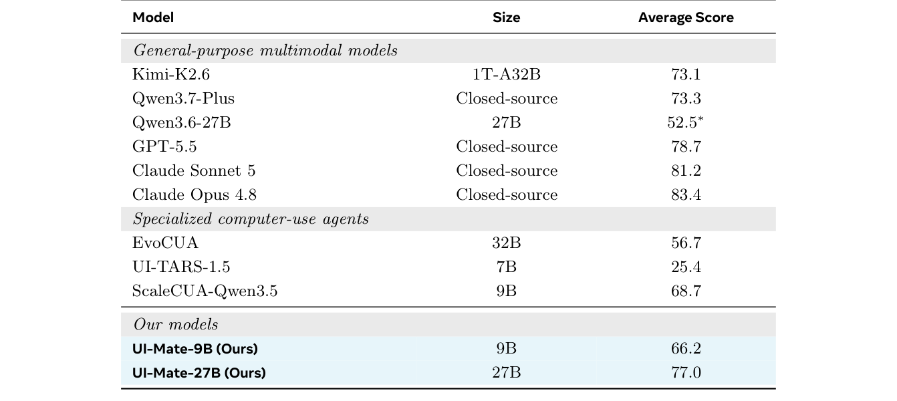
Table 1 Overall average scores (%) on OSWorld-Verified. We report the overall average score of each model under the OSWorld evaluation protocol. Size denotes the publicly disclosed model scale when available. Higher is better. Our models are shaded. ∗denotes a result reproduced by following the official OSWorld repository.表 1 OSWorld-Verified 上的总体平均分（%）。我们按 OSWorld 评测协议报告各模型的总体平均分；Size 为公开披露的模型规模（如可得）；数值越高越好；我们的模型以底色标出；∗表示按 OSWorld 官方仓库复现的结果。
Table 1表 1 OSWorld-Verified 上的总体平均分（%）。我们按 OSWorld 评测协议报告各模型的总体平均分；Size 为公开披露的模型规模（如可得）；数值越高越好；我们的模型以底色标出；∗表示按 OSWorld 官方仓库复现的结果。
| Model | Size | Average Score |
|---|---|---|
| General-purpose multimodal models | ||
| Kimi-K2.6 | 1T-A32B | 73.1 |
| Qwen3.7-Plus | Closed-source | 73.3 |
| Qwen3.6-27B | 27B | 52.5∗ |
| GPT-5.5 | Closed-source | 78.7 |
| Claude Sonnet 5 | Closed-source | 81.2 |
| Claude Opus 4.8 | Closed-source | 83.4 |
| Specialized computer-use agents | ||
| EvoCUA | 32B | 56.7 |
| UI-TARS-1.5 | 7B | 25.4 |
| ScaleCUA-Qwen3.5 | 9B | 68.7 |
| Our models | ||
| UI-Mate-9B (Ours) | 9B | 66.2 |
| UI-Mate-27B (Ours) | 27B | 77.0 |
runs use identical evaluators, ensuring that measured gains reflect task outcomes rather than action imitation. We plan to release the task specifications, the 33 self-demo and 45 variant-demo pairings, taxonomy metadata,
运行使用相同评估器，确保测得的增益反映任务结果而非动作模仿。我们计划发布任务规格、33 个 self-demo 与 45 个 variant-demo 配对、分类体系元数据及
and evaluators.
评估器。
7Evaluations7 评估
7.1Evaluation Setup7.1 评估设置
Public Benchmarks. We evaluate UI-Mate on OSWorld-Verified [10] and WindowsAgentArena (WAA) [11] as public references for general computer-use performance.
公开基准。我们在 OSWorld-Verified [10] 与 WindowsAgentArena（WAA）[11] 上评估 UI-Mate，作为通用计算机使用性能的公开参照。
OSWorkerBench. We additionally evaluate on OSWorkerBench (Section 6). Under the instruction-only protocol, all models receive only the target instruction, and we report strict binary success and checkpoint- based progress over all 100 tasks. We further report binary success on two overlapping requirement-based subsets: 67 Long-Memory tasks and 49 Multi-App tasks. Demonstration-guided evaluation uses separate pairings: the reported quantitative experiment uses 33 same-task strong-agent rollouts in the self-demo setting, while the benchmark also provides 45 human-recorded demonstrations of related but non-identical tasks for the variant-demo setting. A systematic aggregate result on the 45-task variant-demo set is left for future work exploration.
OSWorkerBench。我们额外在 OSWorkerBench（第 6 节）上评估。纯指令协议下所有模型仅接收目标指令，我们报告全部 100 个任务的严格二元成功与基于检查点的进展，并在两个可能重叠的需求子集上报告二元成功：67 个 Long-Memory 任务与 49 个 Multi-App 任务。演示引导评估使用独立配对：本报告的定量实验采用 self-demo 设定下 33 个同任务强智能体 rollout；基准同时提供 45 段相关但不相同任务的人类录制演示（variant-demo 设定）。45 任务 variant-demo 集的系统性汇总结果留待后续探索。
We compare UI-Mate with representative baselines, divided into two groups. The general-purpose group
我们将 UI-Mate 与两组代表性基线比较。通用组
comprises Kimi-K2.6 [29], Qwen3.6-27B [30], Qwen3.5-9B [31], GPT-5.5 [32], Claude Sonnet 5 [33], and Claude Opus 4.8 [34]. These models span different scales, model families, and deployment regimes, providing strong reference points for computer-use capabilities that emerge from broadly trained multimodal models. The specialized group includes EvoCUA-32B [6], UI-TARS-1.5-7B [3], and ScaleCUA-Qwen3.5-9B [35], each explicitly trained or adapted for graphical user-interface interaction. Together, these baselines position UI-Mate relative to both general-purpose multimodal models and specialized computer-use agents. Because the systems differ in architecture, training data, and agent scaffolding, the comparisons reflect end-to-end system performance rather than the isolated effect of model scale or computer-use specialization. Unless
包括 Kimi-K2.6 [29]、Qwen3.6-27B [30]、Qwen3.5-9B [31]、GPT-5.5 [32]、Claude Sonnet 5 [33] 与 Claude Opus 4.8 [34]，覆盖不同规模、模型族与部署方式，为广泛训练的多模态模型所涌现的计算机使用能力提供有力参照。专用组包括 EvoCUA-32B [6]、UI-TARS-1.5-7B [3] 与 ScaleCUA-Qwen3.5-9B [35]，均为图形界面交互做过显式训练或适配。这些基线共同把 UI-Mate 置于通用多模态模型与专用计算机使用智能体之间定位。鉴于各系统在架构、训练数据与智能体脚手架上各有差异，比较反映的是端到端系统性能，而非模型规模或计算机使用专门化的孤立效应。除非
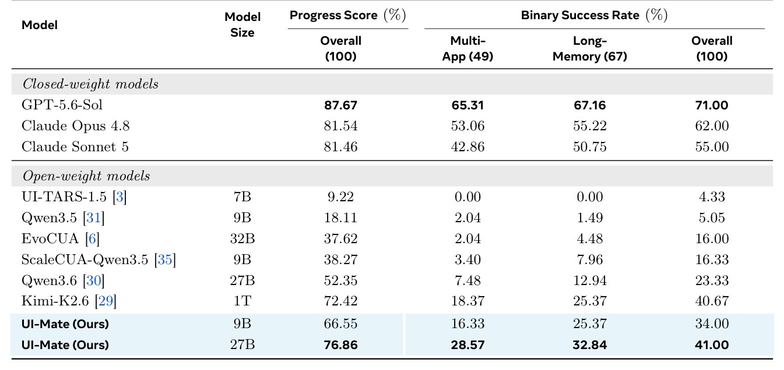
Table 2 Main results on OSWorkerBench under the instruction-only protocol. We report the average checkpoint-based progress score across all 100 tasks, followed by strict binary success rates on the overlapping requirement-based Multi-App (49 tasks) and Long-Memory (67 tasks) subsets and on the full benchmark. Models are grouped by weight availability, with model sizes omitted when they are not publicly disclosed. All values are percentages, and higher is better. The best baseline result in each column is shown in bold.表 2 仅指令协议下 OSWorkerBench 的主要结果。我们报告全部 100 个任务的平均检查点进展分，以及需求重叠的 Multi-App（49 任务）与 Long-Memory（67 任务）子集和全基准上的严格二元成功率；模型按权重可得性分组，未公开时省略模型规模；所有数值均为百分比，越高越好；每列最佳基线结果加粗。
Table 2表 2 仅指令协议下 OSWorkerBench 的主要结果。我们报告全部 100 个任务的平均检查点进展分，以及需求重叠的 Multi-App（49 任务）与 Long-Memory（67 任务）子集和全基准上的严格二元成功率；模型按权重可得性分组，未公开时省略模型规模；所有数值均为百分比，越高越好；每列最佳基线结果加粗。
| Model | Model Size | Progress Overall Score (%) | Multi- | Binary Success Long- Rate | (%) Overall |
|---|---|---|---|---|---|
| Closed-weight models | (100) | App (49) | Memory (67) | (100) | |
| GPT-5.6-Sol | 87.67 | 65.31 | 67.16 | 71.00 | |
| Claude Opus 4.8 | 81.54 | 53.06 | 55.22 | 62.00 | |
| Claude Sonnet 5 | 81.46 | 42.86 | 50.75 | 55.00 | |
| Open-weight models | |||||
| UI-TARS-1.5 [3] | 7B | 9.22 | 0.00 | 0.00 | 4.33 |
| Qwen3.5 [31] | 9B | 18.11 | 2.04 | 1.49 | 5.05 |
| EvoCUA [6] | 32B | 37.62 | 2.04 | 4.48 | 16.00 |
| ScaleCUA-Qwen3.5 [35] | 9B | 38.27 | 3.40 | 7.96 | 16.33 |
| Qwen3.6 [30] | 27B | 52.35 | 7.48 | 12.94 | 23.33 |
| Kimi-K2.6 [29] | 1T | 72.42 | 18.37 | 25.37 | 40.67 |
| UI-Mate (Ours) | 9B | 66.55 | 16.33 | 25.37 | 34.00 |
| UI-Mate (Ours) | 27B | 76.86 | 28.57 | 32.84 | 41.00 |
otherwise stated, all systems are evaluated in the same initialized target environments with identical task instructions, interaction budgets, and executable evaluators. Where a demonstration-guided comparison is reported, each system receives the same demonstration through its model-specific input format; the quantitative OSWorkerBench comparison in this report uses the 33-task self-demo collection.
另有说明，所有系统均在相同的初始化目标环境中、以相同任务指令、交互预算与可执行评估器评估。凡报告演示引导比较，每个系统都经其模型特定输入格式接收同一段演示；本报告的 OSWorkerBench 定量比较使用 33 任务 self-demo 集。
We use benchmark-specific evaluation configurations as described below.
我们使用如下所述的各基准专用评估配置。
OSWorld-Verified. We evaluate our model on OSWorld-Verified [10], a benchmark designed to assess multimodal agents on open-ended tasks in real computer environments. OSWorld-Verified performance reflects the complete interactive process: interpreting visual observations, grounding actions in the graphical interface, executing multi-step operations, and maintaining progress over long-horizon workflows. We follow the official OSWorld codebase and evaluation protocol. Evaluation is conducted using the official Docker/AWS provider configurations. The Docker provider supplies isolated, reproducible desktop environments with KVM acceleration where available, while the AWS provider uses OSWorld’s official host-client architecture to support large-scale parallel evaluation. Parallel execution affects only evaluation throughput and does not change individual task configurations or scoring criteria. We report the end-to-end task success rate calculated by the official evaluators.
OSWorld-Verified。我们在 OSWorld-Verified [10] 上评估模型。该基准考核多模态智能体在真实计算机环境中完成开放任务的能力，成绩反映完整交互过程：解读视觉观测、把动作定位到图形界面、执行多步操作、在长程工作流中保持进展。我们遵循官方 OSWorld 代码库与评估协议，采用官方 Docker/AWS provider 配置：Docker provider 提供隔离、可复现的桌面环境，并在可用时启用 KVM 加速；AWS provider 采用 OSWorld 官方主机-客户端架构支撑大规模并行评估。并行执行只影响评估吞吐，不改变单任务配置或评分标准。我们报告官方评估器计算的端到端任务成功率。
WindowsAgentArena. To further assess cross-platform generalization, we evaluate our model on Win- dowsAgentArena (WAA) [11], which tests computer-use agents on Windows applications and system-specific configurations. We follow OS-SYMPHONY’s evaluation protocol for WAA and use the corresponding OSWorld configurations as references for model-specific settings. Our implementation supports both WAA’s original Docker-based environment and our internal sandbox. We report the end-to-end task success rate computed by WAA’s task-specific evaluators.
WindowsAgentArena。为进一步检验跨平台泛化，我们在 WindowsAgentArena（WAA）[11] 上评估模型——该基准在 Windows 应用与系统特定配置上测试计算机使用智能体。我们遵循 OS-SYMPHONY 的 WAA 评估协议，并以对应 OSWorld 配置作为模型特定设置的参照。实现同时支持 WAA 原生 Docker 环境与我们的内部沙箱。我们报告 WAA 任务特定评估器计算的端到端任务成功率。
OSWorkerBench. To support long-horizon state tracking, UI-Mate-27B retains its generated thinking through- out the interaction history, keeping intermediate constraints, decisions, and pending actions available during later stages of a workflow. For the baseline agents with instruction-only setup, we follow their corresponding OSWorld evaluation configurations and adapt them to the OSWorkerBench environment without changing their
OSWorkerBench。为支撑长程状态跟踪，UI-Mate-27B 在整个交互历史中保留生成的思考内容，使中间约束、决策与待办动作在工作流后段依然可用。对采用纯指令设置的基线智能体，我们遵循其对应的 OSWorld 评估配置并适配至 OSWorkerBench 环境，不改动其
model-specific interaction mechanisms. All agents are evaluated with a maximum budget of 200 interaction steps per task.
模型特定交互机制。所有智能体均以每任务最多 200 交互步的预算评估。
7.2Main Results7.2 主要结果
UI-Mate is competitive with general-purpose models and advances specialized computer-use agents. As shown in Table 1, UI-Mate-27B achieves an average score of 77.0% on OSWorld-Verified, outperforming the general- purpose Kimi-K2.6 (73.1%) and Qwen3.7-Plus (73.3%) while approaching GPT-5.5 (78.7%) with a gap of 1.7%. Among specialized agents, it exceeds ScaleCUA-Qwen3.5 (68.7%), EvoCUA-32B (56.7%), and UI-TARS-1.5 (25.4%). UI-Mate-9B reaches 66.2%, slightly below ScaleCUA-Qwen3.5-9B but above the larger EvoCUA-32B by 9.5%. These comparisons indicate that environment-grounded computer-use training can deliver performance competitive with substantially larger general-purpose systems and that model scale alone does not determine agent capability.
UI-Mate 与通用模型相当，并领先专用计算机使用智能体。表 1 显示，UI-Mate-27B 在 OSWorld-Verified 上取得 77.0% 的平均分，超过通用模型 Kimi-K2.6（73.1%）与 Qwen3.7-Plus（73.3%），距 GPT-5.5（78.7%）仅 1.7%；在专用智能体中超过 ScaleCUA-Qwen3.5（68.7%）、EvoCUA-32B（56.7%）与 UI-TARS-1.5（25.4%）。UI-Mate-9B 达 66.2%，略低于 ScaleCUA-Qwen3.5-9B，却高出更大的 EvoCUA-32B 达 9.5%。这些比较表明，基于环境的计算机使用训练可获得与规模大得多的通用系统相当的性能，且模型规模并非智能体能力的决定因素。
Scaling primarily improves application-level workflow execution. UI-Mate-9B and UI-Mate-27B obtain the same OS score of 91.7%, suggesting that the smaller model already acquires strong basic operating-system interaction capabilities. The 27B model’s overall gain of 10.8% instead comes primarily from Office (+11.9%), Daily (+12.7%), Professional (+6.1%), and Workflow (+13.0%) tasks. Thus, increasing model capacity contributes
扩展主要提升应用级工作流执行。UI-Mate-9B 与 UI-Mate-27B 的 OS 得分同为 91.7%，说明小模型已具备扎实的基础操作系统交互能力；27B 模型 10.8% 的整体增益反而主要来自 Office（+11.9%）、Daily（+12.7%）、Professional（+6.1%）与 Workflow（+13.0%）任务。因此，扩大模型容量的贡献
less to atomic OS control than to coordinating longer, application-specific execution paths. UI-Mate-9B nevertheless reaches 66.2% and surpasses EvoCUA-32B (56.7%), showing that model size alone does not determine computer-use performance; the coverage and quality of agent training data are also critical.
更多体现在协调更长、应用特定的执行路径，而非原子 OS 控制。UI-Mate-9B 仍达 66.2% 并超过 EvoCUA-32B（56.7%），表明模型规模本身不决定计算机使用性能，智能体训练数据的覆盖与质量同样关键。
UI-Mate’s relative strengths lie in system interaction and workflow coordination. Compared with Kimi-K2.6, UI-Mate-27B achieves higher scores on OS (91.7% vs. 79.2%), Office (85.4% vs. 80.0%), and Workflow tasks (63.7% vs. 55.0%), while the two models perform similarly on Daily tasks (76.8% vs. 77.1%). In contrast,
UI-Mate 的相对优势在系统交互与工作流协调。与 Kimi-K2.6 相比，UI-Mate-27B 在 OS（91.7% 对 79.2%）、Office（85.4% 对 80.0%）与 Workflow 任务（63.7% 对 55.0%）上得分更高，两者在 Daily 任务上则相近（76.8% 对 77.1%）。相比之下，
UI-Mate-27B remains weaker on Professional tasks (75.5% vs. 81.6%). This performance profile indicates that UI-Mate’s training transfers particularly well to operating-system control, office applications, and multi-stage workflow execution, while specialized professional software remains an important direction for improving coverage and generalization.
UI-Mate-27B 在 Professional 任务上仍偏弱（75.5% 对 81.6%）。这一性能画像说明，UI-Mate 的训练尤其能迁移到操作系统控制、办公应用与多阶段工作流执行，而专业软件仍是提升覆盖与泛化的重要方向。
UI-Mate establishes the strongest open-weight performance on WindowsAgentArena. In Table 3, UI-Mate-27B achieves a task success rate of 66.2%, outperforming all open-weight baselines from 7B to 1T parameters. It surpasses the substantially larger Kimi-K2.6 (63.3%) by 2.9 percentage points and exceeds specialized computer-use agents including EvoCUA-32B (56.5%), UI-TARS-1.5-7B (42.1%), and ScaleCUA-Qwen3.5-9B (38.1%). UI-Mate-27B also approaches frontier closed-source models, trailing Claude Sonnet 5 (68.8%), Claude
UI-Mate 在 WindowsAgentArena 上确立了开源权重的最强性能。表 3 中，UI-Mate-27B 取得 66.2% 的任务成功率，超过 7B 至 1T 参数范围内的所有开源权重基线：较高大规模模型 Kimi-K2.6（63.3%）高 2.9 个百分点，并领先 EvoCUA-32B（56.5%）、UI-TARS-1.5-7B（42.1%）与 ScaleCUA-Qwen3.5-9B（38.1%）等专用计算机使用智能体。UI-Mate-27B 亦逼近前沿闭源模型：分别仅落后 Claude Sonnet 5（68.8%）与 Claude
Opus 4.8 (69.3%), and GPT-5.5 (70.4%) by only 2.6, 3.1, and 4.2 percentage points, respectively. These comparisons demonstrate that environment-grounded computer-use training can produce an open-weight agent competitive with substantially larger general-purpose models and leading proprietary systems.
Opus 4.8（69.3%）、GPT-5.5（70.4%）2.6、3.1 与 4.2 个百分点。这些比较表明，基于环境的计算机使用训练可以造出与规模大得多的通用模型及领先专有系统相竞争的开源权重智能体。
UI-Matedeliverssubstantialgainsacrossmodelscales. UI-Mate-9B reaches a success rate of 61.7%, outperforming its Qwen3.5-9B base model (37.5%) by 24.2 percentage points and ScaleCUA-Qwen3.5-9B (38.1%), a specialized agent at the same scale, by 23.6 points. Despite using only 9B parameters, it also surpasses the larger EvoCUA- 32B (56.5%) by 5.2 points and comes within 1.6 points of the 1T-parameter Kimi-K2.6. Similarly, UI-Mate-27B improves upon Qwen3.6-27B (47.1%) by 19.1 percentage points while holding model scale fixed. Together, these results show that UI-Mate’s gains arise not merely from model capacity, but from the coverage, quality, and executable feedback provided by our training stack.
UI-Mate 在各模型规模上都带来显著增益。UI-Mate-9B 成功率达 61.7%，较其 Qwen3.5-9B 基座（37.5%）高 24.2 个百分点，较同规模专用智能体 ScaleCUA-Qwen3.5-9B（38.1%）高 23.6 个百分点；尽管仅 9B 参数，它还高出更大的 EvoCUA-32B（56.5%）5.2 个百分点，距 1T 参数的 Kimi-K2.6 仅 1.6 个百分点。类似地，在模型规模不变的前提下，UI-Mate-27B 较 Qwen3.6-27B（47.1%）高 19.1 个百分点。这些结果共同说明：UI-Mate 的增益不只源于模型容量，更源于训练栈提供的覆盖、质量与可执行反馈。
UI-Mate delivers competitive performance at the 27B scale. In Table 2, UI-Mate-27B attains 41.00% overall binary success and a 76.86% progress score. Relative to its Qwen3.6-27B base model, our computer-use training improves these metrics by 17.67 and 24.51 percentage points, respectively, while holding architecture and
UI-Mate 在 27B 规模上表现具有竞争力。表 2 中，UI-Mate-27B 取得 41.00% 的总体二元成功率与 76.86% 的进展分；相对 Qwen3.6-27B 基座，计算机使用训练把这两项指标分别提升 17.67 与 24.51 个百分点，且保持架构与
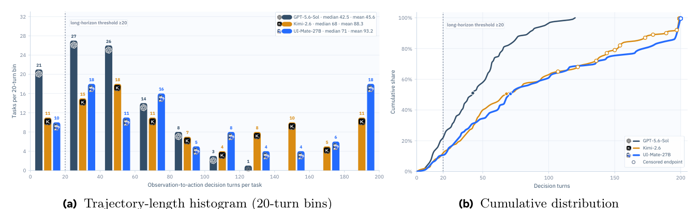
Figure 10 Decision-turn distributions for GPT-5.6-Sol, Kimi-K2.6, and UI-Mate-27B on the same 100 OSWorkerBench tasks. A decision turn is one observation-to-action model response. A response containing multiple UI actions still counts as one turn because no new observation occurs within the batch; terminal responses and duplicate log records are excluded. Trajectory-length histograms using 20-turn bins show the prevalence of extended interactions, while empirical cumulative distributions summarize the full trajectory-length profiles; open triangles mark trajectories censored by the turn limit or technical failures. Each system has one rollout per task, and decision-turn counts characterize end-to-end interaction patterns rather than atomic UI-operation counts.图 10 GPT-5.6-Sol、Kimi-K2.6 与 UI-Mate-27B 在同一批 100 个 OSWorkerBench 任务上的决策轮分布。决策轮指一次从观察到的模型响应；含多个 UI 动作的响应因批次内不产生新观察仍计为一轮；终端响应与重复日志记录被剔除。以 20 轮为分箱的轨迹长度直方图展示长交互的普遍性，经验累积分布概括完整轨迹长度轮廓；空心三角标记因轮数上限或技术故障被截断的轨迹。每个系统每任务一条 rollout；决策轮数刻画端到端交互模式，而非原子 UI 操作数。
parameter count fixed. This brings UI-Mate-27B slightly ahead of Kimi-K2.6 in both end-to-end completion (41.00% vs. 40.67%) and overall progress (76.86% vs. 72.42%). UI-Mate-27B also exceeds the best prior
参数量不变。这使 UI-Mate-27B 在端到端完成（41.00% 对 40.67%）与总体进展（76.86% 对 72.42%）上均小幅领先 Kimi-K2.6，并超过了此前最佳的
specialized agent in overall success, although a clear gap to frontier models remains.
专用智能体的总体成功率，但与前沿模型仍存在明显差距。
UI-Mate achieves substantial improvements at the 9B scale. As shown in Table 2, UI-Mate-9B improves overall binary success from 5.05% to 34.00% and progress from 18.11% to 66.55% over its Qwen3.5-9B base model, corresponding to gains of 28.95 and 48.44 percentage points. It also substantially outperforms ScaleCUA- Qwen3.5-9B, a specialized agent built on the same base model, in both overall success (34.00% vs. 16.33%) and progress (66.55% vs. 38.27%).
UI-Mate 在 9B 规模上提升显著。表 2 显示，UI-Mate-9B 相对 Qwen3.5-9B 基座把总体二元成功率从 5.05% 提至 34.00%、进展从 18.11% 提至 66.55%，对应 28.95 与 48.44 个百分点的增益；同时在总体成功（34.00% 对 16.33%）与进展（66.55% 对 38.27%）上大幅领先基于同一基座的专用智能体 ScaleCUA-Qwen3.5-9B。
UI-Mate is stronger on long-horizon and cross-application tasks. UI-Mate-27B achieves 28.57% success on Multi-App tasks and 32.84% on Long-Memory tasks, substantially improving over its Qwen3.6-27B base model (7.48% and 12.94%) and outperforming Kimi-K2.6 (18.37% and 25.37%). Given the near tie between UI-Mate-27B and Kimi-K2.6 on overall success, this relative advantage suggests that our training particularly benefits workflows requiring information transfer across applications and sustained state tracking.
UI-Mate 在长程与跨应用任务上更强。UI-Mate-27B 在 Multi-App 任务上成功率为 28.57%，Long-Memory 任务为 32.84%，大幅超过 Qwen3.6-27B 基座（7.48% 与 12.94%），亦优于 Kimi-K2.6（18.37% 与 25.37%）。鉴于两者在总体成功率上几乎持平，这一相对优势说明我们的训练尤其惠及需要跨应用信息传递与持续状态跟踪的工作流。
Trajectory-level evidence. Representative trajectories illustrate this difference. In a five-application pipeline- management workflow, UI-Mate preserves record-specific attributes through the final updates, whereas Kimi-K2.6 completes most stages but fails to persist required dates. In a multi-student report-card workflow, UI-Mate maintains the correspondence among records, reports, recipients, and status updates, while Kimi-K2.6 omits required attributes from the final email. These cases point to late-stage information preservation, rather than basic interface reachability, as an important source of the performance difference.
轨迹级证据。代表性轨迹印证了这一差异：在五应用流水线管理工作流中，UI-Mate 把记录特有属性保持到最终更新，Kimi-K2.6 虽完成大部分阶段却未能留存所需日期；在多学生成绩单工作流中，UI-Mate 维护了记录、报告、收件人与状态更新间的对应关系，Kimi-K2.6 则在最终邮件中遗漏必需属性。这些案例表明，性能差异的重要来源是晚期信息保持，而非基本的界面可达性。
Remaining failure modes. UI-Mate-27B’s progress score exceeds its binary success rate by 35.86 percentage points, indicating substantial partial progress on tasks that are not completed end to end. The trajectory examples point to late-stage omissions, such as an unwritten field or missing final notification, as an important remaining failure mode. Closing the gap between partial progress and strict completion is therefore a primary opportunity for improvement. Long-Memory and Multi-App are overlapping task populations rather than matched variants, so their success rates characterize relative strengths but do not isolate the causal effect of any single training component.
剩余失败模式。UI-Mate-27B 的进展分较二元成功率高 35.86 个百分点，说明在未端到端完成的任务上仍有大量部分进展；轨迹示例指出，晚期遗漏（如未写入的字段、缺失的最终通知）是主要的剩余失败模式。因此，弥合部分进展与严格完成之间的差距是首要改进方向。Long-Memory 与 Multi-App 是相互重叠的任务群体而非严格匹配的变体，其成功率只刻画相对强弱，无法隔离单一训练组件的因果效应。
Protocol and metric. Task-level scores summarize outcome quality but not the interaction horizon required to achieve it. We therefore analyze trajectories from GPT-5.6-Sol, Kimi-K2.6, and UI-Mate-27B on the same 100 OSWorkerBench tasks. A decision turn consists of one interface observation followed by one model response.
协议与指标。任务级得分只总结结果质量，不反映达成该质量所需的交互跨度。为此，我们分析 GPT-5.6-Sol、Kimi-K2.6 与 UI-Mate-27B 在相同 100 个 OSWorkerBench 任务上的轨迹。一个决策轮由一次界面观测及其后的一次模型响应组成。
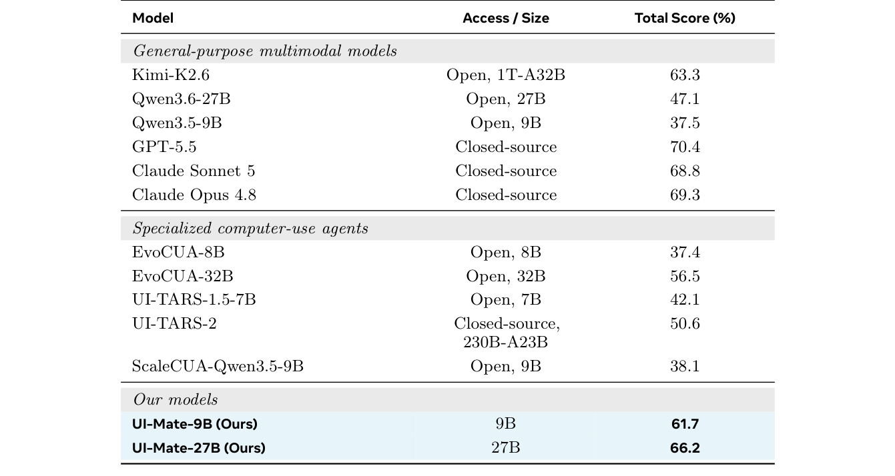
Table 3 Agent success rates on WindowsAgentArena. All values are percentages, and higher is better. Our models are shaded.表 3 WindowsAgentArena 上的智能体成功率。所有数值均为百分比，越高越好；我们的模型以底色标出。
Table 3表 3 WindowsAgentArena 上的智能体成功率。所有数值均为百分比，越高越好；我们的模型以底色标出。
| Model | Access / Size | Total Score (%) |
|---|---|---|
| General-purpose multimodal models | ||
| Kimi-K2.6 | Open, 1T-A32B | 63.3 |
| Qwen3.6-27B | Open, 27B | 47.1 |
| Qwen3.5-9B | Open, 9B | 37.5 |
| GPT-5.5 | Closed-source | 70.4 |
| Claude Sonnet 5 | Closed-source | 68.8 |
| Claude Opus 4.8 | Closed-source | 69.3 |
| Specialized computer-use agents | ||
| EvoCUA-8B | Open, 8B | 37.4 |
| EvoCUA-32B | Open, 32B | 56.5 |
| UI-TARS-1.5-7B | Open, 7B | 42.1 |
| UI-TARS-2 | Closed-source, | 50.6 |
| 230B-A23B | ||
| ScaleCUA-Qwen3.5-9B | Open, 9B | 38.1 |
| Our models | ||
| UI-Mate-9B (Ours) | 9B | 61.7 |
| UI-Mate-27B (Ours) | 27B | 66.2 |
A response containing multiple UI actions still counts as a single turn because the model does not receive another observation or make another decision within the batch. Terminal responses and duplicate records are excluded. This metric therefore measures cycles of observation and decision making rather than atomic mouse or keyboard operations. All systems use screenshot observations, PyAutoGUI control, 1920×1080 environments, and a nominal 200-turn budget, with one rollout per task.
含多个 UI 动作的响应仍计为一轮，因为模型在该批次内不再接收观测、不再另做决策；终止响应与重复记录被排除。该指标度量的是观测-决策循环，而非原子级鼠标或键盘操作。所有系统均使用截图观测、PyAutoGUI 控制、1920×1080 环境与名义 200 轮预算，每任务一次 rollout。
OSWorkerBench requires long-horizon interaction. Figure 10a reports trajectory-length histograms, while Figure 10b shows the corresponding cumulative distributions. The median trajectory contains 68 decision turns for Kimi-K2.6 and 71 for UI-Mate-27B, and 40 UI-Mate trajectories extend to at least 100 turns. Even GPT-5.6-Sol, whose trajectory distribution is shorter, requires sustained interaction on most tasks. Several Kimi and UI-Mate trajectories reach the turn limit or terminate because of technical failures, so their observed lengths are lower bounds. These distributions establish that OSWorkerBench evaluates extended workflows requiring sustained planning, state tracking, and execution rather than isolated GUI operations.
OSWorkerBench 需要长程交互。图 10a 给出轨迹长度直方图，图 10b 为相应累积分布：Kimi-K2.6 轨迹中位数为 68 个决策轮，UI-Mate-27B 为 71，40 条 UI-Mate 轨迹延伸至至少 100 轮；即便轨迹分布更短的 GPT-5.6-Sol，在多数任务上也需持续交互。若干 Kimi 与 UI-Mate 轨迹触及轮数上限或因技术故障终止，其观测长度因此是下界。这些分布说明，OSWorkerBench 评估的是需要持续规划、状态跟踪与执行的扩展工作流，而非孤立 GUI 操作。
Shorter GPT trajectories largely reflect action batching. GPT’s lower decision-turn count does not imply that the underlying workflows are shorter or require fewer atomic operations. A separate audit of its action logs shows that GPT produces an average of 3.83 action records per turn, with nearly half of its turns containing multiple non-wait UI actions. A substantial part of the distributional difference in Figure 10 therefore reflects action batching and system-level interaction policies rather than a reduction in the underlying task horizon.
GPT 轨迹更短主要源于动作批处理。GPT 决策轮数较少，并不意味着其底层工作流更短或所需原子操作更少：对其动作日志的单独审计显示，GPT 平均每轮产生 3.83 条动作记录，近半数轮次包含多个非等待 UI 动作。因此，图 10 中分布差异的相当一部分来自动作批处理与系统级交互策略，而非底层任务跨度的缩短。
UI-Mate maintains execution over extended workflows. UI-Mate-27B operates across a median of 71 decision turns, with a substantial portion of its trajectories extending beyond 100 turns. Together with the outcome results in Table 2, this distribution provides evidence that UI-Mate can preserve task state and accumulate verified progress across long, multi-stage workflows. The central conclusion is therefore not that shorter trajectories are inherently better, but that OSWorkerBench exposes long-term execution demands and that UI-Mate can operate effectively over these extended horizons.
UI-Mate 在扩展工作流上保持执行。UI-Mate-27B 的运行横跨中位数 71 个决策轮，相当一部分轨迹延伸至超过 100 轮。结合表 2 的结果，该分布证明 UI-Mate 能在长程多阶段工作流中保持任务状态并累积经验证的进展。核心结论因此并非「轨迹更短本质上更好」，而是 OSWorkerBench 暴露了长期执行需求，且 UI-Mate 能在这些扩展跨度上有效运行。
7.3DemoCUA Results7.3 DemoCUA 结果
All quantitative No-Demo versus Demo results in this subsection use the self-demo setting, in which each target is paired with a demonstration of that same task. For the 33-task OSWorker-Subset, each self-demo
本小节所有定量的 No-Demo 与 Demo 对比均采用 self-demo 设定，每个目标与该任务自身的演示配对。对 33 任务的 OSWorker-Subset，每个 self-demo
is a successful rollout produced by a stronger GUI agent on the corresponding target task. This setting is separate from OSWorkerBench’s variant-demo resource, which contains 45 human-recorded demonstrations of related but non-identical source tasks (Section 6). We conduct preliminary variant-demo exploration on OSWorkerBench targets, where Section 10 summarizes an observation from a 10-task pilot out of the 45 recorded demos. We do not include variant-demo results in the aggregate tables, and leave systematic evaluation of all 45 pairs to future work.
为更强 GUI 智能体在相应目标任务上产生的成功 rollout。该设定独立于 OSWorkerBench 的 variant-demo 资源——45 段相关但不相同源任务的人类录制演示（第 6 节）。我们对 OSWorkerBench 目标做了初步 variant-demo 探索，第 10 节总结了其中 10 任务试点的观察。variant-demo 结果未纳入汇总表，全部 45 对的系统评估留待未来工作。
We evaluate the effectiveness of DemoCUA in the self-demo setting on three benchmarks comprising 73
我们在共含 73 个任务的三个基准上评估 DemoCUA 在 self-demo 设定下的有效性
tasks in total: a 30-task subset of OSWorld, a newly constructed 33-task subset of OSWorkerBench, and our 10-task GameDev benchmark. Together, these benchmarks cover diverse applications, long-horizon interactions, and workflows involving repeated or branching subtasks, enabling a comprehensive evaluation of demonstration-guided computer use.
：OSWorld 的 30 任务子集、新构建的 OSWorkerBench 33 任务子集，以及 10 任务的 GameDev 基准。三者共同覆盖多样应用、长程交互及含重复或分支子任务的工作流，足以全面评估演示引导的计算机使用。
GameDev. We introduce a manually curated test set of 10 exceptionally long-horizon GUI tasks, each requiring more than 200 human actions on average. The benchmark centers on eight Godot tasks that collectively cover end-to-end 2D game development from scratch. In the demonstration-supported setting, we provide human-recorded demonstrations together with relevant online tutorials. Further details are provided in Appendix C.
GameDev。我们引入一个人工精选测试集：10 个极长程 GUI 任务，平均每个需超过 200 次人类操作。基准以八个 Godot 任务为核心，覆盖从零开始的端到端 2D 游戏开发。演示支持设定下，我们同时提供人类录制演示与相关在线教程。更多细节见附录 C。
OSWorkerBench-Subset. OSWorkerBench-Subset comprises 33 multi-application tasks selected from OS- WorkerBench, each requiring coordinated interaction across three to five applications. These tasks feature
OSWorkerBench-Subset。OSWorkerBench-Subset 由从 OSWorkerBench 选出的 33 个多应用任务组成，每个都要求跨三至五个应用的协同交互。这些任务具有
repeated subtask patterns and branching execution paths, making them particularly challenging for long- horizon agents. Without prior knowledge of application-specific operations and workflow structure, an agent may fail to discover necessary interactions, lose track of repeated objectives, or terminate after completing only part of the task. For each target, we pair the evaluated model with a successful stronger-agent rollout of that same task. This 33-task self-demo subset therefore provides a focused testbed for evaluating whether same-task workflow guidance improves task completeness.
重复的子任务模式与分支执行路径，对长程智能体尤具挑战。在不了解应用特定操作与工作流结构时，智能体可能发现不了必要交互、丢失对重复目标的跟踪，或只完成部分任务即终止。每个目标都将被评估模型与该任务上一次成功的更强智能体 rollout 配对。这一 33 任务 self-demo 子集，为评估同任务工作流引导能否提升任务完成度提供了聚焦的测试床。
OSWorld-Subset. OSWorld-Subset contains 30 feasible tasks that UI-Mate-27B fails without demonstration guidance but that a stronger reference agent can solve. This selection isolates tasks that are challenging yet demonstrably executable, enabling us to evaluate whether demonstrations can provide the procedural knowledge needed to close the capability gap. Tasks determined to be infeasible are excluded.
OSWorld-Subset。OSWorld-Subset 含 30 个可行任务：UI-Mate-27B 在无演示引导时失败，而更强的参考智能体可以解决。这一筛选隔离出「有挑战但确定可执行」的任务，用于评估演示能否提供弥合能力差距所需的流程知识。判定不可行的任务被排除。
We construct a demonstration for each task using a model-assisted pipeline. First, we deploy a capable GUI
我们以模型辅助流水线为每个任务构建演示。首先部署能力较强的 GUI
agent to interact with the target applications and record its interaction trajectories as screen-capture videos. We then convert the raw trajectories into structured action sequences paired with annotated screenshots.
智能体与目标应用交互，并将其交互轨迹录制成屏幕捕捉视频；随后把原始轨迹转换为结构化动作序列，与标注截图配对。
Human annotators subsequently refine each demonstration by (1) completing any unfinished portions of the task that the agent was unable to solve, (2) removing redundant interactions such as error-recovery loops, and (3) retaining the key actions that convey the essential workflow logic. The resulting demonstrations are concise and correct, cover the full scope of each task, and do not reveal task-specific answers such as underlying data values or classification labels.
人类标注者随后精化每个演示：(1) 补全智能体未能解决的任务部分，(2) 剔除错误恢复循环等冗余交互，(3) 保留传达核心工作流逻辑的关键动作。所得演示简洁且正确、覆盖任务全貌，且不泄露任务特定答案（如底层数据取值或分类标签）。
We evaluate Kimi K2.6 and UI-Mate-27B under both No-Demo and Demo conditions. Unless explicitly stated
我们在 No-Demo 与 Demo 两种条件下评估 Kimi K2.6 与 UI-Mate-27B。除非另有明确说明
otherwise, “Demo” in this subsection means self-demo. The two conditions use identical task instructions, initialized environments, interaction budgets, and evaluators; demonstration guidance is provided only in the Demo condition. Both agents use the long-horizon context-management mechanism described in Section 5.3 and are allowed up to 1,000 interaction steps per episode.
，本小节的「Demo」均指 self-demo。两种条件使用相同的任务指令、初始环境、交互预算与评估器，演示引导仅在 Demo 条件下提供。两个智能体均采用第 5.3 节的长程上下文管理机制，每回合至多 1,000 个交互步。
For proactive folding, each screenshot is assigned a fixed cost of 1,800 tokens when estimating context usage. Folded summaries are generated at a temperature of 0.2 and limited to 2,048 tokens. All other inference settings are held fixed between the No-Demo and Demo conditions for each agent.
主动折叠方面，估计上下文用量时每张截图按固定 1,800 token 计；折叠摘要在温度 0.2 下生成，上限 2,048 token。除此之外，每个智能体在 No-Demo 与 Demo 条件间的其他推理设置保持一致。
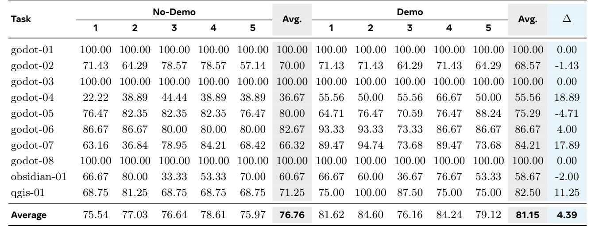
Table 4 GameDev performance with and without demonstrations on UI-Mate-27B. Results are evaluated over five runs. The two Avg. columns report the corresponding mean success rates, while ∆denotes the Demo - No-Demo difference in percentage points. Higher is better.表 4 UI-Mate-27B 在 GameDev 上有/无演示的性能。结果为五次运行评估；两个 Avg. 列为对应的平均成功率，∆ 为 Demo − No-Demo 的百分点差；越高越好。
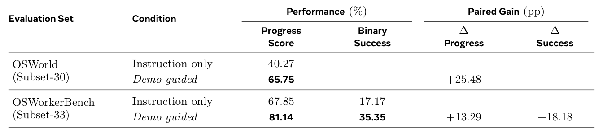
Table 5 Paired self-demo performance on the OSWorld-Subset30 and OSWorkerBench-Subset33 with UI-Mate-27B. Each target is evaluated under instruction-only and self-demo-guided conditions with identical initial states, budgets, and evaluators. The self-demo is a successful stronger-agent rollout of the same task. OSWorld-Subset results are averaged over five runs per target, while OSWorkerBench-Subset results are averaged over three runs per target. Paired gains are computed as self-demo guided minus instruction only and reported in percentage points (pp). Higher is better.表 5 UI-Mate-27B 在 OSWorld-Subset30 与 OSWorkerBench-Subset33 上的配对自演示性能。每个目标在仅指令与自演示引导两种条件下以相同初始状态、预算与评估器评估；自演示是同一任务成功完成的更强智能体 rollout。OSWorld-Subset 结果按每目标五次运行平均，OSWorkerBench-Subset 按三次运行平均；配对增益为自演示引导减仅指令，以百分点（pp）报告；越高越好。
Table 4表 4 UI-Mate-27B 在 GameDev 上有/无演示的性能。结果为五次运行评估；两个 Avg. 列为对应的平均成功率，∆ 为 Demo − No-Demo 的百分点差；越高越好。
| Task | No-Demo | Avg. | Demo | Avg. | ∆ | ||||||||
|---|---|---|---|---|---|---|---|---|---|---|---|---|---|
| 1 | 2 | 3 | 4 | 5 | 1 | 2 | 3 | 4 | 5 | ||||
| godot-01 | 100.00 | 100.00 | 100.00 | 100.00 | 100.00 | 100.00 | 100.00 | 100.00 | 100.00 | 100.00 | 100.00 | 100.00 | 0.00 |
| godot-02 | 71.43 | 64.29 | 78.57 | 78.57 | 57.14 | 70.00 | 71.43 | 71.43 | 64.29 | 71.43 | 64.29 | 68.57 | -1.43 |
| godot-03 | 100.00 | 100.00 | 100.00 | 100.00 | 100.00 | 100.00 | 100.00 | 100.00 | 100.00 | 100.00 | 100.00 | 100.00 | 0.00 |
| godot-04 | 22.22 | 38.89 | 44.44 | 38.89 | 38.89 | 36.67 | 55.56 | 50.00 | 55.56 | 66.67 | 50.00 | 55.56 | 18.89 |
| godot-05 | 76.47 | 82.35 | 82.35 | 82.35 | 76.47 | 80.00 | 64.71 | 76.47 | 70.59 | 76.47 | 88.24 | 75.29 | -4.71 |
| godot-06 | 86.67 | 86.67 | 80.00 | 80.00 | 80.00 | 82.67 | 93.33 | 93.33 | 73.33 | 86.67 | 86.67 | 86.67 | 4.00 |
| godot-07 | 63.16 | 36.84 | 78.95 | 84.21 | 68.42 | 66.32 | 89.47 | 94.74 | 73.68 | 89.47 | 73.68 | 84.21 | 17.89 |
| godot-08 | 100.00 | 100.00 | 100.00 | 100.00 | 100.00 | 100.00 | 100.00 | 100.00 | 100.00 | 100.00 | 100.00 | 100.00 | 0.00 |
| obsidian-01 | 66.67 | 80.00 | 33.33 | 53.33 | 70.00 | 60.67 | 66.67 | 60.00 | 36.67 | 76.67 | 53.33 | 58.67 | -2.00 |
| qgis-01 | 68.75 | 81.25 | 68.75 | 68.75 | 68.75 | 71.25 | 75.00 | 100.00 | 87.50 | 75.00 | 75.00 | 82.50 | 11.25 |
| Average | 75.54 | 77.03 | 76.64 | 78.61 | 75.97 | 76.76 | 81.62 | 84.60 | 76.16 | 84.24 | 79.12 | 81.15 | 4.39 |
Table 5表 5 UI-Mate-27B 在 OSWorld-Subset30 与 OSWorkerBench-Subset33 上的配对自演示性能。每个目标在仅指令与自演示引导两种条件下以相同初始状态、预算与评估器评估；自演示是同一任务成功完成的更强智能体 rollout。OSWorld-Subset 结果按每目标五次运行平均，OSWorkerBench-Subset 按三次运行平均；配对增益为自演示引导减仅指令，以百分点（pp）报告；越高越好。
| Evaluation Set | Condition | Performance | (%) | Paired Gain | (pp) |
|---|---|---|---|---|---|
| Progress | Binary | ∆ | ∆ | ||
| Score | Success | Progress | Success | ||
| OSWorld | Instruction only | 40.27 | – | – | – |
| (Subset-30) | Demo guided | 65.75 | – | +25.48 | – |
| OSWorkerBench | Instruction only | 67.85 | 17.17 | – | – |
| (Subset-33) | Demo guided | 81.14 | 35.35 | +13.29 | +18.18 |
Kimi K2.6 uses a 96K-token context window, with 32K tokens reserved for generation. It retains the eight most recent interaction steps verbatim and triggers context folding when estimated usage reaches 85% of the available input budget. UI-Mate-27B uses a 128K-token context window, with 64K tokens reserved for generation. It retains up to 40 recent textual steps and the five most recent screenshots. Because UI-Mate-27B produces substantially longer reasoning traces, folding is triggered earlier, at 60% of its input budget.
Kimi K2.6 使用 96K token 上下文窗口（32K 保留给生成），逐字保留最近八个交互步骤，并在估计用量达可用输入预算 85% 时触发上下文折叠。UI-Mate-27B 使用 128K token 上下文窗口（64K 保留给生成），保留至多 40 个近期文本步骤与最近五张截图；由于其推理轨迹显著更长，折叠在输入预算 60% 处即提前触发。
GameDev. As shown in Table 4, demonstration guidance improves the average score of UI-Mate-27B from 76.76% to 81.15%, a gain of 4.39 percentage points. The largest improvements occur on godot-04 (+18.89 points), godot-07 (+17.89), and qgis-01 (+11.25), all of which require long, structured sequences of fine- grained operations. Performance remains unchanged on the three tasks already solved perfectly without demonstrations. We observe a similar improvement with the stronger Kimi K2.6, whose results and trajectory lengths are reported in Appendix Tables 12 and 13.
GameDev。表 4 显示，演示引导将 UI-Mate-27B 平均分从 76.76% 提至 81.15%，增益 4.39 个百分点；提升最大者为 godot-04（+18.89 分）、godot-07（+17.89）与 qgis-01（+11.25），三者均需长而结构化的细粒度操作序列。在无演示即已满分的三个任务上性能不变。更强的 Kimi K2.6 亦呈类似提升，其结果与轨迹长度见附录表 12 与 13。
OSWorkerBench-Subset. Table 5 presents the self-demo results on the more demanding OSWorkerBench subset. Demonstrations improve the average normalized task score from 67.85% to 81.14%, a gain of 13.29 percentage points, with improvements on 28 of the 33 tasks. The number of tasks receiving a perfect score also increases from one to five. At the same time, the average trajectory length increases from 173.3 to 216.0 steps (Table 16). This increase does not simply indicate lower execution efficiency: OSWorkerBench tasks contain repetitive and branching subtasks, and agents without demonstrations frequently terminate after
OSWorkerBench-Subset。表 5 给出难度更高的 OSWorkerBench 子集上的 self-demo 结果：演示把平均归一化任务得分从 67.85% 提至 81.14%，增益 13.29 个百分点，33 个任务中 28 个提升；满分任务数从 1 个增至 5 个。同时，平均轨迹长度从 173.3 步增至 216.0 步（表 16）。这一增长并非意味着执行效率下降：OSWorkerBench 任务含重复与分支子任务，无演示的智能体常常在
completing only part of the requested workflow. Demonstrations help the agent identify and execute the remaining branches or repeated operations, producing longer but more complete trajectories.
只完成部分请求工作流后即终止；演示帮助智能体识别并执行剩余分支或重复操作，产生更长却更完整的轨迹。
OSWorld-Subset. On the OSWorld subset, Table 5 and Table 14 in Appendix shows a substantially larger improvement: demonstrations raise the average score from 40.27% to 65.75%, a gain of 25.48 percentage points. Performance improves on 18 of the 30 tasks and remains unchanged on eight. Four tasks that receive zero score without demonstrations: chrome-02, chrome-03, multi-02, and os-01, are solved perfectly in all demonstration- conditioned runs. These results show that demonstrations can provide critical application-specific procedures that the agent is unlikely to discover reliably from the instruction alone. Nevertheless, performance decreases on four tasks, suggesting that demonstration guidance can be harmful when the demonstrated procedure is misapplied or conflicts with the current interface state.
OSWorld-Subset。在 OSWorld 子集上，表 5 与附录表 14 显示出大幅得多的改进：演示把平均分从 40.27% 提至 65.75%，增益 25.48 个百分点；30 个任务中 18 个提升、8 个持平。无演示时得零分的四个任务（chrome-02、chrome-03、multi-02、os-01）在全部演示条件运行中均被完美解决。这些结果表明，演示能提供智能体难以仅凭指令可靠发现的关键应用特定流程。但也有四个任务性能下降——当演示流程被误用或与当前界面状态冲突时，演示引导可能产生负面影响。
We present two representative cases illustrating demo-in-the-loop execution: one from our GameDev benchmark
我们给出两个 demo-in-the-loop 执行的代表性案例：一个来自 GameDev 基准，
and one adapted from OSWorld2 [36]. For the latter visa-application case, we remove the requirement to invoke ask_user.
另一个改编自 OSWorld2 [36]。对后一签证申请案例，我们移除了调用 ask_user 的要求。
GameDev-Godot As illustrated in Fig. 11, the task requires configuring which bullet a game character should fire. The no-demonstration agent correctly identified the bullet file, but attached it to a character instance in the current game level rather than to the reusable character template (Fig. 11(c)). Because both operations look nearly identical in the interface, the agent incorrectly considered the task complete. The demonstration showed not only which file to select, but also that the reusable character template should be opened, modified, and checked for a visible confirmation icon (Fig. 11(a)). Consequently, the demo-conditioned agent followed the demonstrated procedure and modified the correct underlying object (Fig. 11(b)), whereas the no-demonstration agent performed an apparently correct operation in the wrong context. This difference is confirmed by the final artifact evaluation: the demo-conditioned run passed the player-bullet-reference check, while the no-demonstration run failed it.
GameDev-Godot。如图 11 所示，任务要求配置游戏角色应发射的子弹。无演示智能体正确识别了子弹文件，却将其附加到当前关卡的角色实例而非可复用角色模板上（图 11(c)）；两种操作在界面上几乎一模一样，智能体遂误判任务完成。演示不仅展示了应选哪个文件，还展示了应打开可复用角色模板、修改并检查可见确认图标（图 11(a)）。因此演示条件智能体遵循演示流程修改了正确的底层对象（图 11(b)），无演示智能体则在错误上下文中执行了看似正确的操作。最终产物评估证实了这一差异：演示条件运行通过玩家子弹引用检查，无演示运行未通过。
OSWorld2-Visa Application As illustrated in Fig. 12, the task [36] requires reading the supporting PDF documents and completing a DS-2019 application with consistent form values and financial evidence. The no-demonstration agent attempted to enlarge the document view, but did not adequately reposition the viewport to expose the relevant fields (Fig. 12(c)). This resulted in incorrect visual/OCR readings and, consequently, incorrect form values and document selection. The demonstration showed not only which documents to inspect, but also that the PDF viewer should be maximized, the viewport should be adjusted to locate the critical fields, and the extracted values should be cross-checked before submission (Fig. 12(a)). Consequently, the demo-conditioned agent correctly identified the $18,000 funding requirement, recognized that the initial $12,000 certificate was insufficient, located the alternative $18,000 certificate, and submitted consistent evidence (Fig. 12(b)). This difference is confirmed by the final artifact evaluation: the demo- conditioned run passed all JSON checks and uploaded the correct financial certificate, achieving a score of 99.5%, whereas the no-demonstration run submitted incorrect field values and the insufficient certificate, achieving only 24.5%.
OSWorld2-Visa Application。如图 12 所示，任务 [36] 要求阅读支撑 PDF 文档，以一致的表单取值与财务证明完成 DS-2019 申请。无演示智能体试图放大文档视图，却未充分重新定位视口以露出相关字段（图 12(c)），导致错误的视觉/OCR 读取，进而导致错误的表单取值与文档选择。演示不仅展示应检查哪些文档，还展示应最大化 PDF 查看器、调整视口定位关键字段，并在提交前交叉核对提取值（图 12(a)）。于是演示条件智能体正确识别出 18,000 美元的资金要求，判断初始 12,000 美元证明不足，找到替代的 18,000 美元证明并提交一致证据（图 12(b)）。最终产物评估证实差异：演示条件运行通过全部 JSON 检查、上传正确财务证明，得分 99.5%；无演示运行提交错误字段值与不足证明，仅得 24.5%。
7.4Findings7.4 发现
Task difficulty lives in the environment, not the instruction. The same instruction can be trivial over a synthesized spreadsheet of a dozen uniform rows, but demands locating, disambiguating, and cross-checking content when the workbook is a real one with multiple sheets, merged headers, and columns irrelevant to the task. Concretely, for office-related tasks, retrieved real resources are roughly 6× larger than their synthesized counterparts, and trajectories over them average 58.4 steps against 38.5, a 51.7% increase. Environment realism, rather than instruction complexity alone, is therefore the primary target when we construct training data.
任务难度蕴藏于环境而非指令。同一条指令，在只有十几行整齐数据的合成电子表格上易如反掌；而当工作簿是含多工作表、合并表头及任务无关列的真实文件时，则要求定位、消歧与交叉核对内容。具体而言，办公相关任务中检索到的真实资源约为合成资源的 6 倍，其上轨迹平均 58.4 步对 38.5 步，增加 51.7%。因此，构建训练数据时的首要目标是环境真实性，而非指令复杂性本身。
Capability-aware allocation matters more than raw data volume. As data production scales, uniform sampling
能力感知的分配比原始数据量更重要。数据生产规模化后，均匀采样
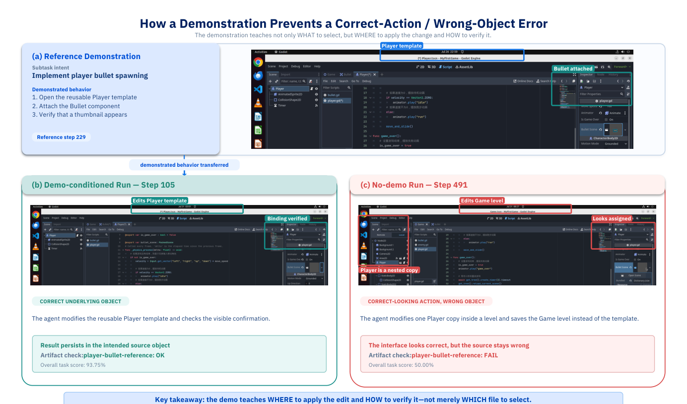
Figure 11 Demonstrations help the agent modify the correct underlying object. The reference demonstration and demo- conditioned run modify the reusable Player template, whereas the no-demo run modifies only one Player copy inside a game level. The two operations look similar in the interface, but only the former persists in the intended source object.图 11 演示帮助智能体修改正确的底层对象。参照演示与演示条件运行修改的是可复用的 Player 模板，而无演示运行只修改了某游戏关卡内的一个 Player 副本。两种操作在界面上看似相同，但只有前者会持久化到预期的源对象。
increasingly revisits well-covered capabilities while leaving long-tail gaps obscured by application-level statistics. Thus, we route each instruction through the capability tree of Section 3.4 to a fine-grained operation and allocate data according to the coverage of the capability. This tree-guided rebalancing expands capability coverage, with the added coverage concentrated primarily in Multi-App workflows, and improves Multi-App performance by 15.5 pp over training without capability-aware sampling. Gains are also larger on tasks whose capabilities were previously underrepresented. Although this evidence is correlational rather than a controlled isolation of capability tagging, it suggests that the tree provides an effective interface for diagnosing long-tail gaps and grouping superficially different tasks by shared operational structure. We therefore budget data by capability coverage rather than by raw trajectory count or application.
会越来越多地重访覆盖良好的能力，而让被应用级统计掩盖的长尾缺口继续隐蔽。为此，我们把每条指令沿第 3.4 节的能力树路由到细粒度操作，并按能力覆盖情况分配数据。这种树引导再平衡扩大了能力覆盖，新增覆盖集中于 Multi-App 工作流，使 Multi-App 性能较无能力感知采样提高 15.5 个百分点；在能力此前欠缺表示的任务上增益也更大。尽管这是相关性证据而非对能力标注的受控隔离，它表明能力树为诊断长尾缺口、按共享操作结构聚合表面不同的任务提供了有效接口。因此我们按能力覆盖而非原始轨迹数或应用来预算数据。
The hard part of a verifiable task is making its reward mean the instruction. The execution invariant of Equation 9 removes inconsistent tasks but cannot certify that a reward means what its instruction says: it only checks the reward against a single reference completion, which says nothing about the other solutions it should accept or the wrong ones it should reject. An LLM audit of evaluators that had passed this filter found roughly 18% still misaligned, with over-strict matching (40%), semantically vacuous assertions (23%), and checks applied to the wrong target (19%) as the leading modes. Auditing therefore belongs in the pipeline, where flagged tasks enter repair rather than discard, as this preserves the hard, environment-rich tasks most likely to be misjudged, while what is not recovered is not promoted. We treat reward validity, not artifact checkability, as the binding constraint on synthesizing verifiable tasks at scale.
可验证任务的难点在于让奖励真正承载指令的语义。公式 9 的执行不变式能剔除不一致的任务，却无法证明奖励与指令含义一致：它仅以单一参考完成校验奖励，对应当接受的其他解法、应当拒绝的错误解法均无保证。对通过该过滤的评估器做 LLM 审计发现，约 18% 仍然错位，主要模式为过严匹配（40%）、语义空洞的断言（23%）与作用在错误目标上的检查（19%）。因此审计应内嵌于流水线：被标记任务进入修复而非丢弃——这保留了最易被误判、且环境信息丰富的困难任务，未能恢复者不予晋升。我们把奖励有效性而非产物可检查性，作为规模化合成可验证任务的约束性条件。
Historical reasoning improves inference but undermines exploration during RL rollouts. Historical reasoning— preserving the reasoning traces from preceding interaction steps—consistently improves inference-time per- formance. Activating historical reasoning exclusively at evaluation yields gains of +3.43 pp for the SFT model and +2.27 pp for the RL model trained without historical reasoning. When historical reasoning is additionally incorporated during SFT, it yields a further improvement of approximately +2.85 pp on
历史推理改善推理却削弱 RL rollout 的探索。历史推理——即保留前序交互步骤的推理痕迹——持续改善推理时性能：仅在评估时激活历史推理，SFT 模型增益 +3.43 个百分点，未用历史推理训练的 RL 模型增益 +2.27 个百分点。若 SFT 中也纳入历史推理，则在
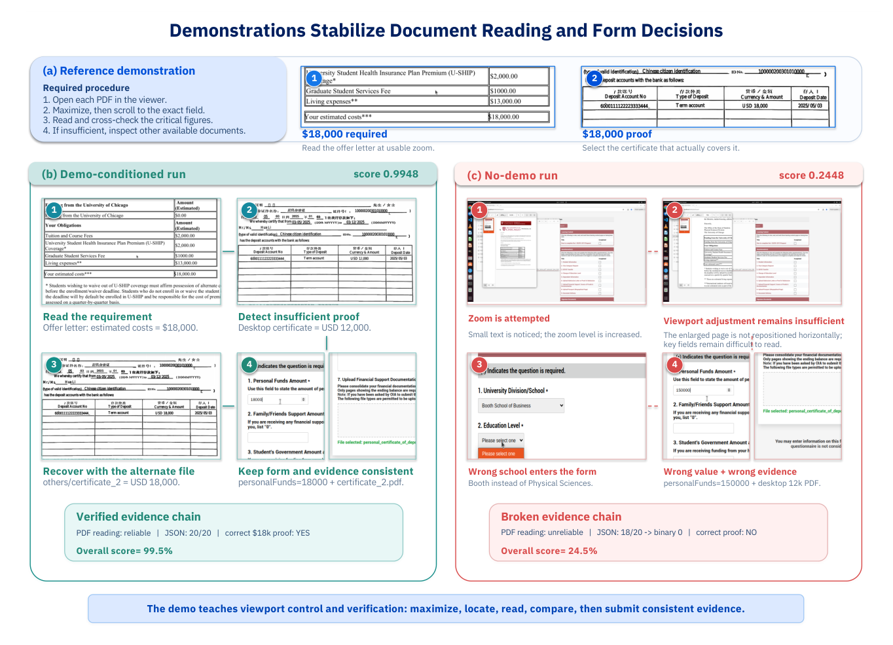
Figure 12 Demonstrations teach reliable viewport control for document-grounded reasoning. The reference demonstration and demo-conditioned run maximize the PDF viewer, locate and cross-check the critical values, and submit consistent form entries and supporting evidence. The no-demo run enlarges the document view without adequately repositioning the viewport, leading to incorrect visual/OCR readings and erroneous downstream decisions.图 12 演示教会智能体可靠的视口控制以支撑基于文档的推理。参照演示与演示条件运行最大化 PDF 查看器、定位并交叉核对关键数值，提交一致的表单项与佐证；无演示运行放大文档视图却未充分调整视口位置，导致视觉/OCR 误读与错误的下游决策。
long-horizon, cross-application tasks, but with negligible gains on shorter and simpler tasks. Qualitative analysis attributes these improvements to more robust cross-application state tracking, consistent preservation of entity chains across Greenhouse, Gmail, Calendar, Slack, HubSpot, and QuickBooks, and stronger constraint adherence and source grounding in table aggregation and cross-application referencing. Historical reasoning also facilitates recovery from intermediate execution errors, reducing premature termination with DONE.
长程跨应用任务上带来约 +2.85 个百分点的进一步增益，但在更短更简单的任务上增益可忽略。定性分析将改进归因于：更稳健的跨应用状态跟踪、实体链在 Greenhouse、Gmail、Calendar、Slack、HubSpot 与 QuickBooks 之间的一致保持，以及表格聚合与跨应用引用中更强的约束遵循与来源锚定。历史推理还有助于从中间执行错误中恢复，减少以 DONE 过早终止。
In contrast, incorporating historical reasoning into RL training affects the policy’s exploration dynamics. Conditioning each decision on accumulated historical reasoning traces increases predictive confidence and accelerates the reduction of policy entropy. Empirically, this configuration exhibits signatures of entropy collapse, thereby restricting exploration during RL rollouts and resulting in lower evaluation performance. These results highlight the need for a more effective strategy to integrate historical reasoning into RL, one that preserves policy diversity without compromising its advantages for long-horizon state tracking.
相比之下，把历史推理纳入 RL 训练会改变策略的探索动态：以累积的历史推理痕迹为每个决策条件化，会提高预测置信度并加速策略熵下降。经验上该配置呈现熵坍缩的特征，限制了 RL rollout 中的探索，导致评估性能更低。这些结果凸显：需要更有效的策略将历史推理整合进 RL——既保留策略多样性，又不牺牲其在长程状态跟踪上的优势。
Adaptive curriculum sampling and process credit improve training efficiency rather than final performance. Adaptive curriculum sampling and PCM do not consistently improve final task success over standard outcome-only training. Their main benefit is faster convergence: models using these mechanisms often reach comparable performance in fewer than half as many optimization updates. Adaptive curriculum sampling prioritizes weak domains, while PCM concentrates verifier-derived credit on decisions most relevant to success or failure. These mechanisms therefore improve how efficiently a fixed training corpus is learned, whereas further gains remain primarily constrained by data coverage and quality.
自适应课程采样与过程信用改善训练效率而非最终性能。相较标准仅结果训练，自适应课程采样与 PCM 并不总是提升最终任务成功率；其主要收益是更快收敛——使用这些机制的模型常以不到一半的优化更新达到相当性能。自适应课程采样优先薄弱域，PCM 把验证器导出的信用集中于与成败最相关的决策。这些机制改善的是固定训练语料的学习效率；进一步增益仍主要受数据覆盖与质量制约。
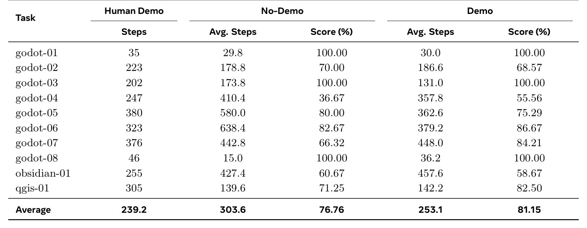
Table 6 Trajectory lengths and task scores on GameDev on UI-Mate-27B. Human Demo reports the number of steps in the human demonstration, while No-Demo and Demo report the average model steps and normalized task scores over five runs. Tasks requiring longer trajectories are generally associated with lower scores.表 6 UI-Mate-27B 在 GameDev 上的轨迹长度与任务得分。Human Demo 为人类演示步数，No-Demo 与 Demo 为五次运行的平均模型步数与归一化任务得分；需要更长轨迹的任务通常得分更低。
Table 6表 6 UI-Mate-27B 在 GameDev 上的轨迹长度与任务得分。Human Demo 为人类演示步数，No-Demo 与 Demo 为五次运行的平均模型步数与归一化任务得分；需要更长轨迹的任务通常得分更低。
| Task | Human Demo | No-Demo | Demo | ||
|---|---|---|---|---|---|
| Steps | Avg. Steps | Score (%) | Avg. Steps | Score (%) | |
| godot-01 | 35 | 29.8 | 100.00 | 30.0 | 100.00 |
| godot-02 | 223 | 178.8 | 70.00 | 186.6 | 68.57 |
| godot-03 | 202 | 173.8 | 100.00 | 131.0 | 100.00 |
| godot-04 | 247 | 410.4 | 36.67 | 357.8 | 55.56 |
| godot-05 | 380 | 580.0 | 80.00 | 362.6 | 75.29 |
| godot-06 | 323 | 638.4 | 82.67 | 379.2 | 86.67 |
| godot-07 | 376 | 442.8 | 66.32 | 448.0 | 84.21 |
| godot-08 | 46 | 15.0 | 100.00 | 36.2 | 100.00 |
| obsidian-01 | 255 | 427.4 | 60.67 | 457.6 | 58.67 |
| qgis-01 | 305 | 139.6 | 71.25 | 142.2 | 82.50 |
| Average | 239.2 | 303.6 | 76.76 | 253.1 | 81.15 |
Smaller models benefit from explicit reasoning and staged, verifier-grounded training. Model scale changes the training recipe that works best. During SFT, the 9B model benefits from training on trajectories with explicit reasoning, whereas the 27B model remains effective when trained on a mixture of trajectories with and without reasoning. During RL, the 9B model is more sensitive to evaluator correctness: incomplete success criteria or permissive reward proxies more readily reinforce partial or unintended behaviors. Finally, the 9B model benefits from revisiting the same tasks across multiple training stages. These observations suggest that smaller GUI agents require more explicit reasoning supervision, more carefully validated evaluators, and repeated on-policy exposure to the same task distribution.
较小模型受益于显式推理与分阶段、基于验证器的训练。模型规模会改变最有效的训练配方：SFT 阶段，9B 模型受益于用带显式推理的轨迹训练，27B 模型则用带与不带推理的混合轨迹训练依然有效；RL 阶段，9B 模型对评估器正确性更敏感——不完整的成功判据或宽松的奖励代理更容易强化部分或不期望的行为。此外，9B 模型受益于在多个训练阶段重访同一任务。这些观察表明，较小的 GUI 智能体需要更显式的推理监督、更严格验证的评估器，以及对同一任务分布的反复 on-policy 暴露。
Subtask-level demonstrations keep the model on track. Providing the full task demonstration at once can confuse the model about its current progress, causing it to follow steps from later stages. We instead show only the active subtask in detail and summarize the others in a progress checklist. This keeps the model focused while preserving the overall workflow (see Figure 6).
子任务级演示让模型不跑偏。一次性提供完整任务演示会让模型混淆当前进度，从而执行后续阶段的步骤。我们改为只详细展示活动子任务，其余子任务以进度清单摘要呈现——既让模型保持专注，又保留整体工作流（见图 6）。
Less guidance helps training; More guidance helps inference. During training, extracting key actions from the current subtask forces the model to infer omitted intermediate steps from the screenshot rather than copy the demonstration workflow. Once trained, the model treats the demonstration as a fallible reference and resolves conflicts using the live screenshot. Key-action extraction is therefore unnecessary at inference; providing the full sequence is simpler, more informative, and empirically better.
训练宜少引导，推理宜多引导。训练时从当前子任务抽取关键动作，迫使模型从截图推断省略的中间步骤，而非照抄演示工作流；训练完成后，模型将演示视为可能有误的参考，以实时截图解决冲突。因此推理时无需关键动作抽取——直接提供完整序列更简单、信息更充分，经验效果也更好。
Longer trajectories are associated with greater task difficulty. Table 6 shows that longer tasks tend to score lower on GameDev: godot-01 and godot-08 are finished in 29.8 and 15.0 steps at 100%, whereas every task needing more than 400 steps stays below 83%. The length of the human demonstration is a cleaner predictor of the steps the model needs (rank correlation +0.83), suggesting that trajectory length mainly reflects how much work a task inherently requires.
轨迹越长，任务越难。表 6 显示，GameDev 上较长的任务往往得分更低：godot-01 与 godot-08 分别以 29.8 步、15.0 步完成且得分 100%，而需要超过 400 步的任务得分均低于 83%。人类演示长度是模型所需步数更干净的预测指标（秩相关 +0.83），说明轨迹长度主要反映任务固有工作量。
Demonstrations improve execution efficiency. Demonstrations shorten the average trajectory from 303.6 to 253.1 steps on GameDev, a reduction of 50.5 steps or 16.6%, while raising the average score from 76.76% to 81.15% (Tables 4 and 6), so shorter runs do not sacrifice completion. The saving is concentrated on the five tasks that exceed 400 steps without demonstrations, where the average falls from 499.8 to 401.0 steps, indicating that demonstrations mainly remove exploratory detours on long-horizon tasks.
演示提升执行效率。演示把 GameDev 平均轨迹从 303.6 步缩短至 253.1 步，减少 50.5 步（16.6%），同时把平均分从 76.76% 提至 81.15%（表 4 与表 6）——更短的运行并未牺牲完成度。节省集中于无演示时超过 400 步的五个任务：均值从 499.8 步降至 401.0 步，表明演示主要消除的是长程任务上的探索性绕路。
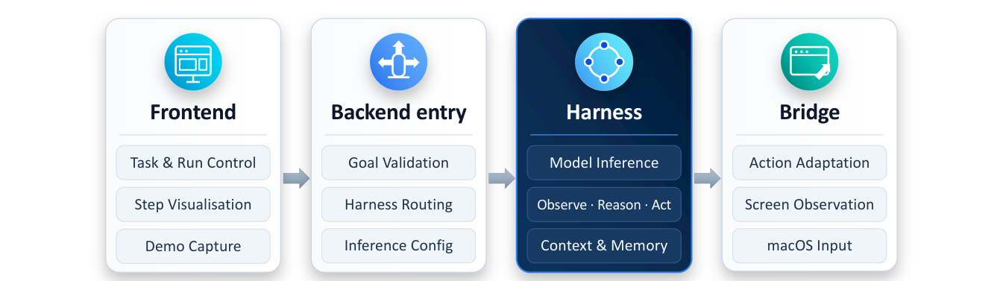
Figure 13 UI-Mate App’s four-layer architecture: the frontend controls runs and demonstrations, the backend configures requests, the harness drives the agent loop, and the bridge provides macOS observation and input.图 13 UI-Mate App 四层架构：前端控制运行与演示，后端配置请求，运行框架驱动智能体循环，桥接层提供 macOS 观测与输入。
8UI-Mate App8 UI-Mate App
8.1Overview8.1 概览
UI-Mate App turns a configured VLM into a computer-use agent (CUA) on the user’s machine. Given a task, it observes the screen and operates applications through the mouse and keyboard. It also records demonstrations for in-context learning in the same environment. Because it drives the desktop directly, installed applications require no plugin, API or scripting interface.
UI-Mate App 把配置好的 VLM 变成用户机器上的计算机使用智能体（CUA）：给定任务，它观察屏幕并通过鼠标键盘操作应用；也可在同一环境中录制用于上下文学习的演示。由于直接驱动桌面，已安装应用无需插件、API 或脚本接口。
Design. Two decisions define the architecture. First, the application contains no model: it sends OpenAI- format requests to a configured endpoint, allowing one build to support every arrangement in §8.4. Second, the agent logic is separate: an API-connected harness handles prompting, action selection and completion
设计。两个决策定义了架构：其一，应用本身不含模型——它向配置端点发送 OpenAI 格式请求，单一构建即可支持 §8.4 的全部部署方式；其二，智能体逻辑独立——由连接 API 的 harness 处理提示、动作选择与完成
judgement. Models and agent logic can thus change independently of desktop control, demonstration capture and execution visibility.
判定。模型与智能体逻辑因而可独立于桌面控制、演示捕获与执行可见性单独更换。
Architecture. Figure 13 shows four layers: the frontend controls and visualizes runs and records demonstrations; the backend entry validates and configures requests; the harness selects actions; and the platform-specific bridge executes them. The same agent can therefore run in offline evaluation or a virtual machine. A stream of
架构。图 13 显示四个层次：前端控制并可视化运行、录制演示；后端入口验证并配置请求；harness 选择动作；平台专用桥接层执行动作。同一智能体因此既可跑离线评估，也可跑虚拟机。一条
JSON-line events connects the frontend and backend processes, enabling live updates and mid-run commands. On macOS the bridge is a native Swift helper; Linux uses pyautogui, and Windows support is in progress.
JSON 行事件流连接前端与后端进程，支持实时更新与运行中指令。macOS 上桥接层为原生 Swift 助手，Linux 使用 pyautogui，Windows 支持开发中。
8.2General CUA8.2 通用 CUA
A general run executes a natural-language goal without a demonstration. The trace in Figure 14(a) summarizes each step and expands to its observation, reasoning, action and latency. Users can pause, resume or stop the run and send a message for the next step. The application marks the controlled display and highlights actions while excluding its own windows from captures. Each run is saved incrementally as a JSONL trajectory of screenshots, model inputs and actions, exportable as training data or a benchmark task.
通用运行在没有演示的情况下执行自然语言目标。图 14(a) 的轨迹逐条摘要各步骤，并可展开查看其观测、推理、动作与延迟。用户可暂停、恢复或停止运行，也可为下一步发送消息。应用标记受控显示器，并在高亮动作的同时把自身窗口排除在截屏之外。每次运行以含截图、模型输入与动作的 JSONL 轨迹增量保存，可导出为训练数据或基准任务。
Step cycle. In each step, the application calls the model on the current screen, extracts and executes its action, waits for the interface to settle, then captures the observation for the next step. Engines such as UI-Mate and Kimi [29] differ in prompts and history policy but share the action space and execution path.
步骤循环。每一步，应用对当前屏幕调用模型，抽取并执行其动作，等待界面稳定，再捕获下一步观测。UI-Mate 与 Kimi [29] 等引擎在提示与历史策略上各异，但共享动作空间与执行路径。
Action adaptation. The bridge grounds platform-neutral, pyautogui-style actions in the current desktop. It maps pointer locations from a 1,000-unit image grid through capture downscaling, Retina scaling and display origin into global coordinates. The macOS Accessibility (AX) API then identifies the element: actionable elements are invoked directly, tolerating small coordinate errors; otherwise the bridge simulates a click, supporting canvases and interfaces absent from AX. It also maps ctrl to cmd outside terminals.
动作适配。桥接层把平台中立、pyautogui 风格的动作落地到当前桌面：经截屏缩放、Retina 缩放与显示器原点换算，把指针位置从 1,000 单位图像网格映射到全局坐标。macOS 辅助功能（AX）API 继而识别元素——可操作元素被直接调用并容忍小坐标误差；否则桥接层模拟点击，以支持 AX 覆盖之外的画布与界面。终端之外它还将 ctrl 映射为 cmd。
Per-step latency. Figure 14(b) profiles a run on the latency-tuned 27B endpoint of §8.4. The median step takes 3030 ms: 2108 ms for the model call and 910 ms elsewhere. Prefill and decoding account for roughly
每步延迟。图 14(b) 剖析了 §8.4 中延迟优化的 27B 端点上的一次运行：单步中位数 3030 ms，其中模型调用 2108 ms、其余 910 ms。预填充与解码约占调用的
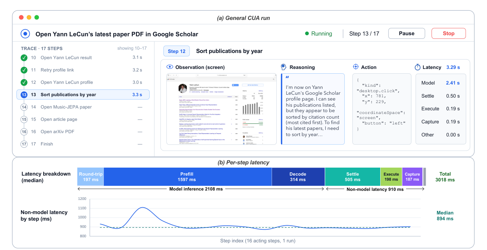
Figure 14 UI-Mate interface and runtime latency. (a) Execution trace with an expanded step. (b) Per-step latency and breakdown in a real CUA run.图 14 UI-Mate 界面与运行时延。(a) 展开某一步的执行轨迹；(b) 真实 CUA 运行中的逐步时延及其构成。
76% and 15% of the call; action settling, execution and screen capture dominate the remainder. Halving all non-model costs would reduce the median by only about 15%. UI-Mate therefore exposes image history, resolution, prompt-prefix reuse and reasoning-output controls that target prefill or decoding.
76% 与 15%；动作稳定、执行与截屏占据其余。即便把所有非模型成本减半，中位数也只降约 15%。因此 UI-Mate 暴露图像历史、分辨率、提示前缀复用与推理输出等控制项，分别针对预填充或解码环节。
8.3Demo CUA8.3 演示 CUA
Many desktop workflows involve internal tools, personal conventions or required action orders that a model does not know. A user can demonstrate such a workflow once: an offline stage converts the recording into a saved workflow, which then guides autonomous runs online.
许多桌面工作流涉及模型无从知晓的内部工具、个人惯例或必需的操作顺序。用户只需演示一次：离线阶段把录制转换为保存的工作流，在线阶段再以之引导自主运行。
Recording and Demo2Workflow. A native macOS recorder saves video and raw input, groups related events into actions, and extracts frames at and after each action to show its target and effect. Demo2Workflow then uses a VLM to describe each action from its frame pair and recorded facts, groups the steps into named subtasks, and lets the user revise the result. Manual edits remain separate from model output so neither overwrites the other.
录制与 Demo2Workflow。原生 macOS 录制器保存视频与原始输入，把相关事件聚合为动作，并在每个动作处及其后抽取帧以呈现其目标与效果。Demo2Workflow 随后用 VLM 依帧对与录制事实描述每个动作，把步骤归组为命名子任务，并允许用户修订结果。人工编辑与模型输出彼此分离，互不覆盖。
Guided runs. Processed workflows form a personal library from which the user explicitly attaches one to a task. A guided run uses the general loop but also provides each step with workflow progress and the recorded steps of the current subtask. The agent reports subtask completion, advancing both the workflow and its displayed progress.
引导运行。处理后的工作流汇成个人库，用户从中显式选取一个附加到任务。引导运行沿用通用循环，同时为每一步提供工作流进度与当前子任务的已录制步骤。智能体报告子任务完成，推动工作流及其显示进度向前。
8.4Deployment8.4 部署
Model serving is separate from client installation. For each agent engine, the user configures the base URL and model name of an OpenAI-compatible endpoint, allowing one installation to switch among the arrangements in Table 7 without rebuilding.
模型服务与客户端安装相互独立。对每个智能体引擎，用户配置 OpenAI 兼容端点的基础 URL 与模型名，同一安装即可在表 7 的各种部署方式间切换，无需重建。
Accelerated self-hosted serving. The timings in §8.2 use QuaRot-style W8A8 quantization [37] and speculative decoding with a DFlash-trained draft model [38]. Together they reduce a step from 3–5 s to 2–3 s on the same machine without application changes.
加速的自托管服务。§8.2 的计时基于 QuaRot 风格 W8A8 量化 [37] 与 DFlash 训练的草稿模型投机解码 [38]：两者共同把同一机器上的单步时间从 3–5 s 降至 2–3 s，应用无需任何改动。
On-device serving. On a single Mac, visual encoding and prefill dominate. We use a six-bit 9B model of
端侧服务。在单台 Mac 上，视觉编码与预填充占主导。我们采用约 7 GB 的六比特 9B 模型
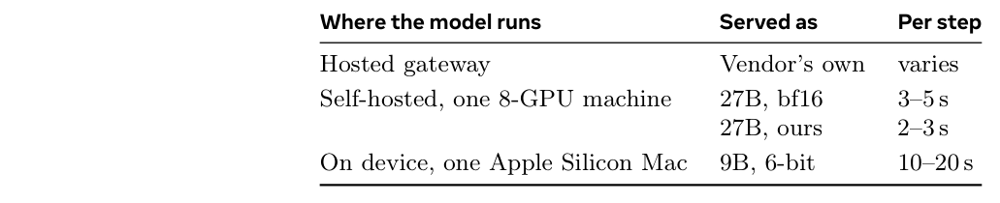
Table 7 Serving arrangements and approximate step times on our devices.表 7 我们设备上的服务部署方式与近似单步耗时。
Table 7表 7 我们设备上的服务部署方式与近似单步耗时。
| Where the model runs | Served as | Per step |
|---|---|---|
| Hosted gateway | Vendor’s own | varies |
| Self-hosted, one 8-GPU machine | 27B, bf16 | 3–5 s |
| 27B, ours | 2–3 s | |
| On device, one Apple Silicon Mac | 9B, 6-bit | 10–20 s |
roughly 7 GB, reduce captures from 1080p to 720p, and patch mlx-vlm to reuse prompt prefixes and cached image features. These changes reduce typical step time from about 45 s to 10–20 s.
，把截屏从 1080p 降至 720p，并修补 mlx-vlm 以复用提示前缀与缓存图像特征。这些改动把典型单步时间从约 45 s 降至 10–20 s。
Client distribution. The signed and notarized disk image includes the native helper and Python runtime. After installation, UI-Mate requests the macOS Screen Recording and Accessibility permissions needed to observe and control the desktop.
客户端分发。经签名与公证的磁盘映像内置原生助手与 Python 运行时。安装后，UI-Mate 会请求观察与控制桌面所需的 macOS 屏幕录制及辅助功能权限。
9Related Work9 相关工作
Computer Use Agents. Computer-use agents have shifted from agentic scaffolds that compose planning, grounding, and reflection modules around general-purpose vision–language models [39–41] toward native models that internalize perception, grounding, and action end-to-end [42–47]. Native foundation agents such as UI-TARS [4], OpenCUA [1], ScaleCUA [2], Mobile-Agent-v3 [48], UI-Venus-1.5 [49], and MAI-UI/Qwen-UI- Agent [5, 50] train on large trajectory corpora and increasingly close the loop with environment interaction: online and curriculum reinforcement learning [25, 27, 51], multi-turn RL at scale [4], EvoCUA’s self-evolution from scalable synthetic experience [6], scalable environment construction [8], and verifiable task synthesis with efficient online RL [35]. Yet the resulting corpora drift toward what is cheap to instantiate, and most standard training and evaluation protocols condition primarily on task instructions. UI-Mate advances both fronts: its closed-loop data engine budgets generation by a hierarchical capability tree and promotes only audited task–verifier bundles to RL; and it consumes in-context multimodal demonstrations, distilled from a single human recording into a subtask-level workflow that is followed where the user’s steps carry procedural intent and overridden by the live screen where the target task diverges, targeting forms of prompt ambiguity and execution unreliability that scaling instruction-only training alone does not directly address.
计算机使用智能体。计算机使用智能体已从「围绕通用视觉-语言模型组合规划、定位与反思模块」的智能体脚手架 [39–41]，转向端到端内化感知、定位与动作的原生模型 [42–47]。UI-TARS [4]、OpenCUA [1]、ScaleCUA [2]、Mobile-Agent-v3 [48]、UI-Venus-1.5 [49] 与 MAI-UI/Qwen-UI-Agent [5, 50] 等原生基础智能体在大规模轨迹语料上训练，并日益与环境交互形成闭环：在线与课程强化学习 [25, 27, 51]、大规模多轮 RL [4]、EvoCUA 从可扩展合成经验中的自我演化 [6]、可扩展环境构建 [8]，以及结合高效在线 RL 的可验证任务合成 [35]。然而所得语料偏向易于实例化的内容，且多数标准训练与评估协议仅以任务指令为条件。UI-Mate 在两条战线上推进：闭环数据引擎按层次化能力树预算生成、只把通过审计的任务-验证器组合送入 RL；同时消费上下文内多模态演示——从单段人类录制蒸馏为子任务级工作流，用户步骤承载流程意图处遵循之、目标任务偏离处由实时屏幕推翻之——直指仅靠指令训练扩展无法直接应对的提示含糊与执行不可靠问题。
Computer Use Benchmarks. GUI-agent evaluation spans static grounding suites [52], offline web-navigation benchmarks [53], and interactive environments with executable, state-based verification. These environments cover the web [54, 55], mobile devices [56, 57], and desktop operating systems, anchored by OSWorld [10] and WindowsAgentArena [11]. Recent benchmarks further raise realism and interaction horizon: OSWorld 2.0 [58]
计算机使用基准。GUI 智能体评估涵盖静态定位套件 [52]、离线网页导航基准 [53]，以及带可执行、基于状态验证的交互环境；这些环境覆盖网页 [54, 55]、移动设备 [56, 57] 与桌面操作系统，以 OSWorld [10] 与 WindowsAgentArena [11] 为锚。近期基准进一步提升真实性与交互跨度：OSWorld 2.0 [58]
evaluates 108 hour-scale workflows with dynamic mid-task events, WeaveBench [59] forces interleaved GUI–CLI execution under trajectory-level auditing, ScienceBoard [60] targets scientific workflows, and office-oriented suites assess professional deliverables across business applications [61, 62]. Most standard protocols nevertheless specify target tasks through instructions and environment-provided artifacts, without explicitly controlling demonstration availability for the same target. Even tutorial-following tasks [58] test adherence to materials supplied by the environment rather than acquisition of a user’s own procedure. OSWorkerBench addresses this gap with 100 long-horizon office tasks across 41 applications, requirement-level Long-Memory and Multi-App subsets, and validated checkpoint evaluators. It separates two demonstration-guided settings: self-demos from successful strong-agent rollouts of the same tasks, and variant-demos from multimodal human demonstrations of related but non-identical tasks. Both support controlled comparison with instruction-only execution under the same target instruction, environment, budget, and verifier. This controlled protocol measures demonstration-guided procedural generalization and task completion.
评估 108 个小时级工作流并注入动态任务中事件；WeaveBench [59] 在轨迹级审计下强制 GUI-CLI 交错执行；ScienceBoard [60] 面向科学工作流；面向办公的套件评估跨商业应用的专业交付物 [61, 62]。然而多数标准协议仅以指令与环境提供的产物指定目标任务，并不为同一目标显式控制演示可用性；即使是遵循教程的任务 [58]，检验的也是对环境所供材料的遵循，而非对用户自身流程的习得。OSWorkerBench 以 100 个跨 41 应用长程办公任务、需求级 Long-Memory 与 Multi-App 子集、经验证的检查点评估器填补这一空白：它区分两种演示引导设置——同任务成功强智能体 rollout 的 self-demo 与相关但不相同任务多模态人类演示的 variant-demo，两者都支持在同一目标指令、环境、预算与验证器下与纯指令执行做受控比较。该受控协议度量演示引导的流程泛化与任务完成。
Demonstration-Guided Computer Use. Traditional robotic process automation (RPA) records or scripts fixed sequences of interface operations, providing efficient and deterministic execution for repetitive workflows but remaining brittle to changes in task logic or UI state [63]. Recent work instead exposes procedural knowledge as reusable agent skills. CUA-Skill represents human-authored desktop procedures with parameterized execution and composition graphs [64], while MMSkills augments textual procedures with state cards and
演示引导的计算机使用。传统机器人流程自动化（RPA）录制或脚本化固定的界面操作序列，为重复性工作流提供高效确定的执行，但对任务逻辑或 UI 状态变化依然脆弱 [63]。近期工作转而把流程知识封装为可复用智能体技能：CUA-Skill 以参数化执行与组合图表示人工编写的桌面流程 [64]；MMSkills 以状态卡与
visual keyframes so that agents can recognize when a skill applies and verify its progress [65]. Most closely related, ShowUI-Aloha converts a human screen recording into a semantic action trace that guides planning and execution [9]; its demonstrated transfer primarily reuses one taught procedure across task instances sharing the same workflow logic. In contrast, UI-Mate distills either a human recording or an agent rollout into subtask-level procedural intent, selectively follows, skips, or adapts demonstrated steps, and grounds every decision in the live interface, thereby enabling demonstration-guided procedural generalization rather than workflow replay.
视觉关键帧增强文本流程，使智能体得以识别技能何时适用并验证其进展 [65]。与本工作关系最近的是 ShowUI-Aloha：它把人类屏幕录制转换为语义动作轨迹以引导规划与执行 [9]，其演示迁移主要是在共享同一工作流逻辑的任务实例间复用一段被教授的流程。相比之下，UI-Mate 把人类录制或智能体 rollout 蒸馏为子任务级流程意图，有选择地遵循、跳过或调整演示步骤，并把每个决策锚定于实时界面，从而实现演示引导的流程泛化，而非工作流回放。
10Discussion and Future Work10 讨论与未来工作
Verifier-Grounded Progress Credit. PCM’s efficiency gains motivate verifier-grounded progress estimation from its milestone structure. A task-conditioned model could reward milestone completion and recovery, penalize regression, and retain signal in homogeneous-outcome groups. The environment would remain authoritative: a terminal residual would keep total process reward equal to the executable outcome. Deterministic checks would score verifiable milestones, with learned judges used only for uncertain states. Neutral spans could remain as context but be masked from actor loss, shortening the optimization horizon without losing causal evidence.
基于验证器的进展信用。PCM 的效率收益启发我们沿其里程碑结构做基于验证器的进展估计：一个以任务为条件的模型可奖励里程碑的完成与恢复、惩罚倒退，并在结果同质的组内保留信号。环境仍保有权威性——终端残差项使总过程奖励等于可执行结果。确定性检查为可验证里程碑打分，学习型裁判仅用于不确定状态；中性片段可保留为上下文但从 actor 损失中掩蔽，在不丢失因果证据的前提下缩短优化视野。
Beyond Self-Demo: the Variant-Demo Setting. All quantitative DemoCUA results in this report use the self-demo setting: the demonstration and evaluation target are the same task. On OSWorker-Subset, this means 33 targets are paired with successful same-task rollouts from a stronger GUI agent. These results establish the value of execution guidance, but should not be interpreted as procedural transfer across task variants.
超越 Self-Demo：variant-demo 设定。本报告所有定量的 DemoCUA 结果均采用 self-demo 设定——演示与评估目标是同一任务。在 OSWorker-Subset 上，这意味着 33 个目标与更强 GUI 智能体的同任务成功 rollout 配对。这些结果确立了执行引导的价值，但不应被解读为跨任务变体的流程迁移。
The open problem is the variant-demo setting. OSWorkerBench provides 45 human-recorded demonstrations whose source tasks are related to, but non-identical to, their paired targets. We do not report a systematic aggregate result on this 45-task collection. In a preliminary pilot on ten of these targets, replicating the demonstrated segment to match the true number of target entities makes the variant setting net positive, but performance is not yet sufficiently stable for a main benchmark claim. Three directions follow: (1) model capability, training agents to extract the transferable structure of a partially matching demonstration and to recognize what it does not cover, rather than replay it step by step; (2) offline acquisition, harvesting demonstrations at scale from books, curated documentation and instructional video instead of recording one per task; (3) retrieval, querying a demonstration corpus against the live state so that coverage grows with the corpus rather than with annotation effort.
开放问题是 variant-demo 设定。OSWorkerBench 提供 45 段人类录制演示，其源任务与配对目标相关但不相同；我们未在该 45 任务集合上报告系统性汇总结果。在其中十个目标的初步试点中，把演示片段复制扩展至目标实体真实数量，可使 variant 设定转为净收益，但性能尚不够稳定，不足以支撑主基准结论。由此引出三个方向：(1) 模型能力——训练智能体抽取部分匹配演示的可迁移结构、识别其未覆盖之处，而非逐步回放；(2) 离线获取——从书籍、精选文档与教学视频中规模化收集演示，而非逐任务录制；(3) 检索——以实时状态查询演示语料库，使覆盖随语料库而非随标注工作量增长。
11Author Contributions11 作者贡献
We would like to express our sincere gratitude to all contributors, including those not listed in the paper, for
我们谨向所有贡献者——包括未在论文中列出的人士——致以诚挚谢意，感谢
their invaluable support and efforts. Authors within each role are listed alphabetically by their last name.
他们的宝贵支持与付出。各角色内的作者按姓氏字母序排列。
Core Contributors
核心贡献者
Zihan Ding Longxu Dou*
Zihan Ding Longxu Dou*
Hanxuan Li Honglin Li Xiyun Li Zaitang Li Leowei Liang‡
Hanxuan Li Honglin Li Xiyun Li Zaitang Li Leowei Liang‡
Tianyuan Qu Weiqi Wang Wenkai Wang Yonglin Wang Yuxin Wang Chenxu Wu Yingchen Yu*
Tianyuan Qu Weiqi Wang Wenkai Wang Yonglin Wang Yuxin Wang Chenxu Wu Yingchen Yu*
Qi Gao Xiangwu Guo Shengchao Hu Zilong Huang†
Qi Gao Xiangwu Guo Shengchao Hu Zilong Huang†
Xin Luo Haozhe Ma Jiayi Mao Zhoujie Pan Can Qin
Xin Luo Haozhe Ma Jiayi Mao Zhoujie Pan Can Qin
Zihang Jiang*
Zihang Jiang*
Lei Ke*
Lei Ke*
Chenyu Zhang Yuhao Zheng
Chenyu Zhang Yuhao Zheng
Mengcheng Lan Weixian Lei*
Mengcheng Lan Weixian Lei*
Contributors
贡献者
Tianqing Fang Zhenpeng Huang
Tianqing Fang Zhenpeng Huang
Zhongwei Wan Jiahao Xu
Zhongwei Wan Jiahao Xu
Ruihan Yang Yidi Zhang
Ruihan Yang Yidi Zhang
References参考文献
Xu, Chen Wu, et al. Opencua: Open foundations for computer-use agents. Advances in Neural Information Processing Systems, 38:139756–139806, 2026.
[REF] 原样保留英文文献列表
Li, Shijue Huang, et al. UI-TARS: Pioneering automated GUI interaction with native agents. arXiv preprint arXiv:2501.12326, 2025.
[REF] 原样保留英文文献列表
[4] ByteDance Seed. UI-TARS-2 technical report: Advancing GUI agent with multi-turn reinforcement learning.
[REF] 原样保留英文文献列表
[5] Hanzhang Zhou, Panrong Tong, Xu Zhang, Quyu Kong, Chenglin Cai, Tianyu Xia, Gongjie Zhang, Jianan
[REF] 原样保留英文文献列表
Zhang, Long Li, Long Chen, Lei Wang, Gaole Dai, Pengxiang Li, Liangyu Chen, Yue Wang, and Steven Hoi. Qwen-UI-Agent technical report: Toward next-generation real-world centric foundation GUI agents. arXiv preprint arXiv:2607.28227, 2026.
[REF] 原样保留英文文献列表
Zhang, Xin Yang, Dengchang Zhao, et al. EvoCUA: Evolving computer use agents via learning from scalable synthetic experience. arXiv preprint arXiv:2601.15876, 2026.
[REF] 原样保留英文文献列表
[7] Ziyun Zhang, Zezhou Wang, Xiaoyi Zhang, Zongyu Guo, Jiahao Li, Bin Li, and Yan Lu. Infiniteweb: Scalable
[REF] 原样保留英文文献列表
[10] Tianbao Xie, Danyang Zhang, Jixuan Chen, Xiaochuan Li, Siheng Zhao, Ruisheng Cao, Toh J Hua, Zhoujun
[REF] 原样保留英文文献列表
Cheng, Dongchan Shin, Fangyu Lei, et al. Osworld: Benchmarking multimodal agents for open-ended tasks in real computer environments. Advances in Neural Information Processing Systems, 37:52040–52094, 2024.
[REF] 原样保留英文文献列表
[13] Zhihong Shao, Peiyi Wang, Qihao Zhu, Runxin Xu, Junxiao Song, Xiao Bi, Haowei Zhang, Mingchuan Zhang,
[REF] 原样保留英文文献列表
Liu, Juncai Liu, Lingjun Liu, Xin Liu, Haibin Lin, Zhiqi Lin, Bole Ma, Guangming Sheng, Yuxuan Tong, Chi Zhang, Mofan Zhang, Ru Zhang, Wang Zhang, Hang Zhu, Jinhua Zhu, Jiaze Chen, Jiangjie Chen, Chengyi Wang, Hongli Yu, Yuxuan Song, Xiangpeng Wei, Hao Zhou, Jingjing Liu, Wei-Ying Ma, Ya-Qin Zhang, Lin Yan, Yonghui Wu, and Mingxuan Wang. DAPO: an open-source LLM reinforcement learning system at scale. In Danielle Belgrave, Cheng Zhang, Laura N. Montoya, Hsuan-Tien Lin, Razvan Pascanu, Piotr Koniusz, Marzyeh Ghassemi, Nancy Chen, Iván Vladimir Meza Ruíz, and Arturo Loaiza-Bonilla, editors, Advances in Neural Information Processing Systems 38: Annual Conference on Neural Information Processing Systems 2025, NeurIPS 2025, San Diego, CA, USA, December 2-7, 2025 / Mexico City, Mexico, November 30 - December 5, 2025, 2025.
[REF] 原样保留英文文献列表
Jian Guan, Wei Wu, Tao Ji, Tao Gui, Qi Zhang, and Xuanjing Huang. Agentprm: Process reward models for LLM agents via step-wise promise and progress. In Hakim Hacid, Yoelle Maarek, Francesco Bonchi, Ido Guy, and Emine Yilmaz, editors, Proceedings of the ACM Web Conference 2026, WWW 2026, Dubai, United Arab Emirates, originally scheduled for April 13-17, 2026, rescheduled for June 29 - July 3, 2026, pages 4184–4195. ACM, 2026.
[REF] 原样保留英文文献列表
Lin, Chengyao Wen, et al. Every step evolves: Scaling reinforcement learning for trillion-scale thinking model, 2025.
[REF] 原样保留英文文献列表
Li, Zenan Xu, Qi Yi, Kyrierl Deng, Ziyuan Nan, Yuhao Jiang, Chenchen Zhang, Taiqiang Wu, Feiyuan Zhang, Junhao Wang, Bo Zhou, Alex Chen, Di Wang, and Shunyu Yao. Stabilizing RLVR via token-level gradient diagnosis and layerwise clipping, 2026.
[REF] 原样保留英文文献列表
[24] Weiqi Wang, Xin Liu, Binxuan Huang, Hejie Cui, Rongzhi Zhang, Changlong Yu, Shuowei Jin, Jingfeng Yang,
[REF] 原样保留英文文献列表
Qingyu Yin, Zhengyang Wang, Zheng Li, Yifan Gao, Priyanka Nigam, Bing Yin, Lihong Li, and Yangqiu Song. Heapa: Difficulty-aware heap sampling and on-policy query augmentation for LLM reinforcement learning. In Third Conference on Language Modeling, 2026.
[REF] 原样保留英文文献列表
[27] Zehan Qi, Xiao Liu, Iat Long Iong, Hanyu Lai, Xueqiao Sun, Jiadai Sun, Xinyue Yang, Yu Yang, Shuntian
[REF] 原样保留英文文献列表
Yao, Wei Xu, Jie Tang, and Yuxiao Dong. Webrl: Training LLM web agents via self-evolving online curriculum reinforcement learning. In The Thirteenth International Conference on Learning Representations, ICLR 2025, Singapore, April 24-28, 2025. OpenReview.net, 2025.
[REF] 原样保留英文文献列表
Weiyun Wang, Shenglong Ye, Qingyun Li, Xuan Dong, Yue Yu, Chenyu Lu, YunXiang Mo, Yao Yan, Zeyue Tian, Xiao Zhang, Yuan Huang, Yiqian Liu, Weijie Su, Gen Luo, Xiangyu Yue, Biqing Qi, Kai Chen, Bowen Zhou, Yu Qiao, Qifeng Chen, and Wenhai Wang. Scalecua: Scaling open-source computer use agents with cross-platform data. CoRR, abs/2509.15221, 2025.
[REF] 原样保留英文文献列表
and Yuxiao Dong. SCALECUA: Scaling computer use agents with verifiable task synthesis and efficient online RL, 2026.
[REF] 原样保留英文文献列表
[36] Mengqi Yuan, Zilong Zhou, Xinzhuang Xiong, Weiming Wu, Jiayang Sun, Jiamin Song, Kaiqian Cui, Bowen
[REF] 原样保留英文文献列表
Wang, Haoyuan Wu, Yitong Li, Dunjie Lu, Haikong Lu, Qi Zhen, Xinyuan Wang, Jiaqi Deng, Yuhao Yang, Cheng Chen, Boyuan Zheng, Alex Su, Xiao Yu, Hao Zou, Saaket Agashe, Xing Han Lu, Manpreet Kaur, Zhengyang Qi, Vincent Sunn Chen, Frederic Sala, Dayiheng Liu, Junyang Lin, Zhou Yu, Yu Su, Siva Reddy, Xin Eric Wang, Peng Qi, Tianbao Xie, and Tao Yu. Osworld 2.0: Benchmarking computer use agents on long-horizon real-world tasks, 2026.
[REF] 原样保留英文文献列表
[41] Linxin Song, Yutong Dai, Viraj Prabhu, Jieyu Zhang, Taiwei Shi, Li Li, Junnan Li, Zeyuan Chen, Jieyu Zhao,
[REF] 原样保留英文文献列表
[43] Kanzhi Cheng, Qiushi Sun, Yougang Chu, Fangzhi Xu, Li YanTao, Jianbing Zhang, and Zhiyong Wu. Seeclick:
[REF] 原样保留英文文献列表
Harnessing gui grounding for advanced visual gui agents. In Proceedings of the 62nd Annual Meeting of the Association for Computational Linguistics (Volume 1: Long Papers), pages 9313–9332, 2024.
[REF] 原样保留英文文献列表
[44] Zhiyong Wu, Zhenyu Wu, Fangzhi Xu, Yian Wang, Qiushi Sun, Chengyou Jia, Kanzhi Cheng, Zichen Ding,
[REF] 原样保留英文文献列表
[45] Boyu Gou, Demi Ruohan Wang, Boyuan Zheng, Yanan Xie, Cheng Chang, Yiheng Shu, Huan Sun, and Yu Su.
[REF] 原样保留英文文献列表
[47] Kevin Qinghong Lin, Linjie Li, Difei Gao, Zhengyuan Yang, Shiwei Wu, Zechen Bai, Stan Weixian Lei, Lijuan
[REF] 原样保留英文文献列表
Zhengxi Lu, et al. Mobile-agent-v3: Fundamental agents for gui automation. arXiv preprint arXiv:2508.15144, 2025.
[REF] 原样保留英文文献列表
[51] Hao Bai, Yifei Zhou, Mert Cemri, Jiayi Pan, Alane Suhr, Sergey Levine, and Aviral Kumar. Digirl: Training
[REF] 原样保留英文文献列表
in-the-wild device-control agents with autonomous reinforcement learning. Advances in Neural Information Processing Systems, 37:12461–12495, 2024.
[REF] 原样保留英文文献列表
Screenspot-pro: Gui grounding for professional high-resolution computer use. In Proceedings of the 33rd ACM International Conference on Multimedia, pages 8778–8786, 2025.
[REF] 原样保留英文文献列表
Towards a generalist agent for the web. Advances in Neural Information Processing Systems, 36:28091–28114, 2023.
[REF] 原样保留英文文献列表
[54] Shuyan Zhou, Frank F Xu, Hao Zhu, Xuhui Zhou, Robert Lo, Abishek Sridhar, Xianyi Cheng, Tianyue Ou,
[REF] 原样保留英文文献列表
Yonatan Bisk, Daniel Fried, et al. Webarena: A realistic web environment for building autonomous agents. In International Conference on Learning Representations, volume 2024, pages 15585–15606, 2024.
[REF] 原样保留英文文献列表
[55] Jing Yu Koh, Robert Lo, Lawrence Jang, Vikram Duvvur, Ming Lim, Po-Yu Huang, Graham Neubig, Shuyan
[REF] 原样保留英文文献列表
[56] Chris Rawles, Sarah Clinckemaillie, Yifan Chang, Jonathan Waltz, Gabrielle Lau, Marybeth Fair, Alice Li,
[REF] 原样保留英文文献列表
William Bishop, Wei Li, Folawiyo Campbell-Ajala, et al. Androidworld: A dynamic benchmarking environment for autonomous agents. In International Conference on Learning Representations, volume 2025, pages 406–441, 2025.
[REF] 原样保留英文文献列表
[58] Mengqi Yuan, Zilong Zhou, Xinzhuang Xiong, Weiming Wu, Jiayang Sun, Jiamin Song, Kaiqian Cui, Bowen
[REF] 原样保留英文文献列表
[60] Qiushi Sun, Zhoumianze Liu, Chang Ma, Zichen Ding, Fangzhi Xu, Zhangyue Yin, Haiteng Zhao, Zhenyu Wu,
[REF] 原样保留英文文献列表
[62] Zilong Wang, Yuedong Cui, Li Zhong, Zimin Zhang, Da Yin, Bill Yuchen Lin, and Jingbo Shang. Officebench:
[REF] 原样保留英文文献列表
[64] Tianyi Chen, Yinheng Li, Michael Solodko, Sen Wang, Nan Jiang, Tingyuan Cui, Junheng Hao, Jongwoo Ko,
[REF] 原样保留英文文献列表
Sara Abdali, Qing Xiao, Leon Xu, Suzhen Zheng, Hao Fan, Pashmina Cameron, Justin Wagle, and Kazuhito Koishida. CUA-Skill: Develop skills for computer using agent. arXiv preprint arXiv:2601.21123, 2026.
[REF] 原样保留英文文献列表
[65] Kangning Zhang, Shuai Shao, Qingyao Li, Jianghao Lin, Lingyue Fu, Shijian Wang, Wenxiang Jiao, Yuan Lu,
[REF] 原样保留英文文献列表
Appendix
附录
ASource of Task InstructionsA 任务指令来源
Converted open-source instructions. We adapt instructions from computer-use datasets, including AgentNet [1] and ScaleCUA [12], to our platforms. The selected instructions undergo both cleaning and platform conversion. We remove tasks requiring unavailable applications or containing ambiguous targets or unverifiable outcomes. We preserve operational intent while adapting application and platform references; for example, an Ubuntu application may be replaced by a Windows equivalent. This retains existing capability coverage while making instructions executable and unambiguous.
转换的开源指令。我们把计算机使用数据集（含 AgentNet [1] 与 ScaleCUA [12]）中的指令适配到我们的平台：入选指令经清洗与平台转换，移除需要不可用应用、目标含糊或结果不可验证的任务。适配应用与平台引用的同时保留操作意图，例如 Ubuntu 应用可替换为 Windows 等价物。这既保留既有能力覆盖，又使指令可执行且无歧义。
Atomic capabilities decomposed from existing rollouts. Following [6], we analyze failed or stalled rollouts, identify the operation or decision responsible, and isolate it as an independent subtask. This turns difficult portions of long workflows into targeted instructions for evaluating and improving atomic capabilities while directing data collection toward interactions that agents demonstrably find challenging. Decomposition also expands coverage of fundamental operating-system interactions and makes failure modes easier to evaluate in isolation.
从既有 rollout 分解的原子能力。遵循 [6]，我们分析失败或停滞的 rollout，定位应负责的操作或决策，并将其隔离为独立子任务。这把长工作流的困难部分转化为评估与改进原子能力的定向指令，同时把数据采集导向智能体明显感到困难的交互。分解还扩展了基础操作系统交互的覆盖，并使失败模式更易被单独评估。
Instructions grounded in real content. Open-source and rollout-derived tasks cover atomic operations well but provide limited support for authentic cross-application workflows. We address this gap by generating instructions from real documents, spreadsheets, presentations, and static websites from InfiniteWeb [7]. Content previews let instructions reference concrete entities and relationships rather than artificial placeholders. Operational patterns from application manuals guide realistic long-horizon sequences, such as transferring website information into a spreadsheet and using the analysis to update a document or presentation. Grounding instructions in real content makes the tasks more realistic and their outcomes easier to evaluate.
锚定于真实内容的指令。开源与 rollout 衍生任务能覆盖原子操作，但对真实跨应用工作流支持有限。我们以 InfiniteWeb [7] 的真实文档、电子表格、演示文稿与静态网站生成指令填补缺口：内容预览让指令引用具体实体与关系而非人造占位符；应用手册的操作模式引导真实的长程序列，如把网站信息转入电子表格、再用分析结果更新文档或演示文稿。以真实内容锚定指令，任务更真实、结果也更易评估。
Capability-tree-driven task generation. Finally, we construct capability trees from application specifications, organizing functionality into operational modes and fine-grained capabilities. This top-down process complements collection from datasets, rollouts, and real files by surfacing underrepresented operations that common workflows might crowd out. The resulting targeted instructions systematically fill remaining capability gaps.
能力树驱动的任务生成。最后，我们从应用规格构建能力树，把功能组织为操作模式与细粒度能力。这一自上而下的过程补充来自数据集、rollout 与真实文件的采集，浮现出常见工作流可能挤掉的欠缺表示操作，所得定向指令系统性填补剩余能力缺口。
Table 8 Scoring rules used to evaluate each rollout. Every rollout is assessed along three orthogonal dimensions. K is a small constant specifying how many trailing frames are appended to the visual chain used by the VLM in rule S1. Let S be the set of subtasks defined by the workflow and |S| its cardinality (i.e., the total number of subtasks).表 8 用于评估每条 rollout 的评分规则。每条 rollout 沿三个正交维度评估；K 为小常数，指定追加到规则 S1 中 VLM 视觉链末尾的末帧数；S 为工作流定义的子任务集合，|S| 为其基数（即子任务总数）。
Table 9 Repair rules applied to rollouts. Each rule targets one action/report issue, executed by a deterministic program (Rule) or language model (LLM). Subtask reports refer to report(subtask_id, status) calls at boundaries.表 9 应用于 rollout 的修复规则。每条规则针对一个动作/报告问题，由确定性程序（Rule）或语言模型（LLM）执行；子任务报告指边界处的 report(subtask_id, status) 调用。
Table 8表 8 用于评估每条 rollout 的评分规则。每条 rollout 沿三个正交维度评估；K 为小常数，指定追加到规则 S1 中 VLM 视觉链末尾的末帧数；S 为工作流定义的子任务集合，|S| 为其基数（即子任务总数）。
| ID | Dimension | Item | Type | Judging Method |
|---|---|---|---|---|
| Wh l T k |
Table 9表 9 应用于 rollout 的修复规则。每条规则针对一个动作/报告问题，由确定性程序（Rule）或语言模型（LLM）执行；子任务报告指边界处的 report(subtask_id, status) 调用。
| ID | Item | Type | Repair Method | |
|---|---|---|---|---|
| D li | t |
BDetails of DemoCUA Data GenerationB DemoCUA 数据生成细节
During Filter & Repair, rather than discarding trajectories with fixable errors, we recover valid training data by applying deterministic and LLM-based repairs (Table 9). Deterministic program rules (R1, R2, R4) handle format normalization by collapsing duplicate reports, closing unclosed trajectories, re-deriving subtask IDs, and stripping leading WAIT or empty actions. For missing boundary reports where subtask transitions occur without explicit calls (R3), an LLM synthesizes the missing report from surrounding context.
Filter & Repair 阶段并不丢弃含可修复错误的轨迹，而是通过确定性与基于 LLM 的修复（表 9）恢复有效训练数据。确定性程序规则（R1、R2、R4）处理格式规范化：折叠重复报告、闭合未闭合轨迹、重推子任务 ID、剥离开头的 WAIT 或空动作；对子任务切换未伴随显式调用导致的边界报告缺失（R3），由 LLM 依上下文合成缺失报告。
S1 Trajectory-level Whole-Task Completion VLM A Skeptical-Auditor prompt is fed to the VLM together with a multi-frame visual chain (initial + uniformly sam- pled intermediate + last-K frames); the VLM returns a binary verdict on whether the full task is completed.
S1 轨迹级 全任务完成 VLM：把怀疑式审计者（Skeptical-Auditor）提示与多帧视觉链（初始帧 + 均匀采样中间帧 + 最后 K 帧）一并输入 VLM，由 VLM 就全任务是否完成返回二元判定。
S2 Subtask-level Per-Subtask Completion VLM For every subtask, its boundary frames and its self-report sentences are passed to the VLM, which independently returns passed(s)∈{True, False} for each subtask s∈S.
S2 子任务级 逐子任务完成 VLM：对每个子任务，将其边界帧与自述句子传入 VLM，由 VLM 对每个子任务 s∈S 独立返回 passed(s)∈{True, False}。
S3 Demo-following Subtask Completion Rate Rule Fraction of subtasks judged as passed by S2, computed as #{ s∈S | passed(s) = True } / |S|.
S3 演示遵循 子任务完成率 规则：S2 判为通过的子任务占比，计算为 #{ s∈S | passed(s) = True } / |S|。
S4 Demo-following Execution-Order Alignment Rule Longest-common-subsequence similarity between the agent’s actual visit order oagent (extracted from the tra- jectory) and the reference visit order odemo defined by the demo workflow, normalized as LCS(oagent, odemo) / |S|.
S4 演示遵循 执行顺序对齐 规则：智能体实际访问顺序 oagent（自轨迹提取）与演示工作流参考访问顺序 odemo 的最长公共子序列相似度，归一化为 LCS(oagent, odemo) / |S|。
R1 Duplicate Reports Rule Detect adjacent report calls that share the same subtask_id and status, and collapse them into one.
R1 重复报告 规则：检测共享相同 subtask_id 与状态的相邻报告调用，折叠为一个。
R2 Unclosed Trajectory Rule If the trajectory terminates without a final report(subtask_id, done), append one to close the last subtask.
R2 未闭合轨迹 规则：若轨迹缺少最终 report(subtask_id, done) 即终止，则追加一条以闭合最后一个子任务。
R3 Missing Boundary LLM When a subtask transition is present in the action stream but the corre- sponding boundary report is absent, an LLM synthesizes the missing report from surrounding context.
R3 缺失边界 LLM：动作流中存在子任务切换但对应边界报告缺失时，由 LLM 依周围上下文合成缺失报告。
R4 Step-Level Cleanup Rule Re-derive subtask boundaries from the report stream and rewrite each step’s subtask_id to align with the correct segment; in the same pass, strip any leading WAIT or empty action so that the first step is action-effective.
R4 步骤级清理 规则：从报告流重推子任务边界，重写每步的 subtask_id 使其对齐正确片段；同一遍中剥离开头的 WAIT 或空动作，保证首步为有效动作。
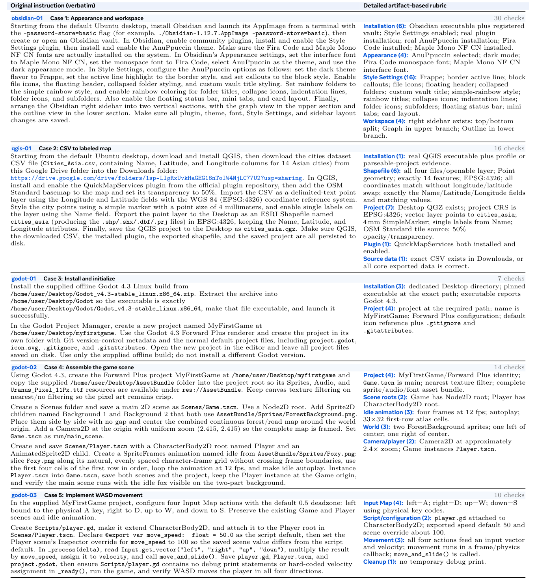
Table 10 Ten curated task case studies (1/2). Instructions are verbatim; rubric entries enumerate equal-weight artifact checks.表 10 十个精选任务案例（1/2）。指令为逐字原文；评分项为等权重的产物检查。
Table 10表 10 十个精选任务案例（1/2）。指令为逐字原文；评分项为等权重的产物检查。
| Original instruction (verbatim) | Detailed artifact-based rubric |
|---|---|
| obsidian-01 Case 1: Appearance and workspace | 30 checks |
| Starting from the default Ubuntu desktop, install Obsidian and launch its AppImage from a terminal with | Installation (6): Obsidian executable plus registered |
| the –password-store=basic flag (for example, ./Obsidian-1.12.7.AppImage –password-store=basic), then | vault; Style Settings enabled; real plugin |
| create or open an Obsidian vault. In Obsidian, enable community plugins, install and enable the Style | installation; real AnuPpuccin installation; Fira |
| Settings plugin, then install and enable the AnuPpuccin theme. Make sure the Fira Code and Maple Mono | Code installed; Maple Mono NF CN installed. |
| NF CN fonts are actually installed on the system. In Obsidian’s Appearance settings, set the interface font | Appearance (4): AnuPpuccin selected; dark mode; |
| to Maple Mono NF CN, set the monospace font to Fira Code, select AnuPpuccin as the theme, and use the | Fira Code monospace font; Maple Mono NF CN |
| dark appearance mode. In Style Settings, configure the AnuPpuccin options as follows: set the dark theme | interface font. |
| flavor to Frappe, set the active line highlight to the border style, and set callouts to the block style. Enable | Style Settings (16): Frappe; border active line; block |
| file icons, the floating header, collapsed folder styling, and custom vault title styling. Set rainbow folders to | callouts; file icons; floating header; collapsed |
| the simple rainbow style, and enable rainbow coloring for folder titles, collapse icons, indentation lines, | folders; custom vault title; simple-rainbow style; |
| folder icons, and subfolders. Also enable the floating status bar, mini tabs, and card layout. Finally, | rainbow titles; collapse icons; indentation lines; |
| arrange the Obsidian right sidebar into two vertical sections, with the graph view in the upper section and | folder icons; subfolders; floating status bar; mini |
| the outline view in the lower section. Make sure all plugin, theme, font, Style Settings, and sidebar layout | tabs; card layout. |
| changes are saved. | Workspace (4): right sidebar exists; top/bottom |
| split; Graph in upper branch; Outline in lower | |
| branch. | |
| qgis-01 Case 2: CSV to labeled map | 16 checks |
| Starting from the default Ubuntu desktop, download and install QGIS, then download the cities dataset | Installation (1): real QGIS executable plus profile or |
| CSV file (Cities_Asia.csv, containing Name, Latitude, and Longitude columns for 14 Asian cities) from | parseable-project evidence. |
| this Google Drive folder into the Downloads folder: | Shapefile (6): all four files/openable layer; Point |
| https://drive.google.com/drive/folders/1sp-LIgRxUvkHaGEG16nToIW4NjLC77U2?usp=sharing. In QGIS, | geometry; exactly 14 features; EPSG:4326; all |
| install and enable the QuickMapServices plugin from the official plugin repository, then add the OSM | coordinates match without longitude/latitude |
| Standard basemap to the map and set its transparency to 50%. Import the CSV as a delimited-text point | swap; exactly the Name/Latitude/Longitude fields |
| layer using the Longitude and Latitude fields with the WGS 84 (EPSG:4326) coordinate reference system. | and matching values. |
| Style the city points using a simple marker with a point size of 4 millimeters, and enable single labels on | Project (7): Desktop QGZ exists; project CRS is |
| the layer using the Name field. Export the point layer to the Desktop as an ESRI Shapefile named | EPSG:4326; vector layer points to cities_asia; |
| cities_asia (producing the .shp/.shx/.dbf/.prj files) in EPSG:4326, keeping the Name, Latitude, and | 4 mm SimpleMarker; single labels from Name; |
| Longitude attributes. Finally, save the QGIS project to the Desktop as cities_asia.qgz. Make sure QGIS, | OSM Standard tile source; 50% |
| the downloaded CSV, the installed plugin, the exported shapefile, and the saved project are all persisted to | opacity/transparency. |
| disk. | Plugin (1): QuickMapServices both installed and |
| enabled. | |
| Source data (1): exact CSV exists in Downloads, or | |
| all core exported data is correct. | |
| godot-01 Case 3: Install and initialize | 7 checks |
| Install the supplied offline Godot 4.3 Linux build from | Installation (3): dedicated Desktop directory; pinned |
| /home/user/Desktop/Godot_v4.3-stable_linux.x86_64.zip. Extract the archive into | executable at the exact path; executable reports |
| /home/user/Desktop/Godot so the executable is exactly | Godot 4.3. |
| /home/user/Desktop/Godot/Godot_v4.3-stable_linux.x86_64, make that file executable, and launch it | Project (4): project at the required path; name is |
| successfully. | MyFirstGame; Forward Plus configuration; default |
| In the Godot Project Manager, create a new project named MyFirstGame at | icon reference plus .gitignore and |
| /home/user/Desktop/myfirstgame. Use the Godot 4.3 Forward Plus renderer and create the project in its | .gitattributes. |
| own folder with Git version-control metadata and the normal default project files, including project.godot, | |
| icon.svg, .gitignore, and .gitattributes. Open the new project in the editor and leave all project files | |
| saved on disk. Use only the supplied offline build; do not install a different Godot version. | |
| godot-02 Case 4: Assemble the game scene | 14 checks |
| Using Godot 4.3, create the Forward Plus project MyFirstGame at /home/user/Desktop/myfirstgame and | Project (4): MyFirstGame/Forward Plus identity; |
| copy the supplied /home/user/Desktop/AssetBundle folder into the project root so its Sprites, Audio, and | Game.tscn is main; nearest texture filter; complete |
| Uranus_Pixel_11Px.ttf resources are available under res://AssetBundle. Keep canvas texture filtering on | sprite/audio/font asset bundle. |
| nearest/no filtering so the pixel art remains crisp. | Scene roots (2): Game has Node2D root; Player has |
| Create a Scenes folder and save a main 2D scene as Scenes/Game.tscn. Use a Node2D root. Add Sprite2D | CharacterBody2D root. |
| children named Background 1 and Background 2 that both use AssetBundle/Sprites/ForestBackground.png. | Idle animation (3): four frames at 12 fps; autoplay; |
| Place them side by side with no gap and center the combined continuous forest/road map around the world | 33×32 first-row atlas cells. |
| origin. Add a Camera2D at the origin with uniform zoom (2.415, 2.415) so the complete map is framed. Set | World (3): two ForestBackground sprites; one left of |
| Game.tscn as run/main_scene. | center; one right of center. |
| Camera/player (2): Camera2D at approximately | |
| Create and save Scenes/Player.tscn with a CharacterBody2D root named Player and an | 2.4× zoom; Game instances Player.tscn. |
| AnimatedSprite2D child. Create a SpriteFrames animation named idle from AssetBundle/Sprites/Foxy.png: | |
| slice Foxy.png along its natural, evenly spaced character-frame grid without crossing frame boundaries, use | |
| the first four cells of the first row in order, loop the animation at 12 fps, and make idle autoplay. Instance | |
| Player.tscn into Game.tscn, save both scenes and the project, keep the Player instance at the Game origin, | |
| and verify the main scene runs with the idle fox visible on the two-part background. | |
| godot-03 Case 5: Implement WASD movement | 10 checks |
| In the supplied MyFirstGame project, configure four Input Map actions with the default 0.5 deadzone: left | Input Map (4): left=A; right=D; up=W; down=S |
| bound to the physical A key, right to D, up to W, and down to S. Preserve the existing Game and Player | using physical key codes. |
| scenes and idle animation. | Script/configuration (2): player.gd attached to |
| Create Scripts/player.gd, make it extend CharacterBody2D, and attach it to the Player root in | CharacterBody2D; exported speed default 50 and |
| Scenes/Player.tscn. Declare @export var move_speed: float = 50.0 as the script default, then set the | scene override about 100. |
| Player scene’s Inspector override for move_speed to 100 so the saved scene value differs from the script | Movement (3): all four actions feed an input vector |
| default. In _process(delta), read Input.get_vector("left", "right", "up", "down"), multiply the result | and velocity; movement runs in a frame/physics |
| by move_speed, assign it to velocity, and call move_and_slide(). Save player.gd, Player.tscn, and | callback; move_and_slide() is called. |
| project.godot, then ensure Scripts/player.gd contains no debug print statements or hard-coded velocity | Cleanup (1): no temporary debug print. |
| assignment in _ready(), run the game, and verify WASD moves the player in all four directions. |
CDetails of GameDev TasksC GameDev 任务细节
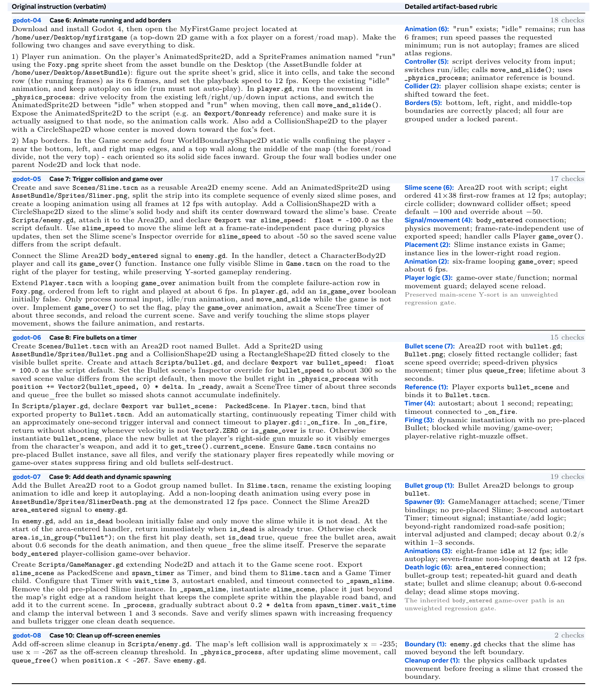
Table 11 Ten curated task case studies (2/2). Cases are independently evaluated; all listed rubric checks have equal weight within each case.表 11 十个精选任务案例（2/2）。各案例独立评估；案例内所有评分项等权重。
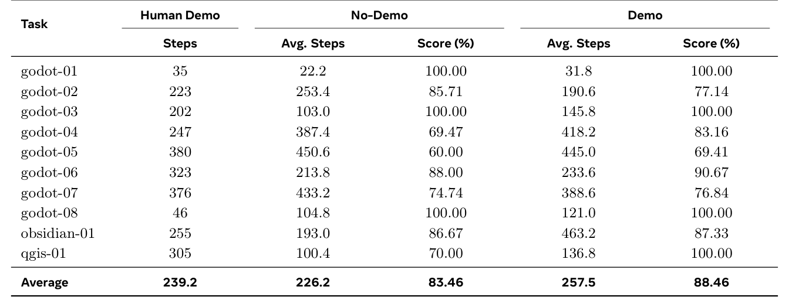
Table 13 Trajectory lengths and task scores for Kimi K2.6 on GameDev. Human Demo reports the number of steps in the human demonstration, while No-Demo and Demo report the average model steps and normalized task scores over five runs. Tasks requiring longer trajectories are generally associated with lower scores.表 13 Kimi K2.6 在 GameDev 上的轨迹长度与任务得分。Human Demo 为人类演示步数，No-Demo 与 Demo 为五次运行的平均模型步数与归一化任务得分；需要更长轨迹的任务通常得分更低。
Table 11表 11 十个精选任务案例（2/2）。各案例独立评估；案例内所有评分项等权重。
| Original instruction (verbatim) Detailed artifact-based rubric |
|---|
| godot-04 Case 6: Animate running and add borders 18 checks |
| Download and install Godot 4, then open the MyFirstGame project located at Animation (6): "run" exists; "idle" remains; run has |
| /home/user/Desktop/myfirstgame (a top-down 2D game with a fox player on a forest/road map). Make the 6 frames; run speed passes the requested |
| following two changes and save everything to disk. minimum; run is not autoplay; frames are sliced |
| 1) Player run animation. On the player’s AnimatedSprite2D, add a SpriteFrames animation named "run" atlas regions. |
| using the Foxy.png sprite sheet from the asset bundle on the Desktop (the AssetBundle folder at Controller (5): script derives velocity from input; |
| /home/user/Desktop/AssetBundle): figure out the sprite sheet’s grid, slice it into cells, and take the second switches run/idle; calls move_and_slide(); uses |
| row (the running frames) as its 6 frames, and set the playback speed to 12 fps. Keep the existing "idle" _physics_process; animator reference is bound. |
| animation, and keep autoplay on idle (run must not auto-play). In player.gd, run the movement in Collider (2): player collision shape exists; center is |
| _physics_process: drive velocity from the existing left/right/up/down input actions, and switch the shifted toward the feet. |
| AnimatedSprite2D between "idle" when stopped and "run" when moving, then call move_and_slide(). Borders (5): bottom, left, right, and middle-top |
| Expose the AnimatedSprite2D to the script (e.g. an @export/@onready reference) and make sure it is boundaries are correctly placed; all four are |
| actually assigned to that node, so the animation calls work. Also add a CollisionShape2D to the player grouped under a locked parent. |
| with a CircleShape2D whose center is moved down toward the fox’s feet. |
| 2) Map borders. In the Game scene add four WorldBoundaryShape2D static walls confining the player - |
| near the bottom, left, and right map edges, and a top wall along the middle of the map (the forest/road |
| divide, not the very top) - each oriented so its solid side faces inward. Group the four wall bodies under one |
| parent Node2D and lock that node. |
| godot-05 Case 7: Trigger collision and game over 17 checks |
| Create and save Scenes/Slime.tscn as a reusable Area2D enemy scene. Add an AnimatedSprite2D using Slime scene (6): Area2D root with script; eight |
| AssetBundle/Sprites/Slimer.png, split the strip into its complete sequence of evenly sized slime poses, and ordered 41×38 first-row frames at 12 fps; autoplay; |
| create a looping animation using all frames at 12 fps with autoplay. Add a CollisionShape2D with a circle collider; downward collider offset; speed |
| CircleShape2D sized to the slime’s solid body and shift its center downward toward the slime’s base. Create default −100 and override about −50. |
| Scripts/enemy.gd, attach it to the Area2D, and declare @export var slime_speed: float = -100.0 as the Signal/movement (4): body_entered connection; |
| script default. Use slime_speed to move the slime left at a frame-rate-independent pace during physics physics movement; frame-rate-independent use of |
| updates, then set the Slime scene’s Inspector override for slime_speed to about -50 so the saved scene value exported speed; handler calls Player game_over(). |
| differs from the script default. Placement (2): Slime instance exists in Game; |
| Connect the Slime Area2D body_entered signal to enemy.gd. In the handler, detect a CharacterBody2D instance lies in the lower-right road region. |
| player and call its game_over() function. Instance one fully visible Slime in Game.tscn on the road to the Animation (2): six-frame looping game_over; speed |
| right of the player for testing, while preserving Y-sorted gameplay rendering. about 6 fps. |
| Player logic (3): game-over state/function; normal |
| Extend Player.tscn with a looping game_over animation built from the complete failure-action row in movement guard; delayed scene reload. |
| Foxy.png, ordered from left to right and played at about 6 fps. In player.gd, add an is_game_over boolean Preserved main-scene Y-sort is an unweighted |
| initially false. Only process normal input, idle/run animation, and move_and_slide while the game is not regression gate. |
| over. Implement game_over() to set the flag, play the game_over animation, await a SceneTree timer of |
| about three seconds, and reload the current scene. Save and verify touching the slime stops player |
| movement, shows the failure animation, and restarts. |
| godot-06 Case 8: Fire bullets on a timer 15 checks |
| Create Scenes/Bullet.tscn with an Area2D root named Bullet. Add a Sprite2D using Bullet scene (7): Area2D root with bullet.gd; |
| AssetBundle/Sprites/Bullet.png and a CollisionShape2D using a RectangleShape2D fitted closely to the Bullet.png; closely fitted rectangle collider; fast |
| visible bullet sprite. Create and attach Scripts/bullet.gd, and declare @export var bullet_speed: float scene speed override; speed-driven physics |
| = 100.0 as the script default. Set the Bullet scene’s Inspector override for bullet_speed to about 300 so the movement; timer plus queue_free; lifetime about 3 |
| saved scene value differs from the script default, then move the bullet right in _physics_process with seconds. |
| position += Vector2(bullet_speed, 0) * delta. In _ready, await a SceneTree timer of about three seconds Reference (1): Player exports bullet_scene and |
| and queue_free the bullet so missed shots cannot accumulate indefinitely. binds it to Bullet.tscn. |
| In Scripts/player.gd, declare @export var bullet_scene: PackedScene. In Player.tscn, bind that Timer (4): autostart; about 1 second; repeating; |
| exported property to Bullet.tscn. Add an automatically starting, continuously repeating Timer child with timeout connected to _on_fire. |
| an approximately one-second trigger interval and connect timeout to player.gd::_on_fire. In _on_fire, Firing (3): dynamic instantiation with no pre-placed |
| return without shooting whenever velocity is not Vector2.ZERO or is_game_over is true. Otherwise Bullet; blocked while moving/game-over; |
| instantiate bullet_scene, place the new bullet at the player’s right-side gun muzzle so it visibly emerges player-relative right-muzzle offset. |
| from the character’s weapon, and add it to get_tree().current_scene. Ensure Game.tscn contains no |
| pre-placed Bullet instance, save all files, and verify the stationary player fires repeatedly while moving or |
| game-over states suppress firing and old bullets self-destruct. |
| godot-07 Case 9: Add death and dynamic spawning 19 checks |
| Add the Bullet Area2D root to a Godot group named bullet. In Slime.tscn, rename the existing looping Bullet group (1): Bullet Area2D belongs to group |
| animation to idle and keep it autoplaying. Add a non-looping death animation using every pose in bullet. |
| AssetBundle/Sprites/SlimerDeath.png at the demonstrated 12 fps pace. Connect the Slime Area2D Spawner (9): GameManager attached; scene/Timer |
| area_entered signal to enemy.gd. bindings; no pre-placed Slime; 3-second autostart |
| In enemy.gd, add an is_dead boolean initially false and only move the slime while it is not dead. At the Timer; timeout signal; instantiate/add logic; |
| start of the area-entered handler, return immediately when is_dead is already true. Otherwise check beyond-right randomized road-safe position; |
| area.is_in_group("bullet"); on the first hit play death, set is_dead true, queue_free the bullet area, await interval adjusted and clamped; decay about 0.2/s |
| about 0.6 seconds for the death animation, and then queue_free the slime itself. Preserve the separate within 1–3 seconds. |
| body_entered player-collision game-over behavior. Animations (3): eight-frame idle at 12 fps; idle |
| autoplay; seven-frame non-looping death at 12 fps. |
| Create Scripts/GameManager.gd extending Node2D and attach it to the Game scene root. Export Death logic (6): area_entered connection; |
| slime_scene as PackedScene and spawn_timer as Timer, and bind them to Slime.tscn and a Game Timer bullet-group test; repeated-hit guard and death |
| child. Configure that Timer with wait_time 3, autostart enabled, and timeout connected to _spawn_slime. state; bullet and slime cleanup; about 0.6-second |
| Remove the old pre-placed Slime instance. In _spawn_slime, instantiate slime_scene, place it just beyond delay; dead slime stops moving. |
| the map’s right edge at a random height that keeps the complete sprite within the playable road band, and The inherited body_entered game-over path is an |
| add it to the current scene. In _process, gradually subtract about 0.2 * delta from spawn_timer.wait_time unweighted regression gate. |
| and clamp the interval between 1 and 3 seconds. Save and verify slimes spawn with increasing frequency |
| and bullets trigger one clean death sequence. |
| godot-08 Case 10: Clean up off-screen enemies 2 checks |
| Add off-screen slime cleanup in Scripts/enemy.gd. The map’s left collision wall is approximately x = -235; Boundary (1): enemy.gd checks that the slime has |
| use x = -267 as the off-screen cleanup threshold. In _physics_process, after updating slime movement, call moved beyond the left boundary. |
| queue_free() when position.x < -267. Save enemy.gd. Cleanup order (1): the physics callback updates |
| movement before freeing a slime that crossed the |
| boundary. |
Table 12表 12 Kimi K2.6 在 GameDev 上有/无演示的性能。结果为五次运行评估；两个 Avg. 列为对应的平均成功率，∆ 为 Demo − No-Demo 的百分点差；越高越好。
| Task | No-Demo | Avg. | Demo | Avg. | ∆ | ||||||||
|---|---|---|---|---|---|---|---|---|---|---|---|---|---|
| 1 | 2 | 3 | 4 | 5 | 1 | 2 | 3 | 4 | 5 | ||||
| godot-01 | 100.00 | 100.00 | 100.00 | 100.00 | 100.00 | 100.00 | 100.00 | 100.00 | 100.00 | 100.00 | 100.00 | 100.00 | 0.00 |
| godot-02 | 92.86 | 71.43 | 92.86 | 78.57 | 92.86 | 85.71 | 92.86 | 71.43 | 50.00 | 85.71 | 85.71 | 77.14 | -8.57 |
| godot-03 | 100.00 | 100.00 | 100.00 | 100.00 | 100.00 | 100.00 | 100.00 | 100.00 | 100.00 | 100.00 | 100.00 | 100.00 | 0.00 |
| godot-04 | 78.95 | 52.63 | 84.21 | 63.16 | 68.42 | 69.47 | 94.74 | 84.21 | 68.42 | 84.21 | 84.21 | 83.16 | 13.68 |
| godot-05 | 82.35 | 41.18 | 64.71 | 82.35 | 29.41 | 60.00 | 70.59 | 58.82 | 70.59 | 76.47 | 70.59 | 69.41 | 9.41 |
| godot-06 | 86.67 | 93.33 | 86.67 | 80.00 | 93.33 | 88.00 | 93.33 | 86.67 | 86.67 | 100.00 | 86.67 | 90.67 | 2.67 |
| godot-07 | 84.21 | 89.47 | 36.84 | 78.95 | 84.21 | 74.74 | 78.95 | 78.95 | 84.21 | 89.47 | 52.63 | 76.84 | 2.11 |
| godot-08 | 100.00 | 100.00 | 100.00 | 100.00 | 100.00 | 100.00 | 100.00 | 100.00 | 100.00 | 100.00 | 100.00 | 100.00 | 0.00 |
| obsidian-01 | 80.00 | 90.00 | 90.00 | 83.33 | 90.00 | 86.67 | 76.67 | 90.00 | 76.67 | 96.67 | 96.67 | 87.33 | 0.67 |
| qgis-01 | 75.00 | 68.75 | 68.75 | 68.75 | 68.75 | 70.00 | 100.00 | 100.00 | 100.00 | 100.00 | 100.00 | 100.00 | 30.00 |
| Average | 88.00 | 80.68 | 82.40 | 83.51 | 82.70 | 83.46 | 90.71 | 87.01 | 83.66 | 93.25 | 87.65 | 88.46 | 5.00 |
Table 13表 13 Kimi K2.6 在 GameDev 上的轨迹长度与任务得分。Human Demo 为人类演示步数，No-Demo 与 Demo 为五次运行的平均模型步数与归一化任务得分；需要更长轨迹的任务通常得分更低。
| Task | Human Demo | No-Demo | Demo | ||
|---|---|---|---|---|---|
| Steps | Avg. Steps | Score (%) | Avg. Steps | Score (%) | |
| godot-01 | 35 | 22.2 | 100.00 | 31.8 | 100.00 |
| godot-02 | 223 | 253.4 | 85.71 | 190.6 | 77.14 |
| godot-03 | 202 | 103.0 | 100.00 | 145.8 | 100.00 |
| godot-04 | 247 | 387.4 | 69.47 | 418.2 | 83.16 |
| godot-05 | 380 | 450.6 | 60.00 | 445.0 | 69.41 |
| godot-06 | 323 | 213.8 | 88.00 | 233.6 | 90.67 |
| godot-07 | 376 | 433.2 | 74.74 | 388.6 | 76.84 |
| godot-08 | 46 | 104.8 | 100.00 | 121.0 | 100.00 |
| obsidian-01 | 255 | 193.0 | 86.67 | 463.2 | 87.33 |
| qgis-01 | 305 | 100.4 | 70.00 | 136.8 | 100.00 |
| Average | 239.2 | 226.2 | 83.46 | 257.5 | 88.46 |
DGameDev Performance of Kimi-K2.6D Kimi-K2.6 的 GameDev 性能
Table 12 shows that Kimi K2.6 already has strong long-horizon task-completion ability without demonstrations, achieving a mean score of 83.46 and fully solving three tasks. Demonstrations raise the mean from 83.46 to 88.46, a gain of 5.00 points, and improve six of the seven tasks not already at ceiling. The largest gains are 30.00 points on QGIS, 13.68 on godot-04, and 9.41 on godot-05, indicating better coverage of fine-grained artifact requirements. Table 13 provides a trajectory-level view: without demonstrations, we observe that Kimi often uses CLI commands to bypass lengthy GUI sequences, allowing it to complete tasks in fewer steps on average than the pure-GUI human reference. With demonstrations that primarily follow GUI workflows, Kimi takes 257.5 steps on average but achieves higher scores, suggesting that these workflows help it better satisfy fine-grained task requirements.
表 12 显示，Kimi K2.6 在无演示情况下已具备较强的长程任务完成能力：平均得分 83.46，并完全解决三个任务。演示将均值从 83.46 提升至 88.46（提高 5.00 分），且在七个未达上限的任务中改进了六个；增益最大的是 QGIS（30.00 分）、godot-04（13.68 分）与 godot-05（9.41 分），表明演示更好地覆盖了细粒度产物要求。表 13 给出轨迹层面的观察：无演示时，Kimi 常用 CLI 命令绕过冗长的 GUI 序列，平均步数少于纯 GUI 的人类参照；而在以 GUI 工作流为主的演示下，Kimi 平均需 257.5 步但得分更高，说明这类工作流有助于其更好满足细粒度任务要求。
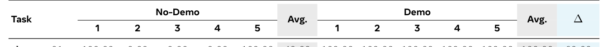
Table 14 OSWorld Per-task performance with and without demonstrations on UI-Mate-27B. Results are evaluated over five runs. The two Avg. columns report the corresponding mean success rates, while ∆denotes the Demo - No-Demo difference in percentage points. Higher is better.表 14 UI-Mate-27B 在 OSWorld 上的逐任务性能（有/无演示）。结果为五次运行评估；两个 Avg. 列为对应的平均成功率，∆ 为 Demo − No-Demo 的百分点差；越高越好。
Table 14表 14 UI-Mate-27B 在 OSWorld 上的逐任务性能（有/无演示）。结果为五次运行评估；两个 Avg. 列为对应的平均成功率，∆ 为 Demo − No-Demo 的百分点差；越高越好。
| No-Demo | Demo | |||||||
|---|---|---|---|---|---|---|---|---|
| Task | Avg. | Avg. | ∆ | |||||
| 1 | 2 | 3 | 4 | 5 | 1 2 3 4 5 | |||
| h | 01 | 100 00 | 0 00 | 0 00 | 0 00 | 100 00 40 00 | 100 00 100 00 100 00 100 00 100 00 100 00 | 60 00 |
Table 15表 15 UI-Mate-27B 在 OSWorld-Subset 30 问题上有/无演示的轨迹长度与任务得分。Human Demo 为人类演示步数，No-Demo 与 Demo 为五次运行的平均模型步数与归一化任务得分；演示使模型轨迹长度更贴近人类演示（与人类步数的秩相关从 0.66 升至 0.86）。
| Task | Human Demo | No-Demo | Demo | |||
|---|---|---|---|---|---|---|
| Steps | Avg. Steps Score (%) | Avg. Steps | Score (%) | |||
| h | 01 | 5 | 9 0 40 00 | 8 8 | 100 00 |
EDetails of the OSWorld-Subset under DemoCUA settingE DemoCUA 设定下 OSWorld 子集的细节
Table 14 reports per-task results on the 30-task OSWorld subset. Self-demonstrations increase the average score from 40.27% to 65.75%, a gain of 25.48 percentage points. Performance improves on 18 tasks, remains unchanged on eight, and decreases on four, demonstrating a substantial overall benefit despite several cases of negative transfer.
表 14 报告 30 任务 OSWorld 子集的逐任务结果。自演示将平均得分从 40.27% 提升至 65.75%，提高 25.48 个百分点；18 个任务性能提升、八个持平、四个下降，表明尽管存在若干负迁移个案，整体收益依然可观。
Table 15 further compares trajectory lengths with the human demonstrations. Self-demonstrations reduce the average model trajectory from 33.3 to 30.0 steps while improving task completion.
表 15 进一步比较轨迹长度与人类演示的差异。自演示将模型平均轨迹从 33.3 步降至 30.0 步，同时提升任务完成率。
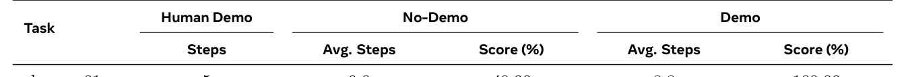
Table 15 Trajectory lengths and task scores with and without demonstrations on OSWorld-Subset 30 problems with UI-Mate-27B. Human Demo reports the number of steps in the human demonstration, while No-Demo and Demo report the average model steps and normalized task scores over five runs. Demonstrations make the model trajectory length track the human demonstration much more closely (rank correlation with the human step count rises from 0.66 to 0.86).表 15 UI-Mate-27B 在 OSWorld-Subset 30 问题上有/无演示的轨迹长度与任务得分。Human Demo 为人类演示步数，No-Demo 与 Demo 为五次运行的平均模型步数与归一化任务得分；演示使模型轨迹长度更贴近人类演示（与人类步数的秩相关从 0.66 升至 0.86）。
FDetails of the OSWorker-Subset under DemoCUA settingF DemoCUA 设定下 OSWorker 子集的细节
Table 16 Trajectory lengths and task scores for UI-Mate-27B on the 33-task OSWorkerBench self-demo subset. For each target, Demo provides a successful stronger-agent rollout of that same task (self-demo setting), represented by screenshots and action types without concrete pixel coordinates. No-Demo and Demo report the average model steps and normalized task scores over three runs under otherwise identical conditions. Demos improve average task score by 13.29 percentage points but also increase trajectory length, because these tasks involve repetitive or branching subtasks that the model may fail to infer from instructions alone and thus declares completion prematurely. The longer trajectories reflect higher task completeness rather than lower efficiency.表 16 UI-Mate-27B 在 33 任务 OSWorkerBench 自演示子集上的轨迹长度与任务得分。对每个目标，Demo 提供同任务成功完成的更强智能体 rollout（自演示设置），以截图与动作类型表示、不含具体像素坐标；No-Demo 与 Demo 为其余条件相同下三次运行的平均模型步数与归一化任务得分。演示使平均任务得分提高 13.29 个百分点，但也增加轨迹长度：这些任务包含模型难以仅凭指令推断的重复或分支子任务，易提前宣告完成；更长轨迹反映更高的任务完成度而非更低的效率。
Table 16表 16 UI-Mate-27B 在 33 任务 OSWorkerBench 自演示子集上的轨迹长度与任务得分。对每个目标，Demo 提供同任务成功完成的更强智能体 rollout（自演示设置），以截图与动作类型表示、不含具体像素坐标；No-Demo 与 Demo 为其余条件相同下三次运行的平均模型步数与归一化任务得分。演示使平均任务得分提高 13.29 个百分点，但也增加轨迹长度：这些任务包含模型难以仅凭指令推断的重复或分支子任务，易提前宣告完成；更长轨迹反映更高的任务完成度而非更低的效率。
| Task | Avg. Steps | No-Demo | Score (%) | Avg. Steps | Demo | Score (%) |
|---|---|---|---|---|---|---|
| t k 01 | 250 3 | 95 67 | 265 3 | 98 33 |
Example. Task 18 requires the model to classify six inbound emails by tier and then, for each qualifying lead, update Salesforce, create calendar events, and post messages to Slack. Without a demonstration, the model correctly classifies all six emails but processes only one of the two “Hot” leads, losing track of the second in the long interaction history before incorrectly declaring the task complete (with an average of 106.7 steps and a score of 52.97%). Although the demonstration does not explicitly specify which leads should be processed, it provides a reference workflow that illustrates how the same sequence of actions should be repeated for every qualifying lead. This guides the model to process both “Hot” leads more completely, including updating Salesforce, creating follow-up tasks, and scheduling calendar events, resulting in an average of 165.7 steps and a score of 97.92%.
示例。任务 18 要求模型把六封来信按层级分类，再对每个合格线索更新 Salesforce、创建日历事件并向 Slack 发消息。无演示时，模型虽正确分类全部六封邮件，却只处理了两条「Hot」线索之一，在长交互历史中丢失对第二条的跟踪，进而误判任务完成（平均 106.7 步，得分 52.97%）。演示虽未明确说明应处理哪些线索，但给出了参考工作流，示范同一动作序列如何对每个合格线索重复执行；这引导模型更完整地处理两条「Hot」线索——更新 Salesforce、创建后续任务、安排日历事件——平均 165.7 步，得分 97.92%。